<!--
总学习路线：https://www.codefather.cn/course/1789189862986850306/section/1789190431398928386，鱼皮
操作系统路线：https://www.codefather.cn/course/1789189862986850306/section/1789190984099143681，鱼皮
计网路线：https://www.codefather.cn/course/1789189862986850306/section/1789191030769164289，鱼皮
学习视频 1：https://www.bilibili.com/video/BV1YE411D7nH，王道操作系统
学习视频 2：https://www.bilibili.com/video/BV1c4411d7jb，计算机网络微课堂（湖科大教书匠）
-->
PPT图片引用自湖科大教书匠。
网络（Network）由若干结点（Node）和连接这些结点的链路（Link）组成。
多个网络可以通过路由器互联起来，构成一个覆盖范围更大的网络，即互联网（Internet），或称互连网。因此，互联网是网络的网络。
因特网（Internet）是全球最大的互联网络，用户数以亿计，互连的网络数以百万计。因特网采用TCP/IP协议族作为通信的规则，其前身是美国的ARPANET。
按照覆盖范围，可以将计算机网络分为WAN（广域网）、MAN（城域网）、LAN（局域网）与PAN（个域网）。
Web（万维网，World Wide Web）是基于超文本（Hypertext）和HTTP协议的全球性分布式信息系统，由Tim Berners Lee于1989年提出，通过超链接将互联网上的资源（如文本、图像、视频等）组织成相互关联的网状结构，为用户提供图形化界面以浏览和交互信息。其核心技术包括HTML（定义页面结构）、URL（统一资源定位符）和浏览器（解析与呈现内容），现已成为互联网最主流的服务之一。
以太网（Ethernet）是常见的（有线介质）局域网（LAN）技术，采用CSMA/CD协议实现多设备共享信道通信，由Xerox、Intel和DEC公司于1980年代联合开发，支持10Mbps至万兆速率。其物理介质包括双绞线、同轴电缆等，拓扑结构从早期的总线型演进为星型（通过集线器或交换机连接），具有高可靠性和低成本的特点，逐步取代了令牌环等其他局域网技术。尽管标准以太网的数据链路层仅提供无确认、无回传的不可靠传输服务，但以太网所采用的CSMA/CD协议能够保证以太网在事实上其实是”可靠“的。
以太网属于OSI模型的物理层和数据链路层，而Web基于应用层协议（HTTP）实现。
宽带（Broadband）是通信技术中用于描述高频宽、高速率数据传输能力的术语，其核心特征是能够同时支持多频段信号传输，从而承载更高的数据吞吐量。与传统的窄带（Narrowband，如电话拨号的56kbps）相比，宽带通过频带宽度（Bandwidth）扩展、调制技术优化与多路复用技术（例如FDM、TDM、CDMA）等手段实现较强的性能。
网络的三种交换方式：
电路交换：在通信前建立专用物理连接（如电话线路），全程独占信道直至通信结束，实时性强但资源利用率低。
报文交换：以完整报文为单位进行“存储-转发”，无需预先建立连接但延迟大，适用于非实时批量通信（如电子邮件）与大文件传输。
分组交换：将数据拆分为固定长度的小分组独立传输，支持动态复用链路和按需重传，效率高但处理复杂度较高，适用于互联网等通用数据传输。分组交换平衡了效率与灵活性，已经成为现代数据网络的核心技术，尤其适应异构设备和突发流量。
ISP（Internet Service Provider，互联网服务提供商）是提供与访问、使用、管理或参与互联网相关的各种服务的组织。在中国内地，主要的ISP为中国电信、中国移动和中国联通。
CDN（Content Delivery Network或Content Distribution Network，内容分发网络）是由地理上分布的代理服务器和数据中心组成的分布式网络系统，旨在通过将内容分发到离用户更近的节点，解决因传输距离和网络拥塞导致的访问延迟和性能问题。CDN通常采用反向代理技术作为其实现内容分发和缓存的核心机制之一。用户的请求通过 DNS 被引导至最近的 CDN 节点；如果该节点已缓存所请求的内容，则直接响应用户请求，否则会从源服务器获取内容并进行缓存。此外，CDN还结合了负载均衡、智能路由、内容缓存、安全防护等多种技术，以提供高效、可靠和安全的内容分发服务。
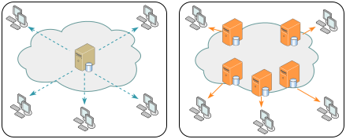
中科大测速网：https://test.ustc.edu.cn/
常用的计算机网络性能指标共有8种：
速率（Rate）
带宽（Bandwidth）
吞吐量（Throughput）
时延（Latency）
时延带宽积（Delay-Bandwidth Product）
往返时间（Round-Trip Time，RTT）
利用率（Utilization）
丢包率（Packet Loss Rate）
接下来逐个解释。
1. 速率
速率也称比特率或数据率，是连接在计算机网络上的主机在数字信道上传送比特的（实际）速率，是衡量网络实际传输速度的最基础指标。
常用的速率单位有：
应区分计算机中的数据量单位、信息论中的信息量单位
例如现有一个大小为
2. 带宽
在模拟信号的传统定义中，带宽是信号所包含的各种不同频率成分所占据的频率范围，基本单位为
在计算机网络中，带宽表示网络的通信线路理论上所能传送数据的能力，换言之，表示理想情况下单位时间内从网络的某一点到另一点所能通过的最高速率。网络带宽的的单位与速率相同。
3. 吞吐量
吞吐量表示在单位时间内通过某个网络、信道或接口的有效数据量。吞吐量常被用于对现实情况中网络的一种测量，以便知道实际上有多少数据能成功通过网络。吞吐量的的单位与速率相同。
吞吐量受到网络带宽或额定速率的限制，通常小于带宽，并且受延迟、丢包、网络拥塞等因素影响。例如，一个网络的带宽可能为
4. 时延
网络时延由发送时延、传播时延与处理时延三部分构成，有时也将处理时延进一步细分为排队时延与处理时延，本文不作区分，统称处理时延。时延的基本单位是秒（
发送时延的计算公式为 分组长度(b) / 发送速率(b/s)；传播时延的计算公式为 信道长度(m) / 电磁波传播速率(m/s)。处理时延受多方面因素影响，不便计算，通常直接对结果进行观测。
5. 时延带宽积
时延带宽积是传播时延与带宽的乘积，链路的时延带宽积也被称为以比特为单位的链路长度。时延带宽积表示若发送端连续发送数据，则当所发送的第一个比特即将抵达时，发送端已经发送比特数量。
6. 往返时间（RTT）
往返时间表示一次双向交互所需的时间。
7. 利用率
利用率分为信道利用率与网络利用率。信道利用率是指某信道有多少百分比的时间有数据通过，网络利用率是指全网络的信道利用率的加权平均。
根据排队论，信道的利用率越大，该信道引起的时延也将迅速增加，因此信道利用率并非越高越好。
如果用
由上述公式可知，
当网络利用率达到
当网络利用率超过
当网络利用率接近
因此，部分ISP会控制自己的信道利用率不超过
与此同时，信道利用率也不应过低，因为过低的信道利用率这意味着通信资源存在显著浪费。应该使用若干机制，根据情况动态调整输入到网络中的通信量，使网络利用率保持在一个合理的范围内。
8. 丢包率
丢包率，或称为分组丢失率，指在一定时间范围内传输过程中丢失的分组数量与总分组数量的比率。丢包率具体可以被细分为接口丢包率、结点丢包率、链路丢包率、路径丢包率与网络丢包率等等。这是网络运维人员非常关心的一个性能指标，但用户一般意识不到发生了网络丢包。
主要是以下两种情况导致分组丢失：
分组在传输过程中出现误码，被结点丢弃；
分组到达一台队列已满（或将满）的分组交换机时被丢弃。
丢包率反映了网络的拥塞情况：
无延迟时路径丢包率为
轻度拥塞时路径丢包率一般为
严重拥塞时路径丢包率一般为
国际标准化组织ISO于1977年成立专门机构，提出了开放系统互连基本参考模型OSI/RM，简称OSI。此前，也有许多公司提出自行制订的体系结构。
不过，OSI/RM只是一个抽象概念，基于OSI/RM于1983年形成开放系统互连基本参考模型的正式文件，即ISO 7498国际标准。
OSI体系模型中，计算机网络的体系结构为：
OSI是法律上的国际标准，但实际上OSI标准失败了，现在得到广泛应用的是事实上的国际标准——非国际标准TCP/IP。
在TCP/IP体系模型中，计算机网络的体系结构为：
TCP/IP协议中包含大量协议，称为TCP/IP协议族。一般用户主机的操作系统带有符合TCP/IP体系结构标准的TCP/IP协议族，路由器则只包含网际层与网络接口层。
IP over everything：IP协议互连不同的网络接口
Everything over IP：IP协议为各种互联网应用提供服务
各层的作用可被概括为：
应用层：直接为应用程序提供网络服务接口，定义数据传输格式及业务逻辑（如文件传输、网页访问、邮件收发）。
传输层：实现端到端（进程间）通信，通过TCP协议保证可靠传输（流量控制、拥塞控制）或UDP协议提供低延迟传输。
网际层：通过IP地址实现逻辑寻址与跨网络路由选择，完成数据包的分片重组与全局寻址。
网络接口层：将数据封装为物理网络可识别的帧格式（如以太网帧），即所谓封装成帧，同时基于MAC地址完成相邻设备的直接通信及物理信号传输。
五层原理体系结构将TCP/IP体系结构中的网络接口层参考ISO划分为了数据链路层与物理层，方便分析与研究。
由于TCP/IP协议栈的网络层使用网际协议IP，这是整个协议栈的核心协议，因此在TCP/IP协议栈中五层原理体系结构的网络层也常被称为网际层，对应TCP/IP体系结构中的网际层。
一个例子：在浏览器中输入网址后，首先产生应用层的HTTP报文（GET请求）。接着，运输层为报文添加TCP首部，使原报文成为TCP报文段，通过端口号区分应用进程并实现可靠传输。随后，网络层再为TCP报文段添加IP首部，使TCP报文段成为IP数据报，此时数据在网络层具备路由寻址能力。然后，数据链路层为IP数据报添加ETH首部与ETH尾部（假设网络N1为以太网），同时插入前导码（Preamble）和帧起始符（SFD），使IP数据报成为以太网帧，以便帧能被相应网络设备识别与校验。最后，物理层将帧转换为比特流，通过调制技术将数字信号转为电信号/光信号，数据进入物理介质传输。传输过程中，路由器需先解封装以太网帧获取IP数据报，检查目标IP地址后重新封装新帧进行转发。数据最终到达目标服务器（Web服务器），服务器通过逆向解封装过程提取原始HTTP报文，并根据报文内容生成响应。
以下是一些术语，尽管这些术语源于OSI七层协议体系结构，但这些术语均适用于另外两种体系结构。
实体（Entity）：实体是任何可发送或接收信息的硬件或软件进程。
对等实体（Peer Entity）：收发双方相同层次中的实体。正在通信中的两个浏览器属于对等实体，但浏览器与网卡不是对等实体。
协议（Protocol）：控制两个对等实体进行逻辑通信的规则的集合。之所以是逻辑通信，是因为这种通信实际上并不存在，是为了研究的方便而假设的。例如，应用层使用HTTP、SMTP等协议进行通信，传输层主要使用TCP、UDP进行通信，网络层通过IP等协议进行通信，链路层可以使用传统以太网CSMA/CD进行通信，物理层可以使用传统以太网的曼彻斯特编码进行通信。
协议有三个要素：语法（Syntax）、语义（Semantics）与同步（Timing）。语法定义了所交换信息的格式，语义定义了通讯双方所要完成的操作，同步定义了收发双方的时序关系。
服务（Service）：在协议的控制下，两个对等实体间的逻辑通信使得本层能够向上一层提供服务（作为上一层逻辑通信的基础）。实现本层协议需要使用下一层所提供的服务，例如运输层的TCP、UDP协议依赖于网际层的IP服务。简而言之，协议是水平的，服务是垂直的。下层的协议对上层的协议是透明的，实体能享受相邻下层提供的服务，但并不知道实现该服务的具体协议。
服务访问点（Service Access Point，SAP）：在同一系统中相邻两层的实体交换信息的逻辑接口，用于区分不同的服务类型。例如，数据链路层的访问服务点是帧的“类型”字段，网络层的服务访问点是IP数据报首部中的“协议字段”，运输层的服务访问点是“端口号”。
服务原语（Service Primitive）：上层使用下层所提供的服务需要通过与下层交换的一些命令，这些命令就是服务原语。
协议数据单元（rotocol Data Unit，PDU）：对等层次之间传送的数据包称为该层的协议数据单元。例如，TCP协议对应的协议数据单元为TCP报文段，UDP协议对应的协议数据单元为UDP报文段。应用层对等实体逻辑通信的数据包一般称为应用报文。
服务数据单元（Service Data Unit，SDU）：同一系统内层与层间交换的数据包称为服务数据单元。一个SDU可以被划分为多个PDU，多个SDU也可以被合并为一个PDU。
物理层考虑的是怎样才能在连接各种计算机传输媒体上传输数据比特流，为数据链路层屏蔽了各种传输媒体的差异，使数据链路层不必关心网络具体的传输媒体，只需要关注如何完成本层的协议。
物理层的主要任务：
机械特性：指明接口所用接线器的形状与尺寸，以及引脚的数目与排列、固定和锁定。
电气特性：指明在接口电缆的各条线上出现的电压范围。
功能特性：指明某条线上出现的某一电平表示的含义。
过程特性：指明对于不同功能的各种可能事件的出现顺序。
物理层的传输媒体可分为导引型传输媒体与非导引型传输媒体两类。常见的导引型传输媒体有同轴电缆、双绞线、光纤与电力线，常见的非导引型传输媒体有无线电波、微波、红外线与可见光。
| 绞合线类别 | 带宽 | 线缆特点 | 典型应用 |
|---|---|---|---|
| 3 | 16MHz | 2对4芯双绞线 | 模拟电话，传统以太网 |
| 4 | 20MHz | 4对8芯双绞线 | 传统令牌局域网 |
| 5 | 100MHz | 较之4类线增加了绞合度 | |
| 5E（超分类） | 125MHz | 较之5类线有更小的衰减 | 家用1GB/s的家庭局域网带宽 |
| 6 | 250MHz | 较之5类线改善了串扰等问题 | 万兆局域网 |
| 7 | 600MHz | 屏蔽双绞线技术 |
注：绞合的作用是抵御部分来自外界的电磁波干扰，并减少相邻导线的电磁干扰。
按照同一时刻传输的比特数量，网络的传输方式可以分为串行传输与并行传输。
数据在传输线路上传输是串行的。
数据在计算机内部的传输则通常是并行的，例如CPU与内存间通过总线进行数据传输。
按照传输的字节是否同步，网络的传输方式可以被分为同步传输与（字节之间的）异步传输。
同步传输中，数据以稳定、连续的比特流形式传输，字节间不存在间隔，接收端需要在每个比特信号的中间时刻进行检测、判别接收到的是比特0还是比特1，由于这一过程存在判别时刻的累积误差，因此需要时钟同步的方法。时钟同步的方法：外同步，在收发双方之间添加一条单独的时钟信号线；内同步，发送端将同步信号编码到发送数据中一同传输，例如曼彻斯特编码。
异步传输中，数据以字节为独立的传输单位，字节间的时间间隔不固定，接收端只需要在每个字节的起始处对字节内的比特实现同步，为此通常需要在每个字节前后分别加上起始位与结束位。异步只存在于字节之间，字节中的每个比特仍需要同步，即各比特的持续时间应当相同。
按照数据传输的方向，网络的传输方式可以分为单工、半双工与全双工。
单工：单向通信，例如无线电广播。
半双工：双向交替通信，例如无线对讲机。
全双工：双向同时通信，例如手机通话。
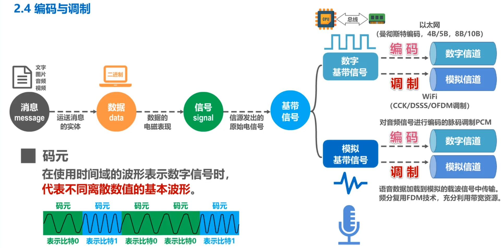
传输媒体与信道是两个概念。单工传输至少包含一个信道，半双工传输与全双工传输至少包含两个信道；如果使用信道复用技术，一个传输媒体可以包含多个信道。
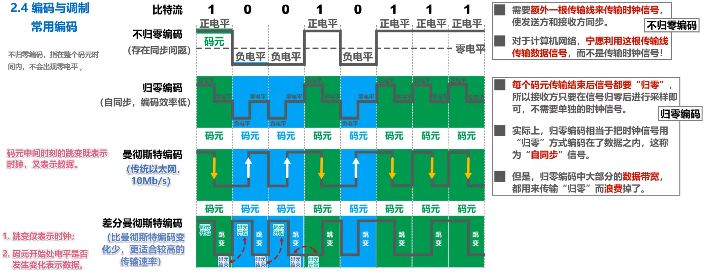
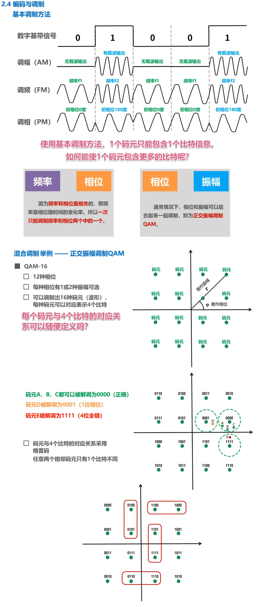
当数字信号通过信道时会产生失真，信号波形失去了码元间的清晰界限，这种现象称为码间间干扰。
导致失真的主要因素有：
码元传输速率
信号传输距离
噪声干扰
传输媒体质量
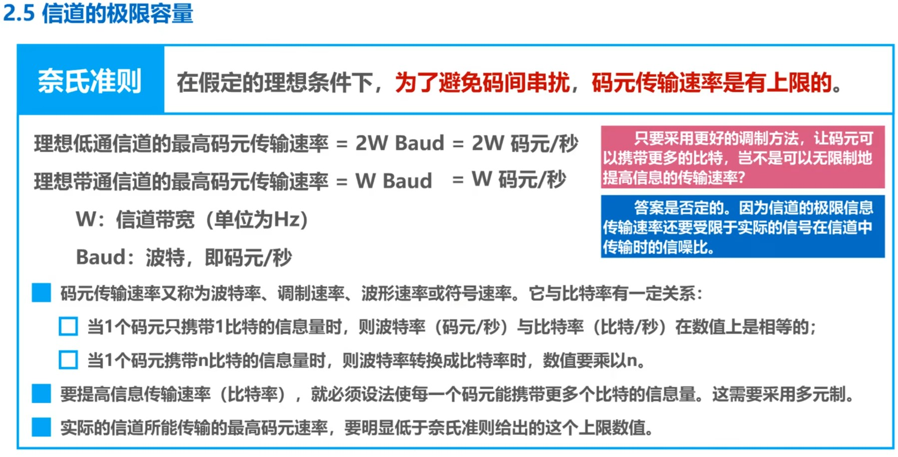
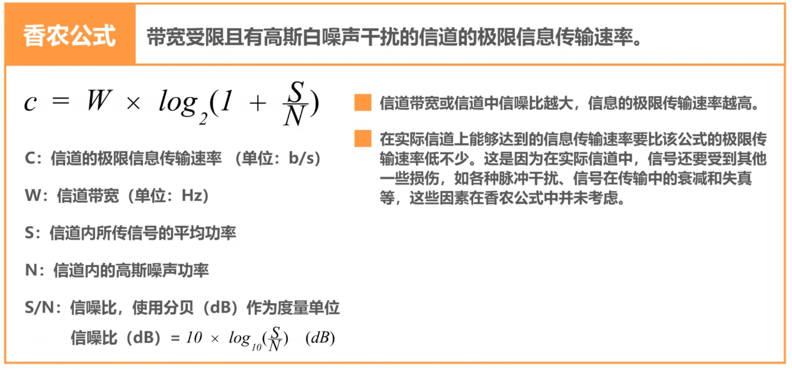
综合Nyquist准则与Shannon公式来看，在信道带宽一定的情况下，要想提高信息的传输速率，就必须采用多元制调制，同时努力提高信道中的信噪比。
自Shannon公式发表后，各种新的信号处理与调制方法不断出现，其目的均是尽可能接近Shannon公式所给出的传输极限速率。
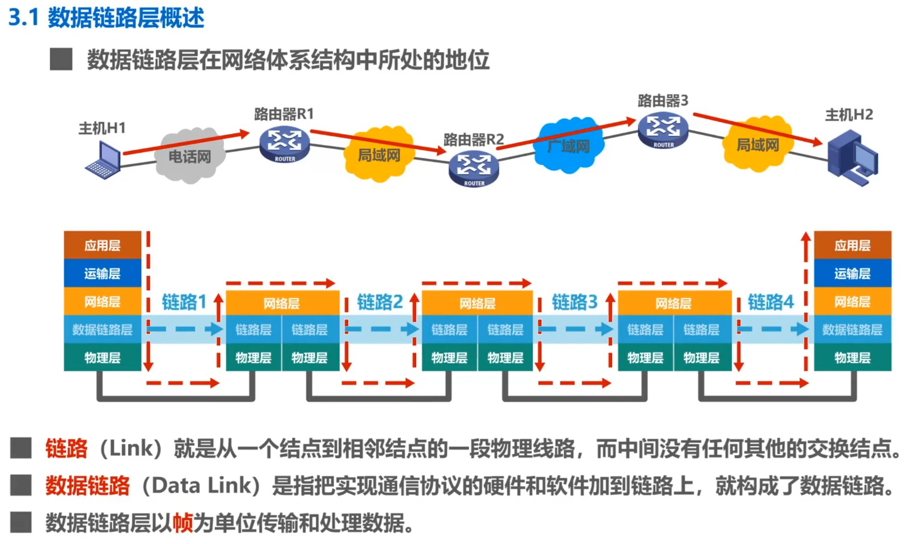
数据链路层要解决的三个重要问题分别是封装成帧、差错检测与可靠传输。
封装成帧
发送方：应用层将待发送的数据首先封装为应用层协议数据单元，交付给运输层。运输层再为其添加运输层协议首部，使之成为运输层协议数据单元，交付给网络层。网络层为其添加网络层协议首部，使之成为网络层协议数据单元，然后交付给数据链路层。数据链路层为其添加数据链路层协议首部——简称帧头，同时添加相应的帧尾。数据链路层为网络层协议数据单元添加帧头帧尾的这一操作即所谓封装成帧，从而支持在链路上传输数据。
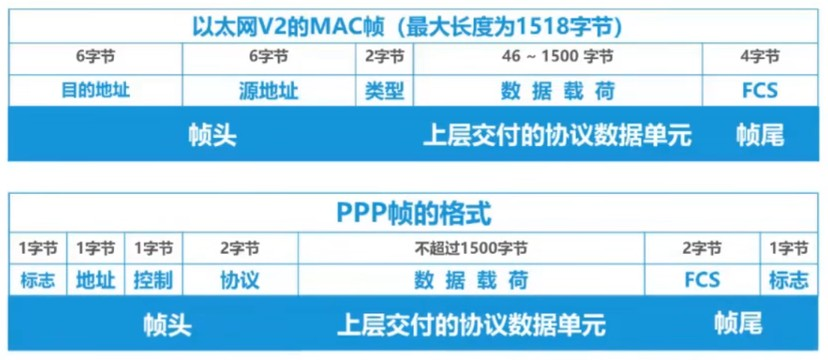
差错检测
在帧的传送中，需要一些手段进行差错检测，检查在传输过程中是否出现了误码。拿以太网V2的MAC帧为例，通过在帧尾4字节的FCS（Frame Check Sequence）字段中写入检错码，接收方在接收帧后通过检错码与检错算法，就可以判断出帧在传输过程中是否出现误码。
可靠传输
接收方主机在接收到存在误码的帧后将丢弃该帧。如果数据链路层向上层提供的是不可靠服务，则不会有更多动作；如果数据链路层向上层提供的是可靠服务，则需要其他措施以保证接收方能够接收到存在误码的帧的正确副本。尽管误码不能完全避免，但若能够保证发送方发出的所有信息（而非具体数据）能被接收方全部收到，这就被称为可靠传输。
在前文数据链路层的概述中有提到，所谓封装成帧，就是数据链路层为上层交付的协议数据单元添加帧头（Header）与帧尾（Trailer或End Flag），使之称为帧（Frame）。
帧头与帧尾中包含了重要的控制信息，他们的作用之一是帧定界。例如，链路上传输的是比特流，是一串二进制的数据。接收方的数据链路层能够从物理层交付的比特流中提取出一个个帧，就是依赖于帧头与帧尾进行帧定界。
以前文中有展示的PPP帧为例，其帧头和帧尾各自包含一个长度为1字节的标志字段，均为0x7E，即二进制01111110。依据帧定界标志，接收方的数据链路层就能提取出帧。
规定帧定界标志是一种实现帧定界的方式，但并非每一种数据链路层协议的帧都包含有帧定界标志。例如，前文中有展示的以太网V2的MAC帧的帧头和帧尾就不包含帧定界标志。以太网V2的MAC帧的帧定界实现方式是在发送方物理层首先为其添加8字节的前导码，然后再转换为电信号并发送。前导码中，前7个字节为前同步码，用途为同步接收方的时钟，最后一个字节作为帧起始标记。由于以太网规定了帧间间隔时间为96比特时间，因此MAC帧无需帧结束定界符。
任何数据链路层都希望能够实现透明传输。所谓透明传输，是指数据链路层对上层交付的传输数据没有任何限制，就像数据链路层不存在一样。
非透明传输的例子：某面向字节的数据链路层在封装成帧的过程中于数据首尾分别插入帧定界标志，要求来自网络层的IP数据报内容不能含有该帧定界标志，否则接收方无法正确根据帧定界标志提取帧。这就是一个非透明传输的例子，因为该数据链路层对上层交付的传输数据存在限制：不能包含帧定界标志。
上例的一个解决方案是在发送帧前数据链路层对上层交付数据进行扫描，每扫描到数据中存在一个帧定界标志就在该帧定界标志前插入控制符0x1B（即ESC）作为转义符；考虑到转义符本身也可能被包含于数据之中，因此每扫描到数据中存在一个转义符，应该在转义符前再插入一个转义符，最后经过后续处理后发出。这样，接收方扫描到第一个帧定界标志时就能知道“噢，这是一个帧的开头，我应该从该帧定界标志起开始提取帧”，接着如果扫描到与控制符0x1B相连的帧定界标志时也能知道“看来这属于上层交付的协议数据单元，我应该把这整个内容视为帧内容数据的一部分”，当扫描到第一个不与控制符0x1B相连的帧定界标志时就能意识到“帧到这里就结束了，应当停止继续提取”。
以上解决方案就是面向字节的物理链路使用字节填充（或称字符填充）的方法实现透明传输。
对于面向比特的物理链路，则使用比特填充的方法实现透明传输。流程与上例大致相同，只不过考虑到面向比特的物理链路在传输数据时信道内只存在比特0与比特1，因此可以用更合适、更方便的方法实现透明传输，例如零比特填充法。假设帧的首尾以二进制01111110作为帧定界标志，则只需要保证帧的数据部分不存在01111110，因此可以在每扫描到帧的数据部分存在五个连续的比特1时就在其后方插入一个比特0（以破坏01111110的结构），接收方的数据链路层在由物理层交付的比特流中提取帧时只需要剔除掉帧的数据部分中每5个连续的比特1后的比特0，就可以提取出正确的数据。
为了提高帧的传输效率，应该尽可能让帧的数据部分更长一点。不过，考虑到差错控制的若干因素，每种数据链路层协议都规定了帧的数据部分的长度上限，称为最大传送单元（Maximum Transfer Unit，MTU）。
在现实情况下，通信链路并不是理想的，比特在传输过程中可能产生差错，即比特1变成了比特0或比特0变成了比特1，这种现象被称为比特差错。在一段时间内，传输错误的比特占所传输的比特总数的比率称为误码率（Bit Error Rate，BER）。
使用差错检测码来检测数据在传输过程中是否产生了比特差错，是数据链路层所要解决的重要问题之一。以太网V2的MAC帧的帧尾包含了一个长4字节的帧检验序列FCS字段，点对点协议PPP的帧在帧尾也包含了一个长2字节的帧检验序列FCS字段，二者的作用都是支持接收方的数据链路层检查帧在传输过程中是否产生了误码。
以下介绍一些差错检测方法。
在待发送的数据后添加1位奇偶校验位，使整个数据（包括添加的校验位）中比特1的个数为奇数或偶数，分别称为奇校验或偶校验。无论是奇校验还是偶校验，只要有奇数个位发生误码，那么比特1数量的奇偶性发生变化，此时能够检出误码；只要有偶数个位发生误码，那么比特1数量的奇偶性不会发生变化，此时不能检出误码——存在误码但不能检出的情况被称为漏检。
奇偶校验的漏检率非常高，数据链路层几乎不会采用该检测方法。
循环冗余校验（Cyclic Redundancy Check，CRC）是一种具有强检错能力的检错方法，漏检率极低。要使用CRC，则收发双方应约定好一个生成多项式
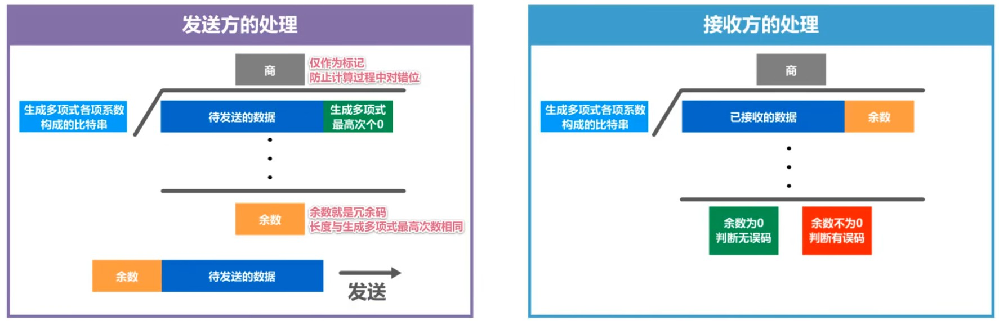
被证明具有较好检错效果、低漏检率的常用生成多项式：
尽管以上多项式看似计算复杂，但其实很容易通过硬件电路实现。鉴于其非常好的检错能力，故CRC被广泛应用在数据链路层。此外，性质优良的生成多项式
发送方CRC的具体流程：首先进行预处理，在原始数据末尾添加与生成多项式最高次数相等的零（如多项式最高次为16则补16个比特0），形成新的被除数，接着进行模2除法，用生成多项式对应的二进制数作为除数，对预处理后的数据执行模2除法（位异或），得到余数作为冗余码（FCS），最后将计算出的冗余码附加到原始数据末尾，组成完整帧并发送。
接收方CRC的具体流程：接收时首先进行验证计算，使用相同的生成多项式对接收到的完整帧（含冗余码）再次进行模2除法，随后进行判断，若余数为零，判定数据无差错；若余数非零，则判定传输过程中出现误码并丢弃该帧。
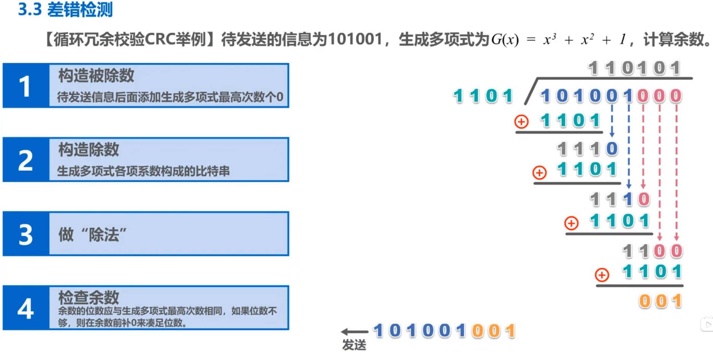
应注意，检错码只能检测帧在运输过程中是否存在差错，但不能定位错误，无法纠正错误。要纠正传输中的差错，可以使用冗余信息更多的纠错码进行前向纠错，但由于纠错码的开销较大，在计算机网络中很少使用。
发现差错后，是通过检错重传的方式纠正传输中的差错还是仅丢弃检测到差错的帧，取决于数据链路层向上层提供的是可靠传输服务还是不可靠传输服务。
要实现可靠传输，就需要实现”发送端发送什么，接收端就收到什么“。
比特差错是传输差错中的一种。事实上，除了比特差错以外，传输差错还包括分组丢失、分组失序以及分组重复。只不过，后三者一般出现在数据链路层的上层，而比特差错往往出现在数据链路层。因此，以下主要研究三种数据链路层上针对比特差错的可靠传输服务：停止-等待协议（Stop-and-Wait，SW）、回退N帧协议（Go-Back-N，GBN）以及选择重传协议（Selective Repeat, SR）。
一般而言，可靠传输的实现比较复杂、开销较大，考虑到有线链路的误码率较低，通常不会要求数据链路层向上提供可靠传输服务。即使出现误码，也可以由其上层处理可靠传输问题，例如以太网。但无线链路易受干扰，有较高的误码率，因此这种情况下会要求数据链路层必须向上提供可靠传输服务，例如802.11无线局域网。
注：接下来将分析三种数据链路层上的可靠传输服务，但这些可靠传输实现机制的基本原理却并不局限于数据链路层，也能被应用到计算机网络体系结构的各层协议中。
停止-等待协议（Stop-and-Wait，SW）是一种十分简单的实现可靠传输服务的机制。记发送端希望传送的数据分组为DATA，发送端发出DATA后，由接收端接收并进行差错检测，发送端停止发送并等待接收方的确认分组，记为ACK。
如果接收端未检测出误码，则返回ACK。为了保证ACK总能够被正确传达至发送端、不至于使发送端一直等待ACK，需要在发送端发送DATA后启动超时计时器。若发送端在重传时间内收到了来自接收端的ACK，则表明本次DATA传输成功且未出现误码，发送端可以继续动作；若发送端在重传时间内未收到来自接收端的ACK，则发送端继续发送DATA，该动作称为超时重传。超时计时器的重传时间一般选为略大于从发送方到接收方的平均往返时间的值。
在这个过程中可能出现ACK丢失的情况，这时必然导致发送方超时重传。假设发送方第一次发送的DATA与超时重传发送的DATA均顺利传输至接收方，则接收方将无法分辨两份DATA究竟是不同的分组还是同一分组的重复传送。为了解决这个问题，可以为每个DATA编以序号。考虑到在停止-等待协议中，发送方每发送一个DATA就停止并等待，因此只需要用一个比特位编号区分本次发送的DATA是否为上次发送的DATA的重发：对超时重发的DATA采用相同的比特位编号，对相邻两次非超时重发的DATA采用相异的比特位编号。这样一来，接收方就可以通过编号区分由于ACK丢失而导致的无法分辨所接收到的两个未编号DATA是否为相同分组的超时重发。如果接收端所接收的前后两个DATA编号相同，则意味着ACK可能丢失或迟到——总之未在重传时间内抵达，因此其中一个DATA系超时重发的分组，需要丢弃其中一个，然后再次返回ACK；如果接收端所接收的前后两个DATA编号不同，则意味着ACK在重传时间内顺利抵达了发送方，两个未编号的DATA是不同的分组。
不难观察到，该过程中还可能出现ACK迟到的情况，这时也将导致发送方超时重传。重传后，假设发送方在超时重传后在重传时间内首次收到了第一个ACK，那么发送方将不再等待，继续发送新的分组，然后再次停止并等待。当发送方又一次接收到ACK时，将会出现一个重复确认的问题：此ACK究竟属于旧DATA的ACK（最初发送的DATA或超时重传的DATA），还是属于新DATA的ACK（最近一次发送的DATA）？容易想到，要解决该问题，可以对ACK也进行编号。对ACK编号的方式与对DATA编号的方式相同，在停止-等待协议中只需要用一位比特位编号即可：对相同编号的DATA（涉及超时重发的分组）返回相同编号的ACK，对相反编号的DATA返回相反编号的ACK。如果发送端所接收的前后两个ACK编号相同，则意味着接收方接收到了最初发送的DATA与超时重传的DATA，暂时还未收到属于最近一次发送的DATA的ACK，因此发送端应当继续等待；如果发送端所接收的前后两个ACK编号不同，则意味着接收方已经接收到了两个不同分组的DATA，发送端可以继续发送数据分组。
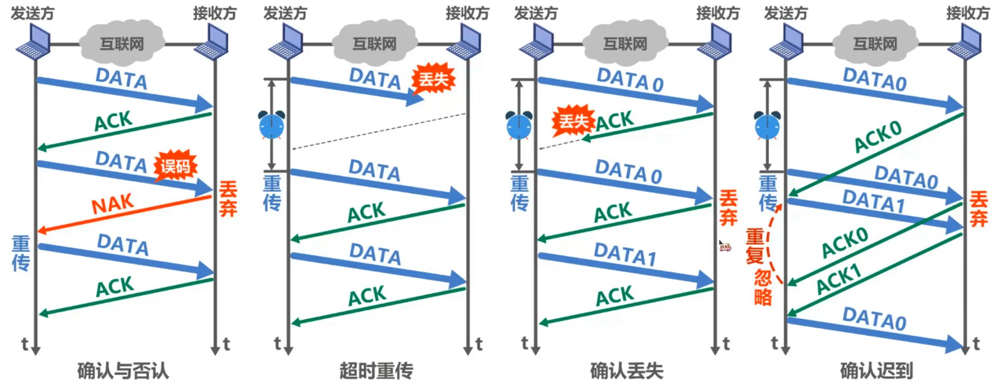
回到发送端第一次发出DATA后的情景，如果接收端检出了误码，则应丢弃存在误码的数据分组。尽管就算接收端什么也不做，在等待一定时间后发送方也将超时重传，但对于一些误码率较高的点对点链路，可以立即向发送方发送分组NAK以显式告知发送方数据分组存在误码，使发送方尽早回传。
对ACK编号的目的是为了解决ACK迟到的情况。由于数据链路层几乎不会出现ACK迟到的情况，因此在数据链路层实现停止-等待协议时可以不为ACK编号。
尽管超时计时器的重传时间推荐选为略大于从发送方到接收方的平均往返时间的值，但在数据链路层点对点的往返时间容易确定，可以准确地设定重传时间，而在运输层由于端到端的往返时间十分不稳定因此很难设定一个合适的重传时间。
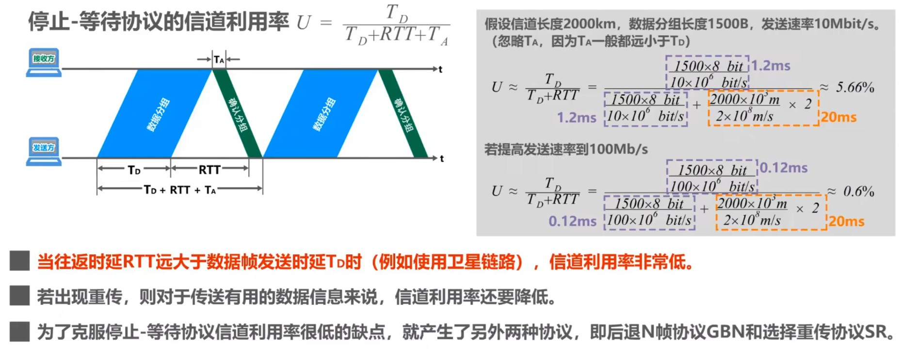
优点：实现简单，资源消耗低，适合点对点信道。
缺点：信道利用率低，不适用于RTT远大于数据帧发送时延的信道，例如卫星链路。
回退N帧协议（Go-Back-N，GBN）的基础之一是流水线传输。由于停止-等待协议的信道利用率很低，如果出现超时重传，则利用率更加低。采用流水线传输可以解决这一问题，通过让发送方在收到来自接收方确认分组ACK之前连续发送多个数据分组DATA，大大提高信道利用率。
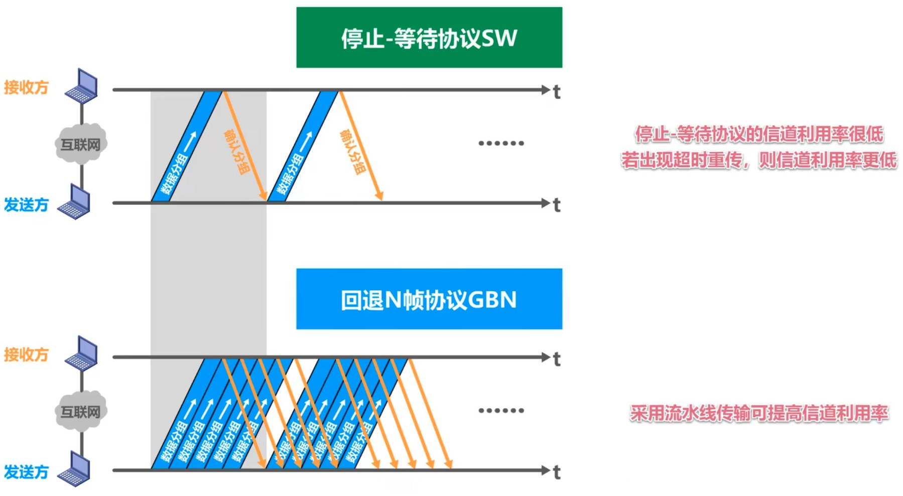
回退N帧协议利用流水线传输推广了停止-等待协议，通过发送窗口以限制发送方可连续发送数据分组的个数。
为区分发送窗口内的数据分组，发送方应对各数据分组循环编号。记发送窗口的尺寸为
累积确认：接收方通过发送带有最后一个按序到达数据分组的序号的确认分组ACK，统一确认此前所有数据的传输机制，减少确认次数并避免冗余重传。利用累积确认，回退N帧协议中的接收方不必对每个接收到的数据分组都返回确认分组ACK，而是根据一定的策略发送若干确认分组ACK。
在回退N帧协议中，什么时候会触发回退N帧呢？主要有以下四个场景：
数据帧丢失或检测到误码
当接收方发现某帧（如第N号帧）因丢失或误码而无法解析时，会丢弃该帧及后续所有帧（即使后续帧本身正确），并重复发送最后一个正确接收的帧的ACK。部分实现中允许发送方在收到若干重复ACK时提前触发重传，无需等待超时。
确认帧ACK丢失
若接收方发送的ACK在传输中丢失，发送方因超时未收到确认，会重传整个窗口内的全部未确认帧。
例外：在累积确认机制下，非最大序号ACK的丢失不影响窗口滑动，无需重传。
触发超时重传
发送方为每个窗口维护一个超时计时器，若在超时时间内未收到任何ACK，则触发重传所有未确认帧。
发送窗口尺寸
若发送窗口尺寸
前三个场景在现实条件下是不可完全避免的，但该场景是本不应出现的错误情形，将导致接收方无法正确进行累积确认。
当且仅当未触发回退N帧、发送窗口内的所有数据分组顺利抵达接收方时，发送方的发送窗口才能够滑动，接着发送滑动后发送窗口内的新一批数据分组。
触发回退N帧后，发送方不需要在任何条件下都重发窗口内的全部数据分组，而只需要重发不能通过累计确认机制确认的数据分组（即丢失或出错的帧及其后续所有帧）——这就是回退N帧协议中“回退N帧”的由来。
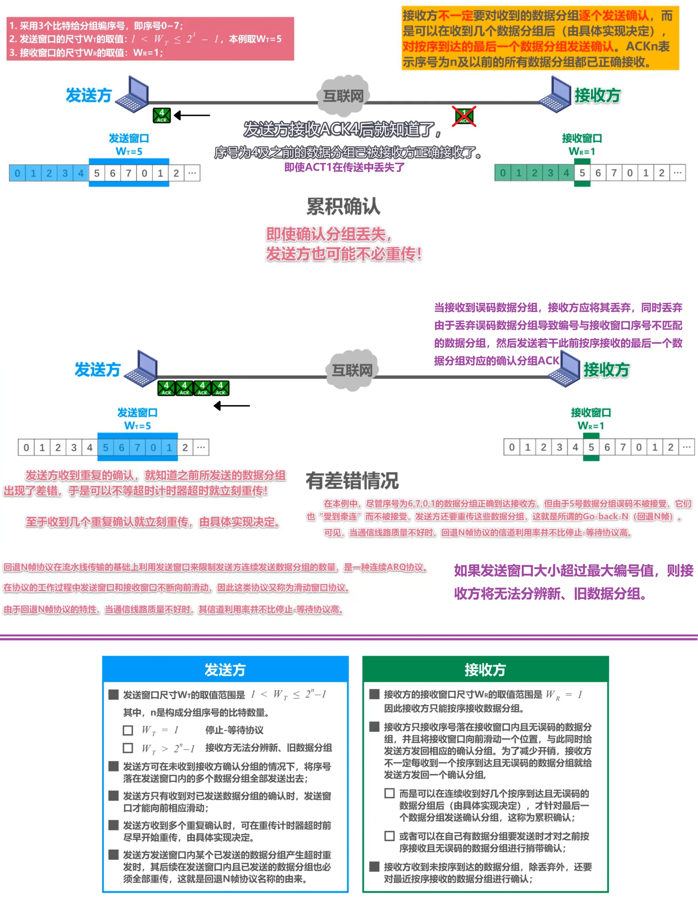
优点：相比停止-等待协议大幅提升信道利用率，适合中等误码率环境；减小了接收方的资源开销，减小了对网络资源的占用。
缺点：不能向发送方及时反映出接收方已正确接收的数据分组信息，导致当通信质量差时，信道利用率可能比停止-等待协议还低。
选择重传协议（Selective Repeat, SR）是对回退N帧协议的一种改进。在回退N帧协议中，由于接收窗口尺寸
为了解决这一问题，选择重传协议让接收窗口尺寸
选择重传协议是允许发送窗口与接收窗口部分滑动的，这里部分滑动的意思是基于最左侧分组的确认或接收触发窗口整体的滑动，区别于回退N帧协议中窗口只要滑动就一定滑动窗口尺寸的距离。对于发送方而言，只要能确保滑过的数据分组均被确认接收方已接收，发送窗口就可以滑动。对于接收方而言，只要能确保滑过的数据分组全部已正确接收，接收窗口就可以滑动。
其他的过程与另外两个协议就没有本质上的区别了，无外乎是发送方发送一批数据分组，接收方接收并检错（这里可能存在接收窗口的部分滑动）后，向发送方发送带有正确接收数据分组编号的确认分组，发送方收到确认分组后（这里可能存在发送窗口的部分滑动）再对未确认的数据分组进行超时重传。
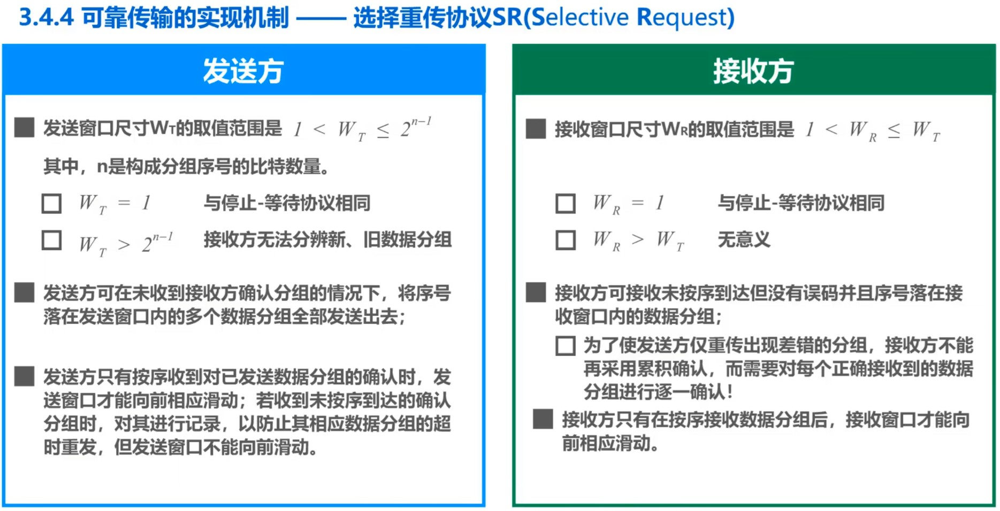
优点：在高误码率环境下效率最高，仅重传错误帧，减少带宽浪费
缺点：实现复杂，需维护大量缓存和状态信息，接收窗口大小受限（通常
在开始之前，请注意区分以下概念：
SW、GBN与SR的主要内容是实现可靠传输的机制，并非专属于数据链路层的协议，他们的关注点在于如何实现可靠传输。
PPP则是完整的数据链路层协议，包含封装、认证、多协议支持等功能，可独立运行于物理层之上。PPP提供点对点链路的数据封装、透明传输、多协议支持（如IP、IPX）以及用户认证（如PAP/CHAP），而且默认不提供可靠传输服务，但可以结合SW、GBN与SR实现可靠传输服务。
点对点协议（Point-to-Point Protocal，PPP）是目前使用最广泛的数据链路层协议，现在已成为因特网的正式标准。PPP为点对点链路传输各种协议数据报提供了一个标准方法，能够在多种类型的点对点链路上运行，例如面向字节的异步链路与面向比特的同步链路。
目前绝大部分计算机用户“上网”都是连接到ISP并获取由ISP分配合法的IP地址实现的，而用户与ISP通信所使用的数据链路层协议通常正是PPP协议。PPP over Ethernet，即PPPoE，于1999年被提出。这是一种在以太网上运行的PPP协议，结合了以太网的高效性和PPP的用户管理功能，使得ISP能够通过DSL、电路调制调解器与以太网等宽带接入技术用以太网接口的形式为用户提供接入服务，允许通过以太网实现多用户共享同一物理链路的同时保留PPP的认证和IP分配功能。除了以太网之外，PPP也被广泛应用于广域网路由器之间的专用线路。
PPP并非单一的协议，其下包含链路控制协议（LCP）与若干网络控制协议（NCP）等子协议。
帧分为帧首、帧的数据与帧尾，PPP帧当然也遵从这一架构。
PPP帧的帧首：
Flag字段：值为0x7E，是PPP帧的定界符，长1字节
Address字段：值为0xFF，未定义实际意义，长1字节
Control字段：值为0x03，未定义实际意义，长1字节
Protocol字段：其值表明了帧的数据部分应由何协议处理，长2字节，
值为0x0021时：帧的数据部分为IP数据报
值为0xC021时：帧的数据部分为LCP分组
值为0x8021时：帧的数据部分为NCP分组
PPP帧的数据部分：长度不应超过1500字节
PPP实现透明传输的方法取决于所使用链路的类型，
面向字节的异步链路：字节填充法，
发送方将数据部分的0x7E转义为0x7D 0x5E两个字节
发送方将数据部分的0x7D转义为0x7D 0x5D两个字节
发送方将数据部分的ASCII控制字符（即小于0x20的字符）与0x20相加，再在其前插入0x7D
接收方做相应逆处理
面向比特的同步链路：比特填充法，Flag字段二进制值为01111110，
发送方通常由硬件实现，对数据部分每连续的五个比特1插入一个比特0
接收方做相应逆处理
PPP帧的帧尾：
FCS（Frame Check Sequence）：差错检测位，长2字节
Flag字段：值为0x7E，是PPP帧的定界符，长1字节
如前文所述，PPP默认不提供可靠传输服务，如果接收方收到的PPP帧未通过CRC检验（在默认情况下）仅仅会丢弃该帧。但PPP仍可以结合SW、GBN与SR等补充机制来实现可靠传输服务。
PPP总的来说可以分为三个组成部分：数据帧封装方法、链路控制协议与网络控制协议。
数据帧封装方法
按照上文所描述的PPP帧结构进行封装成帧。
链路控制协议（LCP）
链路控制协议用以建立、配置与测试数据链路的连接。
网络控制协议（NCP）
PPP需要不同的网络控制协议以向上支持不同的网络层协议，例如TCP/IP中的IP协议、Novell NetWare网络操作系统中的IPX与Apple公司的Apple Talk。
PPP的典型工作状态如下图所示：
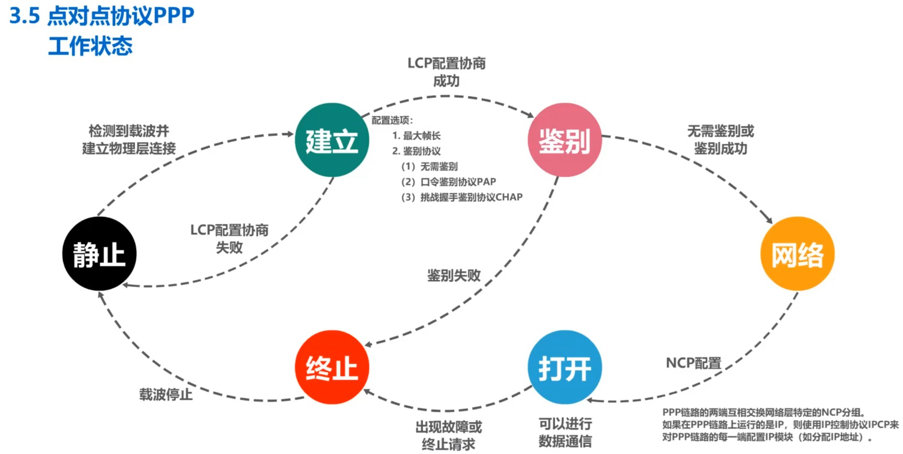
共享信道时需要考虑如何协调多个发送与接收站点对一个共享传输媒体的占用，这就是所谓的媒体接入控制（Medium Access Control，MAC），例如总线型局域网的场景。
多路复用技术是MAC协议的一种实现手段，其核心目标是通过共享物理信道资源提高传输效率，可被分为静态划分信道与动态划分信道两种实现方式。
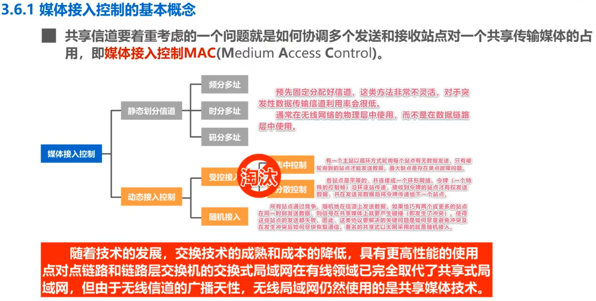
静态划分信道（Multiplexing）的核心是集中式资源分配，所有设备遵循预设规则使用信道资源，用户无法根据实时需求调整资源占用，其特点是高负载下高效率（资源分配固定且无冲突）、低负载下低效率（即使部分资源空闲也无法被其他用户动态占用），并且不存在冲突。
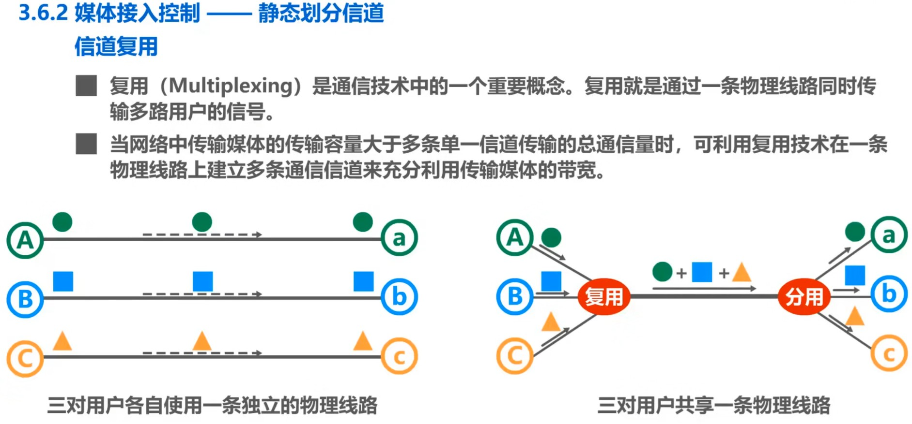
静态划分信道的主要实现技术包括频分多路复用（FDM）、时分多路复用（TDM）、波分多路复用（WDM）与码分多路复用（CDM）。
频分多路复用（FDM）
将总带宽划分为多个独立频段，每个用户独占固定频段进行通信。
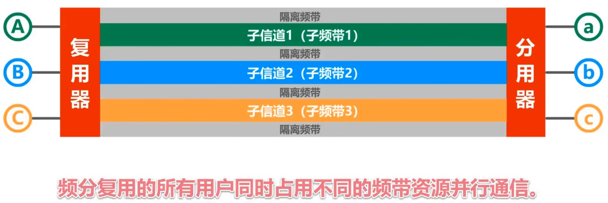
时分多路复用（TDM）
将时间分割为等长的TDM帧，每个帧内划分固定时隙，用户轮流占用时隙传输数据。
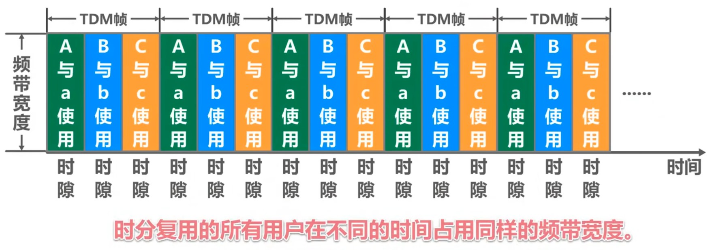
波分多路复用（WDM）
光纤通信中的光频分复用，不同波长（频率）的光信号在同一光纤中独立传输。
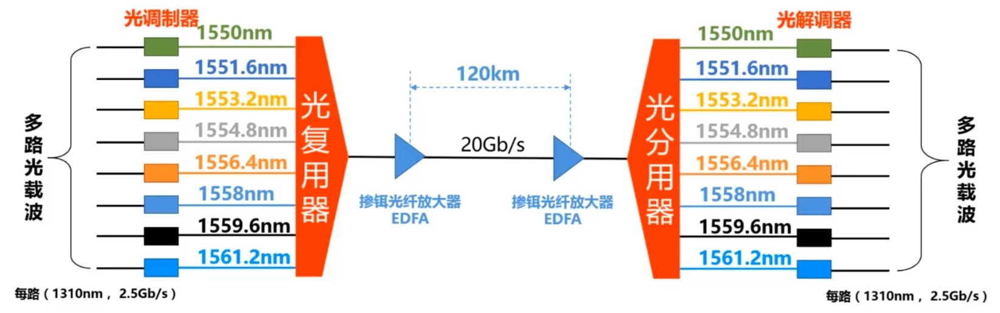
码分多路复用（CDM）
为每个用户分配唯一正交码片序列，通过编码叠加信号实现多用户共享同一频段或时隙。
码分多路复用技术通过码域正交性突破了传统静态划分技术的资源限制。即使多个用户同时发送信号，信道上的信号表现为多个信号的叠加，但即使信号在时域与频域上完全重叠，正交性也能保证接收端只提取目标用户的信号。
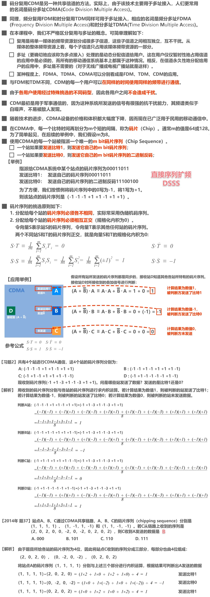
静态划分信道小结：
| 技术 | 复用维度 | 资源分配 | 典型场景 | 局限性 |
|---|---|---|---|---|
| FDM | 频域分割 | 固定频段 | 广播、有线电视 | 频谱利用率低，易受干扰 |
| TDM | 时域轮询 | 固定时隙 | 电话网络、光纤通信 | 轻负载时资源浪费 |
| WDM | 光波长分割 | 固定波长 | 光纤骨干网 | 设备成本高 |
| CDM | 码域正交覆盖 | 动态按需 | 移动通信、卫星导航 | 实现复杂，需严格同步 |
CSMA/CD，全称为Carrier Sense Multiple Access / Collision Detection，中文名为载波监听多址接入/碰撞检测，是一种针对有线介质的总线争用型MAC协议，遵从IEEE 802.3标准，也是半双工模式的传统以太网所使用的协议。注意，当代主流通用方案——现代全双工以太网已不再依赖CSMA/CD协议，因为现代以太网是基于交换机的，根本就不会发生碰撞。本小节中的以太网一词均指半双工模式的传统以太网。
载波监听（Carrier Sense，CS）
每个站点在发送帧以前首先检测总线上是否存在其他站点正在发送帧，所谓“先听后说”。具体而言，如果站点检测到总线已空闲至少96比特时间（发送96比特所花费的时间），则发送帧，否则继续等待。
多址接入（Multiple Access，MA）
多个站点连接在同一条总线上，竞争使用总线。
碰撞检测（Collision Detection，CD）
每个发送帧的站点在发送帧的同时检测碰撞，所谓“边听边说”。一旦发现总线上出现碰撞现象，立即停止发送，退避一段随机的时间后再次发送。
注意，CSMA/CD协议规定冲突检测必须在帧发送过程中完成，即在帧完成发出以前发送帧的站点应该持续进行碰撞检测。这是因为CSMA/CD协议本身是不可靠传输协议，不支持确认以及重发，一旦帧在发出后出现了碰撞现象，帧的发送方是无从得知的，所以必须在完成发送前确保发送的帧不会遭遇碰撞，或者在发送完成时发送方能够确认该帧已遭遇碰撞。
以太网采用的正是CSMA/CD协议，但加强了碰撞检测的概念。在以太网中，当发送帧的站点检测到碰撞后，除了立即停止发送以外，还会继续发送32比特或48比特的人为干扰信号（Jamming Signal，依据IEEE 802.3标准），以尽可能让其他的所有站点均能检测出碰撞。这种措施被称为强化碰撞。
CSMA/CD协议存在碰撞窗口的问题，碰撞窗口也被称为争用期。
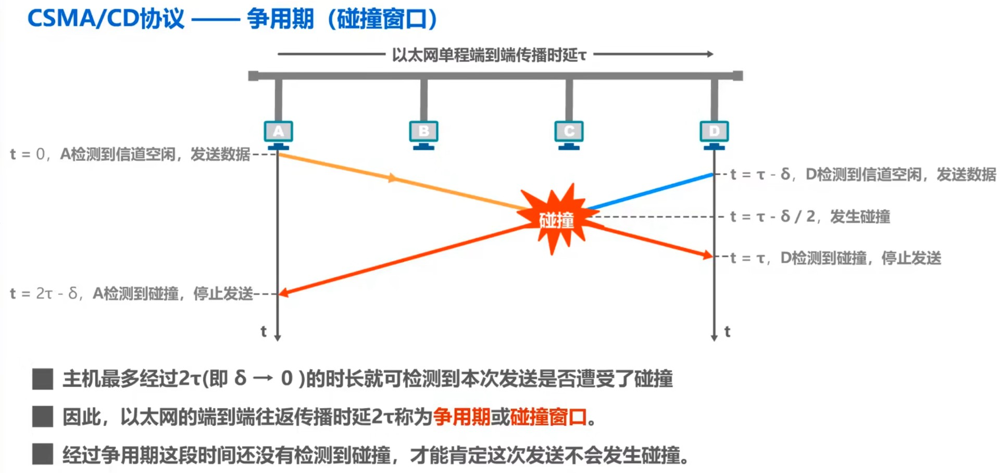
争用期（Contention Period）：如果不进行碰撞检测，那么每个站点在发送帧后的一小段时间内，所发送的帧都存在碰撞的可能性。这一小段时间具体为多久是不确定的，取决于另一个发送帧的站点到本站点的距离，但可以确定的是这小段时间不会超过总线的端到端往返传播时延（RTT）。争用期是这样一个时间段，在此期间内站点对介质的访问存在潜在的竞争，可以用公式
考虑下述CSMA/CD协议的应用场景：站点A需要发送一段数据，那么站点A首先会将数据封装成帧，完成帧的封装后检查总线是否已空闲至少96比特时间，如果不是则等待并持续检查（对于因特网而言还会同时发送32比特或48比特的人为干扰信号），如果是或等待期间检查发现总线已空闲至少96比特时间，则立即在总线上发送该帧。
由于以太网的数据链路层仅提供无确认、无重传的不可靠传输服务，因此若帧开始发送后站点A不进行任何动作，则站点A无从得知帧是否能够顺利抵达、是否将与其他帧发生碰撞。可是这又并非是不可能发生的情形，例如站点B与站点A同时发送帧，那么来自站点A的帧与来自站点B的帧率就很有可能发生碰撞。因此，自站点A开始发送数据为起点，还需要在争用期内持续检测是否存在碰撞现象，如果在整个争用期内均未检测到碰撞才能确认本次传输成功。
显然，以太网中发送帧的站点越多，RTT越长，导致争用期也”水涨船高“，发生碰撞的概率越大，所以共享式以太网不能连接过多的主机，并且使用的总线也不应过长。带宽为10Mbps的以太网规定争用期为51.2μs（512比特发送时间），理想情况下其最长总线长度为
但考虑到信号衰减等现实因素，规定其总线长度实际上不能超过2500m。
为什么带宽为10Mbps的以太网不去规定争用期为256比特发送时间或1024比特发送时间，而偏偏规定为512比特发送时间呢？这是因为以太网为了确保在最大传播延迟（争用期）内能够检测到碰撞，规定最小帧长为64字节。因此，争用期的设定是为了配合最小帧长，以保证碰撞检测的有效性。
首先讨论规定最小帧长的必要性与如何规定最小帧长。这里首先要强调一个背景知识：一个帧包含了若干比特，但发送站点只能串行发送帧内的比特，因此发送是一个需要若干比特时间的持续过程，而非瞬间完成的状态。
规定最小帧长是为了解决“晚期碰撞”问题，即在帧发送完成后仍可能发生的碰撞。这个情况很难完全避免，但只要能保证发送帧的站点在结束发送时能够知晓发送的帧是否遭遇碰撞，该问题即可迎刃而解：假设站点A正发送帧，那么帧应该足够长，才能确保所有其他站点都能够检测到站点A正在使用总线发送帧，从而使那些正在发送帧的其他站点停止发送，并且其他站点停止发送前的那些已发送的比特在到达站点A、被站点A检测到时，站点A应当正在发送帧，这样才能确保站点A知晓自己正在发送的帧遭遇了碰撞，从而立即停止发送该帧，等待一段随机的时间后再次发送。对于以太网而言，在停止发送帧后，还会发送若干比特的人为干扰信号。这样就可以基本保证发送的帧不会遭遇碰撞，或者发送方已知发生了碰撞，并且能够择期重发。
综上所述，可以用一句话简而言之地概况设定最小帧长的意义：确保发送时间覆盖争用期。
通过上述分析可知，对于带宽为10Mbps的以太网而言，其最小帧长的计算公式为
规定最小帧长还有两个好处：
当发送方在争用期内没有检测到碰撞，换言之发送方已经发送了64字节但仍未检测到碰撞，那么该帧剩余的字节一定不会遭遇碰撞，因为已发送的字节将遍历剩余站点并抑制剩余站点的发送。
当发送方检测到碰撞而停止发送帧时，已发送的内容在理论上不可能超过64字节，因此接收方可以仅根据帧的长度方便地判断其有效性。任何小于64字节的帧都被视为无效帧，接收方会直接将其丢弃，从而避免处理因碰撞或其他错误导致的无效数据。
如果需要发送的帧内数据量很小，则需要填充一些字节，使帧长不小于64字节。
CSMA/CD协议规定了最小帧长，同时也规定了最大帧长。规定最大帧长的目的是避免一个发送方发送过长的帧从而长时间占用信道。当然，早期网络设备的缓冲区容量有限，无法处理超长帧，这也是设计最大帧长的原因之一。
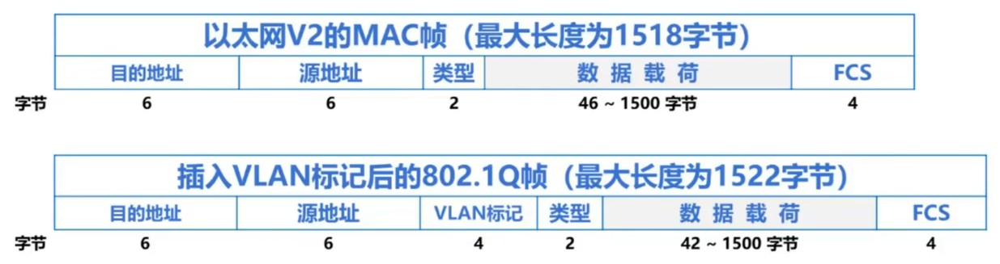
前文提到，如果站点在发送帧时检测到了碰撞，那么最后应当退避一段随机的时间后再次发送。这里给出CSMA/CD协议中退避与退避时间的具体实现——CSMA/CD协议的截断二进制指数退避算法（Truncated Binary Exponential Backoff）。
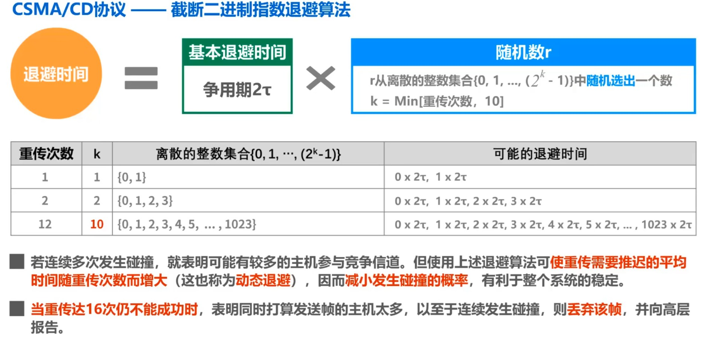
这里计算CSMA/CD协议的信道利用率。记帧发送成功所需时长为
可以看出，要提高以太网的信道利用率，则参数
以下为CSMA/CD协议的帧发送流程图：
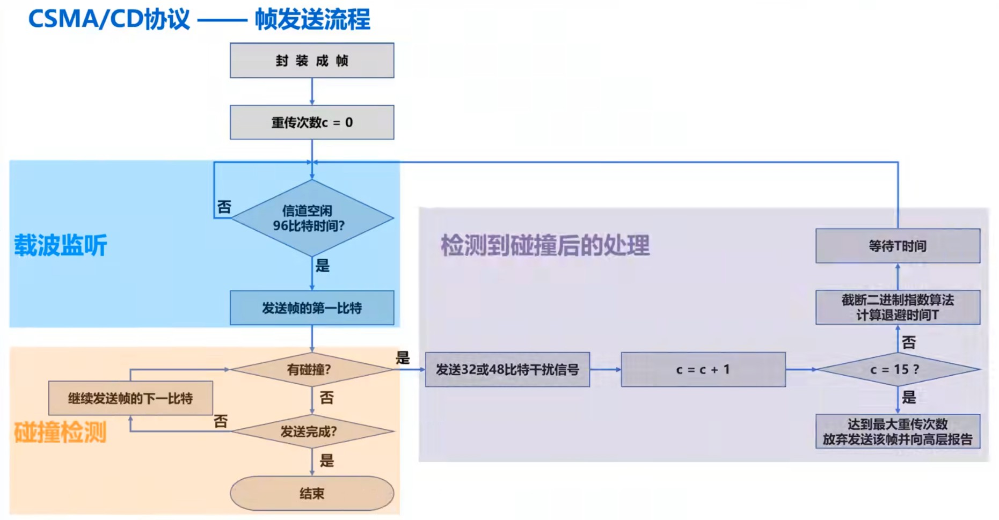
以下为CSMA/CD协议的帧接收流程图：
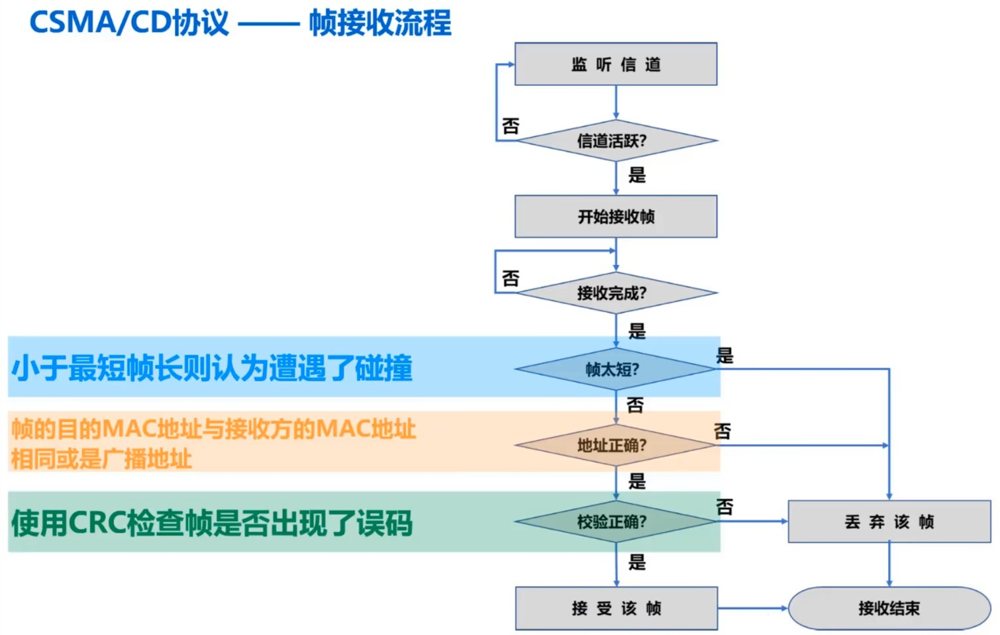
CSMA/CA是为无线局域网设计的MAC协议，其中CA是Collision Aovidance的缩写，即碰撞避免。
CSMA/CA的目的是解决CSMA/CD在无线局域网中碰撞检查的尴尬局面。无线局域网也能载波监听（CS）与多址接入（MA）技术，但并不适合进行碰撞检测（CD），原因主要有：
无线信道传输条件特殊，信号强度的动态范围相当大，无线网卡接收到信号的强度往往是远远小于信号发送时强度的，例如可能相差百万倍，因此在无线网卡上实现碰撞检测对硬件设备的要求非常高。
即使硬件能够实现无线局域网上的碰撞检测，考虑到无线电波传播的特殊性，例如隐蔽站问题（Hidden Node Problem），进行碰撞检测的意义也并不明显。
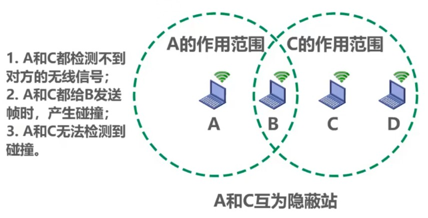
基于以上原因，IEEE 802.3标准规定，该标准下无线局域网使用CSMA/CA协议，在CSMA的基础上新增碰撞避免（CA），而不再实现碰撞检测。
由于到避免所有碰撞是不可能的，而且无线信道误码率较高，因此IEEE 802.3标准还是用了数据链路层的停止-等待协议作为确认机制，确保数据能被正确接收。
IEEE 802.3标准对CSMA/CA协议定义了两种不同的媒体接入控制方式：
分布式协调功能（Distribution Coordination Function，DCF）
在DCF媒体接入控制方式下，不考虑中心控制站点，每个站点使用CSMA/MA协议争用信道以获取发送权，是IEEE 802.3标准中CSMA/CA协议的默认方式。
点协调功能（Point Coordination Function，PCF）
在PCF媒体接入控制方式下，使用集中控制的接入算法控制各站点数据的发送，一般在接入点（Access Point，AP）实现集中控制，是IEEE 802.3标准中CSMA/CA协议的可选方式。通常较少使用该方式。
IEEE 802.3标准规定了所有站点必须在持续检测到信道空闲一段指定的时间后才能发送帧，这段时间被称为帧间间隔（Interframe Space，IFS）。帧间间隔有长短之分，是长是短取决于要发送的帧的类型。
高优先级帧发送前需要等待的时间应较短，从而优先获得发送权。
低优先级帧发送前需要等待的时间应较长，并且如果一个低优先级帧还来得及发送，而其他站点的高优先级帧已发送至信道上，则信道处于忙碌状态，此时低优先级帧必须再推迟发送，从而避免碰撞。
常用的两种IFS：
短帧间间隔（Short Interframe Space，SIFS）
SIFS是最短的帧间间隔，时间长度为28μs，用以分隔同属一次对话的各帧。一个站点应当能够在一段SIFS时间内从发送方式切换至接收方式。
使用SIFS的帧类型包括：ACK，CTS，过长的MAC帧分片后的数据帧，回答AP探寻的帧，PCF方式中AP发出的任何帧。
DCF帧间间隔（DCF Interframe Space，DIFS）
DIFS比SIFS长的多，时间长度为128μs，在DCF方式中用于发送数据帧与管理帧。
CSMA/CA协议的工作原理图：
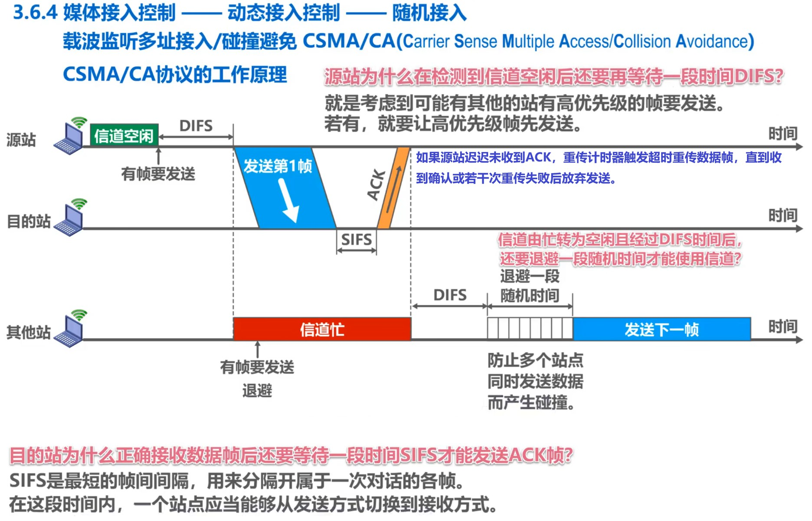
如上图所示，CSMA/CA协议中也存在退避算法的实现。那么在什么情况下不必使用退避算法、什么情况下必须使用退避算法呢？
不使用退避算法：如果站点检测到信道处于空闲状态，同时所发送的数据帧不是在成功发送完上一个数据帧以后立即连续发送的，则不需要使用退避算法。
以下情形必须使用退避算法：
准备发送数据帧时，检测到信道处于忙碌状态；
准备重传数据帧时；
在成功发送完上一个数据帧后，准备连续发送下一个帧时。这样做的目的是避免一个站点长时间占用信道。
CSMA/CA协议的退避算法：
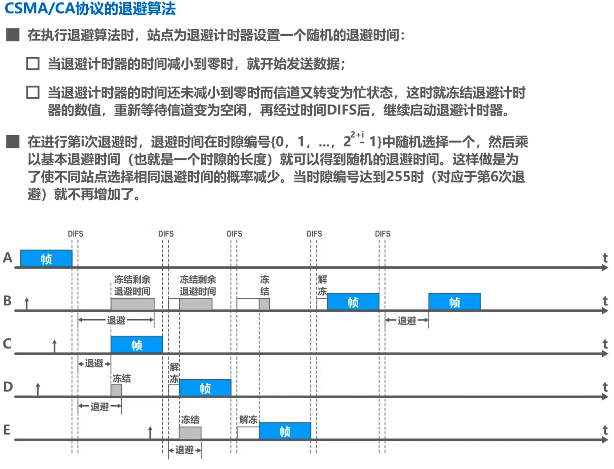
为了尽可能减少CSMA/CA协议中碰撞的概率并降低碰撞发送后带来的影响，IEEE 802.3标准采用了“信道预约”和“虚拟载波监听”两种机制。
信道预约机制（RTS/CTS）
在无线网络中，由于存在“隐蔽站”问题（即某些站点之间无法直接监听到彼此的信号），可能导致多个站点同时发送数据而产生碰撞。为了解决这一问题，CSMA/CA协议引入了信道预约机制，主要通过发送RTS（Request to Send）和CTS（Clear to Send）控制帧来实现。
具体流程如下：
发送RTS帧：当一个站点准备发送数据时，首先监听信道是否空闲；如果空闲，等待一个DIFS时间后，发送一个RTS帧给目标站点。该帧中包含了此次通信所需的时间信息。
接收CTS帧：目标站点在接收到RTS帧后，如果信道空闲，等待一个SIFS时间后，发送一个CTS帧作为应答，同样包含通信所需的时间信息。
数据传输：源站点在接收到CTS帧后，等待一个SIFS时间后，开始发送数据帧。
确认ACK（Acknowledgement）：目标站点在成功接收到数据帧后，等待一个SIFS时间后，发送一个ACK帧，表示数据接收成功。
通过上述步骤，其他站点在监听到RTS或CTS帧后，会意识到信道将被占用，从而避免在此期间发送数据，减少了碰撞的可能性。
虚拟载波监听机制（Network Allocation Vector, NAV）
除了物理载波监听（即通过检测信道上的信号强度判断信道是否被占用）外，CSMA/CA协议还引入了虚拟载波监听机制，以进一步减少碰撞的发生。
虚拟载波监听是通过维护一个名为网络分配向量（Network Allocation Vector，NAV）的计时器来实现的。当一个站点接收到包含“持续时间”字段的帧（如RTS、CTS或数据帧）时，会根据该字段的值设置或更新自己的NAV。NAV表示信道将被占用的时间长度，在此期间，站点将认为信道忙碌，不会尝试发送数据。
这种机制使得即使站点没有直接监听到物理信号，也能通过解析帧中的“持续时间”字段来判断信道的使用情况，从而避免在信道被其他站点占用时发送数据，减少了由于“隐蔽站”问题导致的碰撞。
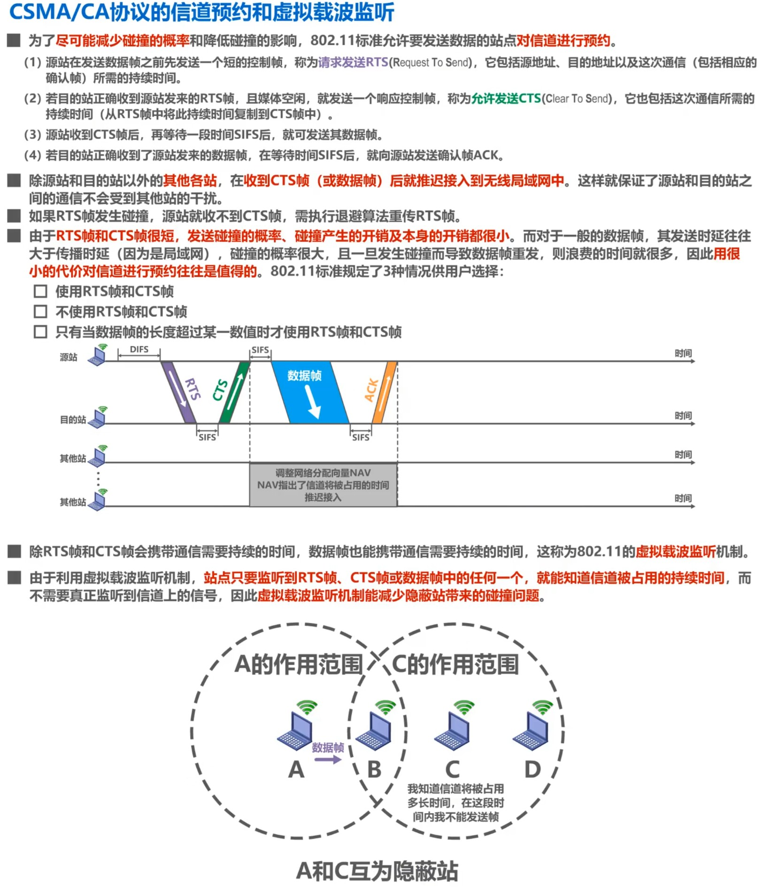
CSMA/CA协议通过结合信道预约机制和虚拟载波监听机制，有效地减少了无线通信中的数据碰撞，提高了网络的整体性能。信道预约通过RTS帧与CTS帧在通信前进行协调，避免了多个站点同时发送数据；虚拟载波监听则通过NAV计时器，使站点能够根据帧中的“持续时间”字段判断信道的占用情况，即使在无法直接监听到信号的情况下，也能避免发送数据，从而减少了碰撞的发生。
MAC地址是以太网的MAC子层所使用的地址，MAC子层属于数据链路层，因此MAC地址是数据链路层中的地址。
IP协议是TCP/IP体系结构下网际层所使用的地址。
ARP协议是TCP/IP体系结构下网际层所使用的协议。当已知设备被分配的IP地址时，通过ARP协议即可通过该IP地址获取到设备的MAC地址。
应注意，IP地址与ARP协议是属于TCP/IP体系结构下的网际层，而非数据链路层，只是为方便讨论MAC地址，在本章中一并研究。
MAC地址
如果使用点对点信道的数据链路层，当然就不需要地址了，因为只有两个主机，“不是我，就是你”。
但是，对于使用广播信道的数据链路层而言则必须需要地址，否则无法区分各个主机，会出现“我究竟要发给谁？”与“究竟是谁发的？是发给我的吗？”这样的问题。
换句话说，当多个主机连接在同一个广播信道上时，要实现两个主机间的通信，则每个主机都必须有一个唯一标识，即数据链路层地址。同时，每个主机发送的帧中必须携带标识发送主机和接收主机的地址，每个主机收到帧后比对接收主机地址是否与本机地址相同，相同则接受帧，否则丢弃帧。这类地址是用于MAC（媒体接入控制）的，因此常被称为MAC地址。
MAC地址一般被固定存储在网络适配器（Network Interface Controller、Network Card，也称为网卡）的电可擦可编程只读存储器EEPROM中，所以MAC地址也称为硬件地址。应当注意，MAC地址是对网络上各接口的唯一标识，而非网络上各设备的唯一标识。
IEEE（电气和电子工程师协会）通过其注册管理机构（Registration Authority）分配MAC地址块，确保全球唯一性。每个制造商获得一个唯一的组织唯一标识符（OUI），即MAC地址的前24位。制造商在此基础上分配后续的 24 位，以生成完整的48位MAC地址（也称为EUI-48）。这种机制旨在确保全球范围内的唯一性。
尽管有上述机制，以下情况可能导致 MAC 地址的全球唯一性无法保证：
MAC 地址随机化：为增强用户隐私，现代操作系统（如Android和iOS）在连接Wi-Fi网络时，会为每个网络生成随机的本地MAC地址。这些地址不含OUI，无法确保全球唯一性。
软件修改（MAC 地址欺骗）：用户或软件可以通过修改驱动程序或系统设置，更改设备的MAC地址。这种修改可能导致多个设备使用相同的MAC地址，尤其是在虚拟化环境中。
制造商重复分配：在极少数情况下，制造商可能由于错误或管理不善，重复分配了相同的MAC地址，导致冲突。
综上所述，MAC地址并不总是全球唯一的。
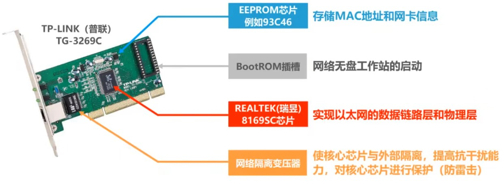
有些时候MAC地址还被称为物理地址，例如在Windows操作系统中。然而，这并不意味着MAC地址属于网络体系结构中的物理层，这里“物理地址”中的“物理”是指硬件层面。
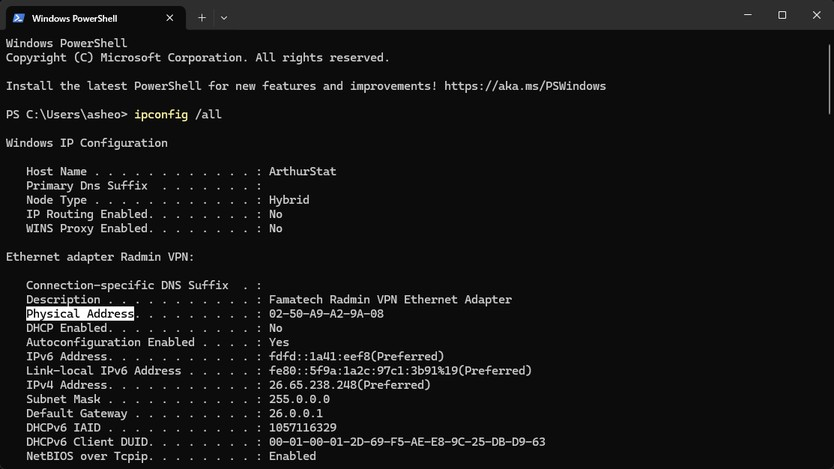
在现代x86架构计算机中，主板上装载的仅支持有线网络的网卡（如不带Wi-Fi功能的板载以太网卡，这类网卡通常为板载网卡）或仅支持无线网络的网卡（如Intel AX210无线网卡）通常各自仅拥有一个MAC地址，分别用于标识其有线或无线网络接口。同时集成无线Wi-Fi模块与以太网接口的网卡则通常具有两个独立的MAC地址，分别用于标识其有线和无线网络接口。交换机与路由器通常拥有更多的网络接口，单台设备上也就拥有更多的MAC地址。
现代智能手机通常配备多个网络接口，包括Wi-Fi和蓝牙模块，每个模块都有独立的MAC地址。事实上，为增强用户隐私，Android和iOS 等现代智能手机操作系统实现了MAC 地址随机化，为设备连接的每个 Wi-Fi 网络生成不同的 MAC 地址。蜂窝网络则使用IMEI（国际移动设备识别码）和IMSI（国际移动用户识别码，位于SIM芯片中）进行设备和用户的唯一标识，与MAC地址无关。
以采取IEEE 802.3标准局域网的MAC地址格式——EUI-48为例（EUI为Extended Unique Identifier的缩写，意为扩展的唯一标识符），该MAC地址由48个比特组成，即六个字节。其中，前三个字节是组织唯一标识符（Organizationally Unique Identifier，OUI），由生产网络设备的厂商向IEEE的注册管理机构申请；后三个字节为网络接口标识符，由获得OUI的厂商自行决定分配。
MAC地址的标准表示方法是每4个比特写为一个十六进制数，这样就有12个十六进制数，每两个十六进制数作为一组，组与组之间用短横线间隔，例如在Windows中就是这样展示MAC地址的。但也存在其他表示方法，例如在Linux、Android与iOS中就将短横线替换为了冒号。还有的软件将每四个十六进制数作为一组，每组间用小数点作为间隔。
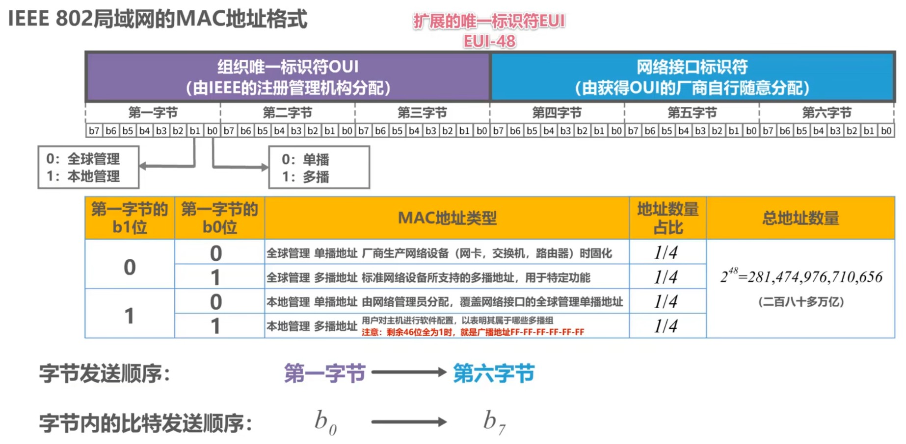
EUI-48的目标寿命是100年——直到2080年，但鼓励提前采用EUI-64，这是一种由64比特组成的MAC地址。
在标准的 EUI-48（即 MAC 地址）格式中，每个地址由 6 个字节（Octet 0 至 Octet 5）组成，每个字节包含 8 位（bit）。在表示和传输这些位时，存在明确的编号和顺序规范。
位编号（Bit Numbering）：在每个字节中，位从最高有效位（Most Significant Bit，MSB）到最低有效位（Least Significant Bit，LSB）编号为b7至b0。
传输顺序（Transmission Order）：
字节顺序：在网络传输中，首先发送地址的第一个字节（Octet 0），然后依次发送后续字节，直到第六个字节（Octet 5）。
位顺序：在每个字节内，按照从最低有效位（b0）到最高有效位（b7）的顺序发送。
每个字节的比特标号从高位到低位定义为b7至b0，但发送时却从b0开始逐比特传输，造成该情况的原因主要是硬件电路在时序控制上更易实现低位先发（LSB-first）。
MAC地址中第一个字节的最低位（b0）取0时表示单播地址、取1时表示组播地址，次低位（b1）取0时表示该EUI时系全球管理、取1时表示该EUI时系本地管理。特别地，如果MAC地址的所有字节中的所有比特均为1，则表示广播地址。这里补充一下单播、组播以及广播的概念：
在以太网通信中，MAC帧的目的地址决定了数据的传输方式。根据目的MAC地址的类型，通信方式可分为单播（Unicast）、组播（Multicast）和广播（Broadcast）。
单播（Unicast）
定义：单播是指数据帧从一个源设备发送到一个特定的目的设备，即一对一的通信模式。
特征：
目的MAC地址：唯一标识接收设备的MAC地址。
地址格式：MAC地址的第一个字节的最低位（即第8位）为0，表示该地址为单播地址。
通信方式：只有目的设备会接收并处理该帧，网络中的其他设备会忽略该帧。
示例：一台计算机向另一台计算机发送文件时，使用单播通信。
组播（Multicast）
定义：组播是指数据帧从一个源设备发送到一组特定的目的设备，即一对多的通信模式。组播也被译为多播。
特征：
目的MAC地址：表示一个特定的组播组，只有加入该组的设备会接收并处理该帧。
地址格式：MAC地址的第一个字节的最低位（即第8位）为1，表示该地址为组播地址。
通信方式：源设备只需发送一份数据，网络设备会将其复制并转发给所有加入该组的设备。
示例：视频会议系统中，主讲人向多个参会者同时发送视频流时，使用组播通信。
广播（Broadcast）
定义：广播是一种特殊的组播形式，目的MAC地址为
FF:FF:FF:FF:FF:FF，表示将数据发送给网络中的所有设备。
在不考虑误码等情况的理想状态下：
如果主机要发送单播帧，则应在帧首部的目标地址字段中填入目标主机的MAC地址，源地址字段填入本机的MAC地址，继续封装成帧然后发送该帧。同一个广播信道上的主机都会收到该帧，但这些主机的网卡会对帧的目标主机字段进行校验，如果与本机MAC地址不匹配则丢弃该帧，否则接受该帧并将其交由上层处理。
如果主机要发送组播帧，则应在帧首部的目标地址字段中填入目标组播MAC地址，源地址字段填入本机的MAC地址，继续封装成帧然后发送该帧。同一个广播信道上的主机都会收到该帧，这些主机的网卡将对帧的目标主机字段进行校验，判断该组播帧的目标组播MAC地址是否被包含于自己的组播组列表中，如果不包含则丢弃该帧，否则接受该帧并将其交由上层处理。
为主机配置多播组列表进行私有应用时，不得使用共有标准多播地址。
如果主机要发送广播帧，则应在帧首部的目标地址字段中填入目标主机的MAC地址，源地址字段填入广播地址，即FF:FF:FF:FF:FF:FF，继续封装成帧然后发送该帧。同一个广播信道上所有主机的网卡都应接受该帧并将其交由上层处理。
IP地址简介
这里只简略介绍IP地址的作用，IP地址的详细研究将在下一章网络层中给出。
IP地址是因特网上的主机与路由器所使用的地址，用于标识网络编号与主机编号。因此，IP地址能够区分不同的网络，但MAC地址不具备此功能。如果只是一个单独的内部网络、不需要接入因特网，那么只使用MAC地址区分各主机是可行的，但如果主机所在的网络需要接入因特网，则需要同时使用IP地址与MAC地址。
从网络体系结构的角度看，主机发送帧与接收帧过程中IP地址与MAC地址的关系如下图所示：
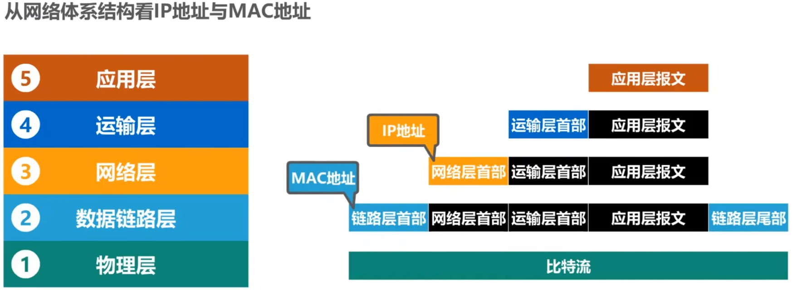
在数据包转发过程中，
源IP地址与目的P地址保持不变；
源MAC地址与目的MAC地址随链路或网络改变。
这样设计的目的见下一章网络层，如下图所示：
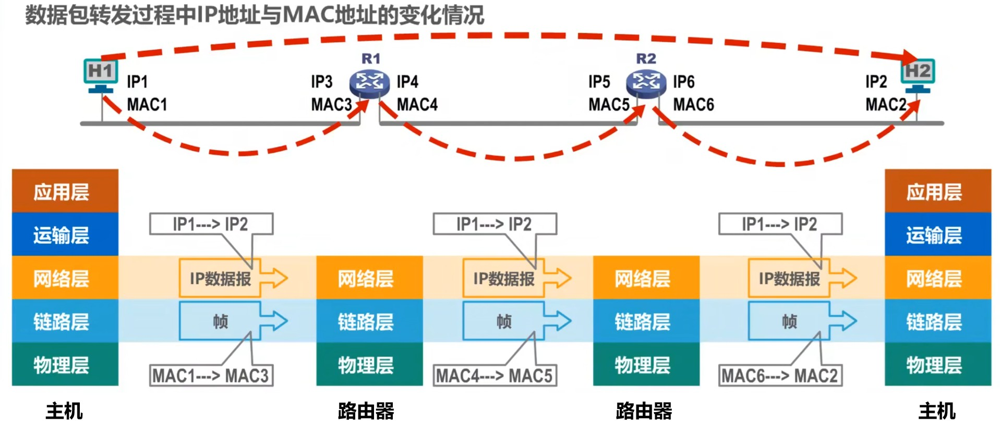
ARP
在IPv4以太网中，主机之间通过MAC地址（数据链路层地址）通信，而网络层使用IP地址标识设备。当IP数据包需要发送到目标主机时，必须通过目标主机的MAC地址完成最终投递。ARP（Address Resolution Protocol，地址解析协议）是一种网际层协议，其作用正是将目标IP地址解析为同一本地网段内的MAC地址。
特别注意，ARP本身只能在一段链路或一个网络上使用，不可跨网络使用。如果需要跨网络通信，即当目标IP位于其他网络时，主机会通过ARP获取默认网关的MAC地址，数据由网关路由进行转发。同时，本小节的讨论限定在IPv4，因为IPv6已不再采用ARP。
ARP的大体工作流程如下：
查询ARP缓存表
每台主机或路由器均拥有本地ARP高速缓存表，发送方主机首先检查本地ARP缓存表（存储IP与MAC的映射关系），若存在目标IP对应的MAC地址，则直接发送数据。
广播ARP请求
若缓存中无记录，发送方会向局域网封装ARP请求报文为一个独立的广播以太网帧并进行广播，询问IP地址目标主机的MAC地址。
ARP请求报文包含本机IP地址、MAC地址以及目标主机的IP地址。
单播ARP响应
只有IP匹配的目标主机会回复ARP请求包，IP不匹配的其他主机将丢弃该广播帧。目标主机的网卡收到广播帧后会将其上交上层处理，上层的ARP进程将解析ARP请求报文，发现询问的IP地址恰为本机IP地址，于是将ARP响应报文封装为一个独立的单播以太网帧并发送以告知请求主机有关自己的MAC地址。
ARP响应报文包含本机的IP地址与MAC地址。
更新缓存并通信
发送方收到将IP-MAC映射存入ARP缓存表（有效期通常为2-20分钟），后续通信直接使用缓存地址。
ARP报文长度为28字节，包含以下字段：
| 字段 | 说明 |
|---|---|
| 硬件类型（HTYPE） | 网络类型（如以太网为1） |
| 协议类型（PTYPE） | 网络层协议（如IPv4为0x0800） |
| 操作类型（OP） | 1表示ARP请求报文，2表示ARP响应报文，3表示RARP请求报文，4表示RARP响应报文 |
| 发送方MAC/IP | 源设备的MAC和IP地址 |
| 目标MAC/IP | 目标设备的MAC和IP地址（请求包中目标MAC为全0，等待填充） |
补充：ARP请求包：目标MAC地址为00:00:00:00:00:00，操作类型为1；RP响应包：填充目标MAC地址，操作类型为2。ARP缓存条目具有时效性，过期后需重新请求。用户可通过命令手工管理。
ARP高速缓存中每条记录保存IP地址、MAC地址与操作类型三个字段，其中类型分为动态动态与静态两种。
动态：表示该记录由主机自动获取，生命周期默认为2分钟。设置生命周期的原因是IP地址与MAC地址的对应关系并非固定，例如目标主机若更换了网卡，IP地址通常不会因此改变，但MAC地址一定会发生变化。
静态：表示该记录由用户手工配置，生命周期由操作系统决定，例如有可能在系统重启后删除。
ARP的一些扩展协议：
RARP（逆向ARP）：根据MAC地址查询IP地址，用于无盘工作站启动时获取IP。
InARP（反向ARP）：用于帧中继等网络，通过已知硬件地址解析协议地址。
免费ARP（Gratuitous ARP）：主机主动广播自身IP-MAC映射，用于IP冲突检测或更新其他主机的缓存。
ARP的安全风险与规避手段：
ARP欺骗（ARP Spoofing）
攻击者伪造ARP响应包，将自身MAC地址绑定到他人IP地址，导致数据被劫持或监听（如中间人攻击）。
ARP缓存溢出
通过发送大量虚假ARP请求耗尽设备缓存，引发拒绝服务（DoS）。
防御措施
静态绑定：通过命令手动配置IP-MAC映射。
动态检测工具：使用ARP防火墙或网络监控工具实时拦截异常流量。
在IPv6中，ARP的功能被NDP（Neighbor Discovery Protocol，邻居发现协议）取代。NDP基于ICMPv6实现，除地址解析外，还支持路由器发现、地址自动配置等功能，并且通过组播优化效率，能够避免广播风暴。
集线器（HUB）
定义：一种只在物理层工作的设备，本质是多端口中继器，对收到的信号进行放大与转发，用于连接多台计算机形成共享式以太网，是早期以太网的互联设备。一般集线器有且仅有少量的容错能力与网络管理功能，例如断开因出现故障而不断发送帧的网卡的连线，从而使整个以太网仍能正常工作。
使用集线器的以太网在逻辑上仍然是一个总线型网络，其每个接口仅简单地转发比特，不进行碰撞检测，因此各站仍共享总线资源，常使用CSMA/CD协议。
传输方式：采用广播机制。例如，当主机A向主机B发送数据时，集线器会将数据复制到所有端口，仅目标主机B接收，其他主机丢弃数据。这种机制导致
带宽共享：所有设备竞争同一信道，实际可用带宽为总带宽/设备数。
冲突频发：多设备同时发送数据时需依赖CSMA/CD协议检测冲突并重传。
核心特性：
广播传输：所有端口共享同一信道，数据帧会被发送到所有连接设备。
半双工模式：同一时刻只能单向传输数据，易引发冲突。
无智能学习能力：无法识别目标MAC地址，依赖CSMA/CD协议处理冲突。
作用域：使用集线器拓展以太网时，同时扩大了广播域与冲突域。
带宽利用率：所有设备共享总带宽（如10Mbps集线器连接5台设备，每台平均带宽仅2Mbps）。
交换机（Switch）
定义：一种即插即用的数据链路层设备，但涉及物理层，基于MAC地址实现数据帧的定向转发。三层交换机还集成了路由功能，支持IP地址转发与子网互联，因此还额外涉及到网络层。
传输方式：存在存储转发（Store-and-Forward）与直通转发（Cut-Through）两种方式，
存储转发：交换机首先将整个数据帧（包括帧头、载荷和帧校验序列FCS）缓存到端口的内存缓冲区中；接着检查帧的完整性（如CRC校验），若发现错误（如FCS不匹配），则直接丢弃该帧，避免传输无效数据；最后确认帧无误后，查询MAC地址表确定目标端口，再转发帧。
严格错误检测：通过完整接收数据帧并执行CRC校验，确保仅转发无错误帧，避免网络传输无效数据。
缓存与速率适配：支持不同速率端口的协同工作（如将10Mbps低速包缓存后通过100Mbps端口转发），解决异构网络环境带宽差异问题。
高级功能支持：因缓存完整帧，可执行深度包检测（DPI）、QoS优先级标记、VLAN标签处理等复杂操作。
较高交换时延：延迟与帧长度成正比（例如1500字节帧的延迟远高于64字节帧），且需经历串并转换与完整校验流程。
缓存依赖：需较大的端口缓冲区（如64KB）存储完整帧，可能导致高负载时缓冲区溢出风险。
直通转发：交换机采用基于硬件的交叉矩阵，在读取帧的目标MAC地址（前6字节）后立即开始转发，无需等待整个帧接收完成。
无差错校验：跳过CRC校验，即使帧后续部分存在错误，仍会继续传输。
极低交换时延：转发决策在收到目标MAC地址后即刻做出，延迟固定（与帧长度无关）。
两种传输方式存在一些共有的特性：
MAC地址表（帧交换表）学习：通过记录源MAC地址与端口的映射关系，建立动态转发表。MAC地址表的学习是通过自学习算法自动、逐渐建立起来的。
定向转发：若目标MAC地址存在于表中，数据仅发送至对应端口；若未知则泛洪（Flooding）至除帧进入交换机的接口以外的其他所有端口。
端口带宽独立分配：每个端口作为独立冲突域，在全双工模式下设备独占端口带宽（如1Gbps端口双向各1Gbps）。交换机的数据转发依赖MAC地址表精准单播或广播泛洪，通过内部交换矩阵实现多端口并行通信。在背板带宽充足的条件下，设备间传输路径相互独立，单设备带宽不会因网络规模扩大而降低；若多设备同时向同一目标端口发送数据，目标端口带宽可能成为瓶颈，但源端口带宽仍独立保留。此架构避免了共享信道竞争，但整体性能受限于交换芯片容量与队列调度机制。
冲突域隔离：每个端口为一个独立冲突域，多设备可并行通信。
核心特性：
单播/组播定向转发：通过MAC地址表精准定位目标端口，避免广播风暴。
全双工模式：支持端口同时收发数据，消除冲突域。
带宽独占性：每个端口拥有独立带宽，总吞吐量为各端口带宽之和。
作用域：使用交换机拓展以太网时，默认情况下只扩大广播域，不会扩大冲突域，这是因为交换机的每个接口都是一个独立的冲突域，能够对冲突域进行隔离。
利用VLAN（虚拟局域网）技术可以进一步优化广播域管理，将物理广播域划分为多个逻辑广播域，限制广播流量传播范围。
带宽利用率：每端口独占带宽（如10/100Mbps交换机，每个端口可独立以100Mbps速率传输）。
这里讨论以太网交换机自学习与转发帧的流程。为简化讨论，这里假设各主机已知网络中其他各个主机的MAC地址，不需要使用ARP。
初始时，发送方主机向一台交换机的接口发送帧，希望该交换机将该帧转发给接收方主机。该交换机首先会进行登记，将发送方主机的源MAC地址与接收到帧的接口号作为一条记录写入帧交换表中，这一过程就是交换机的自学习。接着该交换机尝试在帧交换表中查询接收方主机的MAC地址，但由于此时帧交换表中只存在一条刚刚才通过自学习得到的发送方主机的记录，因此无法查到接收方主机的MAC地址，于是将该帧泛洪至除帧进入交换机的接口以外的其他所有端口。
如果该交换机的一个接口还连接了另一台交换机的接口，那么在泛洪时也会将该帧泛洪至另一台交换机。另一台交换机收到帧后，同样会进行自学习，将发送方主机的源MAC地址与本交换机接收到帧的接口号作为一条记录写入帧交换表中。如果同样无法在帧交换表中查询到接收方主机的MAC地址，则再次进行泛洪。
当接收方主机的MAC地址存在于帧交换表中，交换机就能根据MAC地址查到应该向哪一个接口定向转发帧。接收方主机不一定直接与本交换机相连，但交换机能够通过链的方式逐渐将帧转发至接收方主机——形象地说，这是因为在自学习的过程中交换机记住了帧从何而来，那么在转发时帧也将到那里去。
如果帧交换表中多个MAC地址对应了同一个接口，例如多个主机通过集线器相连、该集线器再连接到交换机的某接口上，那么当帧从这些MAC地址而来并且仍到这些MAC地址而去时，交换机将丢弃该帧，因为同一链路上的主机可以直接通信，并不需要由交换机再转发一次。
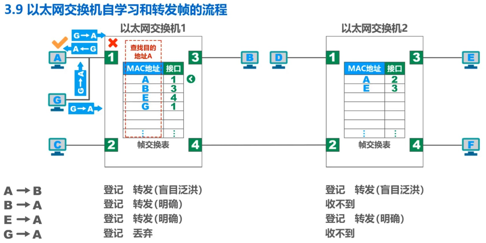
与ARP相同，帧交换表中的各记录同样具有生命周期，此举是考虑到MAC地址与交换机接口的对应关系不是亘古不变的。
这里讨论STP（Spanning Tree Protocol，生成树协议）。为什么我们需要STP呢？因为上文描述的流程其实是存在问题的，对于链式相连的交换机情景是成立的，但没有考虑存在网络环路时的严重后果。
为了提升以太网的可靠性，我们需要一定的冗余链路，例如在一个存在三台交换机的小型网络中将交换机两两相连，这样即使其中一台交换机与另一台交换机的连接因为某种原因断开了，整个网络中的所有主机仍能进行通信。但如果不加处理，冗余的链路将很容易致使形成网络环路，这将带来以下灾难性的问题：
广播风暴（Broadcast Storm）
广播风暴是指在计算机网络中，广播帧在网络设备（如交换机、路由器）之间不断转发，形成一个不断增大的广播数据流。这种现象常常导致网络带宽的极度消耗，造成网络性能下降，甚至导致设备崩溃或网络瘫痪；同时主机收到重复的广播帧，大量消耗主机资源。
网络中存在环路是广播风暴的主要成因之一，例如一个有三个路由器的小型网络中，路由器A首先通过广播将帧转发至路由器B与路由器C，路由器B将其转发给路由器C、路由器C将其转发给路由器B……帧将在各交换机间反复转发，并且存在两条方向相反的转发链。
帧交换表震荡（MAC Address Table Flapping）
帧交换表震荡是广播风暴的影响之一，是指交换机的MAC地址表中某个MAC地址在短时间内频繁地在不同端口之间切换，导致交换机无法确定该MAC地址的实际位置，从而影响数据帧的正确转发。
仍以三个路由器的小型网络为例，路由器A的接口首先收到直接来自发送方主机的帧，这时在帧交换表中的登记是正确的，但发生广播风暴后路由器A不断从路由器B与路由器C再次收到该帧，于是路由器A不断更新帧交换表中的记录，但无论如何更新都只是错误的结果。
STP的作用就是确保网络在逻辑拓扑结构上是无环路的树型。
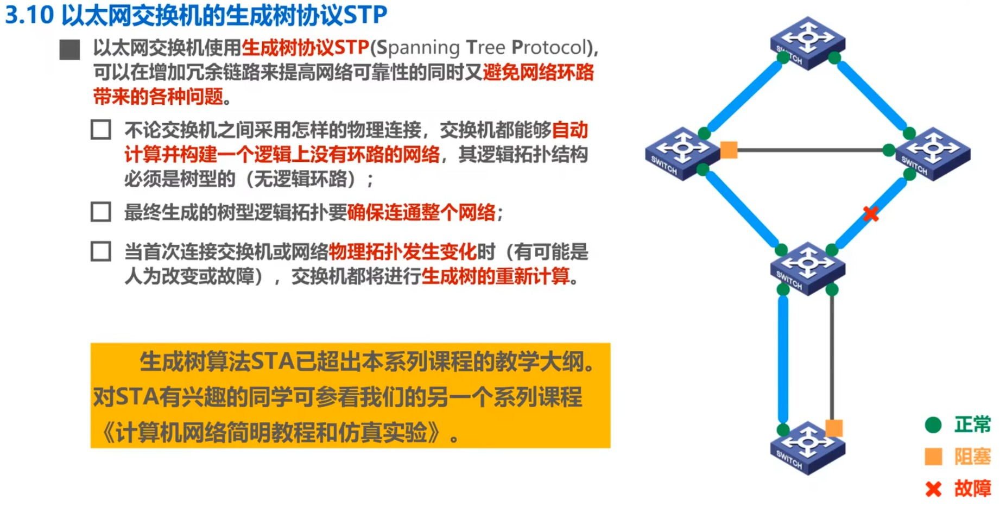
默认情况下，使用以太网交换机将隔离冲突域、扩大广播域。随着交换式以太网规模的增加，广播域也随之增大，而一个巨大的广播域会导致广播时大大增加网络和主机的资源开销，并提升管理与维护的难度。目前许多协议栈仍会频繁使用到广播，因此必须尽量避免过大的广播域。
拆分广播域可以达到在不改变原有物理链路的前提下减小广播域范围的目的，通常考虑两种方式：使用网络层设备路由器或基于交换机的VLAN（Virtual Local Area Network，虚拟局域网）。由于路由器相对昂贵，而交换机成本较低，因此VLAN是一个不错的选择。
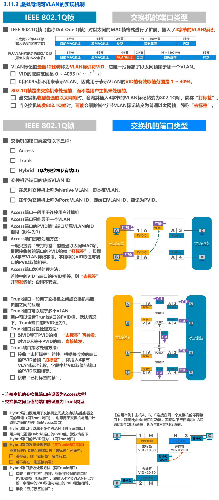
网络的主要任务是实现网络互连，进而实现数据包在各网络之间的传输。如果各个不同的网络只需要在其内部进行通信，那么实现物理层与数据链路层就可以了；但如果希望将各个不同的网络互连起来、形成更大的互联网，就需要网络层互连设备路由器。
网络层要关注的问题是：
向运输层提供可靠传输服务还是不可靠传输服务；
如何解决网络层寻址问题；
路由选择的问题。
OSI体系下的网络层能够提供两种服务：面向连接的虚电路服务与无连接的数据报服务。
面向连接的虚电路服务的可靠通信由网络自身保证，而不是由用户主机保证。在通信前，必须首先建立名为虚电路（Virtual Circuit）的网络层连接，通信双方沿着已建立的虚电路发送分组。虚电路是一条逻辑上的连接，分组应沿着这条逻辑连接按照存储转发的方式传送，并没有建立一条物理连接，此处区别于采用电路交换的电话通信。目的主机的地址仅在连接建立阶段使用，之后的每个分组的首部只需要携带一条虚电路的编号即可。如果在采取这种通信方式的同时使用可靠传输的网络协议，则可以使所发送的分组最终均能够无差错且按序、不丢失、不重复地正确抵达接收方。通信结束后，需要释放之前所建立的虚电路。
许多广域分组交换网络都使用面向连接的虚电路服务，但因特网采用的则是无连接的数据报服务。相比面向连接的虚电路服务，无连接的数据报服务十分显著的一个特征是可靠通信由用户主机保证，而非由网络自身保证。当两台主机通信时，网络层之间不需要建立连接，每个分组都可以经由不同的路由传送，因此每个分组的首部均必须携带目的主机的完整地址。这种通信方式所传送的分组可能误码、丢失、重复或失序。但正因为网络本身不提供端到端的可靠传输服务，所以网络中的路由器不需要很复杂的实现，相比于电信网的交换机价格十分低廉。
简而言之概况因特网采用无连接的数据报服务的设计哲学：将负责的网络处理功能置于因特网的边缘（指用户主机和其内部的运输层），而将相对简单但应尽力而为的分组交付功能置于因特网的核心。
综上所述，TCP/IP体系下的网际层仅向上提供无连接、不可靠的传输服务。
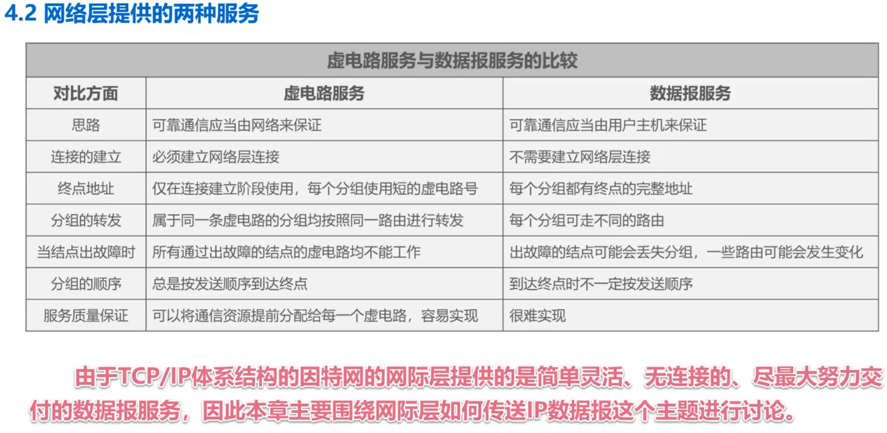
IPv4地址概述
IPv4（Internet Protocol version 4）是网际层的核心通信协议之一，是IPv6的前一代协议。IPv4地址是为因特网（Internet）上主机或路由器的每一个接口分配的一个在全世界范围内唯一的32比特标识符，共4字节。
IP地址由ICANN（Internet Corporation for Assigned Names and Numbers）进行分配，中国用户可向APNIC（Asia Pacific Network Information Center）付费申请IP地址，但一般不接受个人申请。部分IPv4地址为私有地址，不作为IPv4公共地址，可以在各内网中使用，但不应在因特网公开使用。2011年2月3日，由ICANN负责的IANA（Internet Assigned Numbers Authority）宣布IPv4地址已分配完毕。中国在2014年、2015年前后逐步停止向新用户与应用分配IPv4地址，全面开展商用IPv6的部署。
为了方便地划分网络，需要明确的编址方式对IPv4地址进行编址。IPv4地址的编址方式经历了三个历史阶段：1981年起的分类编址、1985年起的划分子网与1993年起的无分类编址。这些编址方式将在下文中详细介绍。
IPv4地址最常见的表示方法是点分十进制表示方法。对于一个二进制的IPv4地址，可以按以下流程得到其点分十进制表示：首先将32个比特按每8位分为一组，接着将每组表示为对应的十进制数形式，最后以小数点作为组的间隔符。
分类编址的IPv4地址
该编址方式将IPv4地址分为了A类地址、B类地址、C类地址、D类地址与E类地址五个类别。
A类地址：高8位为网络号，低24位为主机号，其中高1位固定为0，可分配给网络中的主机或路由器各接口。
最小网络号为 0，即二进制 00000000，该网络号被保留，不作指派。
最大网络号为 127，即二进制 00000001，该网络号为本地环回测试地址，不作指派。
第一个可指派的网络号为 1，最后一个可指派的网络号为126。
最小的本地环回测试地址为 127.0.0.1，注意不是 127.0.0.0，因为下文会解释如果主机号的比特全为0表示源网络本身，而非特定的主机。
最大的本地环回测试地址为 127.255.255.254，注意不是 127.255.255.255，因为下文会解释如果主机号的比特全为1表示广播地址。
该类地址可指派的网络数量为
B类地址：高16位为网络号，低16位为主机号，其中前2位固定为10，可分配给网络中的主机或路由器各接口。
最小网络号同时也是第一个可指派的网络号，为 128.0。
最大网络号同时也是最后一个可指派的网络号，为 191.255。
该类地址可指派的网络数量为
C类地址：高24位为网络号，低8位为主机号，其中前3位固定为110，可分配给网络中的主机或路由器各接口。
最小网络号同时也是第一个可指派的网络号，为 192.0.0；根据2002年9月发表的RFC 3330文档，该网络号不再保留、允许被分配，但事实上并没有进行过实际的分配。
最大网络号同时也是最后一个可指派的网络号，为 223.255.255。
该类地址可指派的网络数量为
D类地址：无主机号的多播地址，前4位固定为 1110。
E类地址：未定义的保留地址，前4位固定为 1111。
此外还有四种特殊的IPv4地址：
网络号固定但主机号各比特全为0的地址是作为源网络地址，表示整个网络本身而非某台主机的地址；
网络号与主机号各比特均全为0的地址是本机地址；
网络号固定但主机号各比特全为1的地址是直接广播地址，表示报文应当在目标网络上进行广播，但RFC 2644规定路由器默认不转发直接广播包，目的是防止广播风暴和跨网段流量泛滥；
网络号与主机号各比特均全为1的地址是受限广播地址，表示报文仅在本地网络内广播，路由器直接丢弃该报文而不转发。
以上四种特殊的IPv4地址均被禁止分配给网络中的主机或路由器各接口，并且这一规定在CIDR中仍有效。
总结 1：根据分类编址的IPv4地址左起第一个十进制数的值可以判断出网络类别，小于等于127为A类，大于127但小于等于191为B类，大于191但小于等于223为C类。
总结 2：下表是通常不使用的特殊IP地址，
| 网络号 | 主机号 | 是否作为源地址 | 是否作为目的地址 | 含义 |
|---|---|---|---|---|
| 0 | 0 | 可以✅ | 不可以❌ | 在本网络上的本主机，同时也是默认路由 |
| 0 | host-id | 可以✅ | 不可以❌ | 在本网络上某台主机的host-id |
| 被比特1填充 | 被比特1填充 | 不可以❌ | 可以✅ | 受限广播地址：只在本网络上进行广播 |
| net-id | 被比特1填充 | 不可以❌ | 可以✅ | 直接广播地址：在目标网络上进行广播 |
| net-id | 被比特1填充 | 不可以❌ | 可以✅ | 对net-id上的所有主机进行广播 |
| net-id | 被比特0填充 | 不可以❌ | 不可以❌ | 标识net-id网络本身 |
| 127 | 未全被比特1填充 未全被比特0填充 | 可以✅ | 可以✅ | 本地软件环回测试 |
补充 1：在Windows系统和Linux系统中，地址 localhost 被默认解析至IPv4的 127.0.0.1（同时解析至IPv6的 ::1），不难看出这正是最小的A类本地环回测试地址。
补充 2：根据RFC 1918标准，
10.0.0.0 ~ 10.255.255.255 为A类私有地址
172.16.0.0 ~ 172.31.255.255 为B类私有地址
192.168.0.0 ~ 192.168.255.255 为C类私有地址
这些地址可被用于专用网络，无需申请即可使用，但不能被用于公共的因特网，因为并不唯一。即使IPv4地址的分类编址已被弃用，这些地址仍被视为私有地址。
划分子网的IPv4地址
分类编址的IPv4地址有着很明显的弊端：
网络中存在IP地址的浪费，因为分配地址时每个网络中可分配的IP地址是固定的；
新增网络则必须申请新的网络号，带来时间和经济的开销；
即使申请了新的网络号，也会增加其他路由器中路由表记录的数量。
如果可以借用主机号中未使用的部分作为子网号，那么在划分子网时就不需要再申请新的网络号，这就是划分子网的IPv4地址的设计思想。
这里又引申出一个问题：计算机如何知道分类地址中主机号有多少位被借走作为子网号了呢？借助大名鼎鼎的子网掩码（Subnet Mask）就可以实现这一功能，这是一种用以划分子网的工具。
子网掩码的计算：分类编址的可指派IPv4地址由网络号与主机号组成，划分子网的子网号占用主机号的高位，即位于网络号与主机号之间。令网络号与子网号的部分均取比特1，剩余主机号的部分均取比特0，这样就得到了32比特的子网掩码。子网掩码常见的形式是除网络号与子网号以外的位均取比特0，换言之是取子网网络地址，然后再按点分十进制表示。
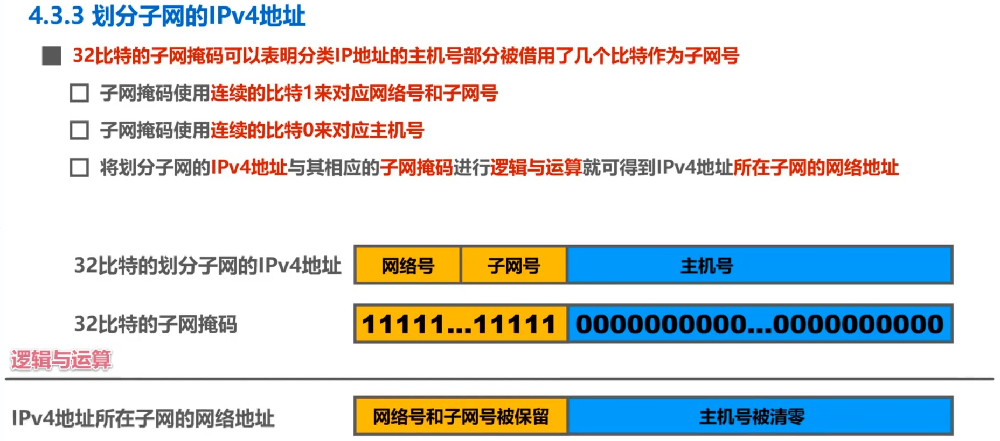
计算机只需要对地址中的主机号和除开网络号部分的子网掩码作逻辑与位运算，就可以得到相应的子网号。
此外，还有所谓的默认子网掩码，指在未划分子网的情况下使用的子网掩码，计算规则是网络号的部分均取比特1，主机号的部分均取比特0，其余步骤同上。
无分类编址的IPv4地址
尽管划分子网在一定程度上缓解了因特网在发展中遇到的困难，但数量巨大的C类网因为地址空间太小而未得到充分利用，同时因特网的IP地址仍在加速消耗，这导致IPv4地址空间面临全部耗尽的局面。
为解决此问题，IETF（Internet Engineering Task Force）提出无分类编址的方法以暂时性解决IP地址紧张的问题，同一时间成立IPv6工作组负责研究新版本IP地址以彻底解决IP地址紧张的问题。
1993年，IETF发布了CIDR（Classless Inter-Domain Routing，无分类域间路由选择）的RFC文档，包括RFC 1517、RFC 1518、RFC 1519与RFC 1520，该方案允许我们更灵活地定义网络段，弃用了传统的A类地址、B类地址、C类地址以及划分子网的概念，采用斜线记法（或称CIDR记法）表示网络前缀占用的比特数量。
CIDR实际上是将网络前缀相同的连续IP地址组成一个CIDR地址块，在斜线后紧随网络前缀所占的比特数量。例如 127.0.0.1/8，其中 8 表示取 127.0.0.1 的前8个比特作为网络段，剩余部分作为主机号。网络段部分对应为比特1、主机号部分对应为比特0的32位比特序列被称为地址掩码，和子网掩码相同的是地址掩码也常采用点分十进制表示，例如 127.0.0.1/8 对应的地址掩码为 255.0.0.0（二进制 11111111000000000000000000000000）。有些场景下仍沿用历史上子网掩码的称呼，称地址掩码为子网掩码。
特别地，当地址掩码为 255.255.255.255 表示IP地址的所有32位均被定义为了网络部分，该子网只包含一个主机地址，因此可以认为地址掩码为 255.255.255.255 的IPv4地址指向了一台特定的主机。
注意区分：
传统 · 子网掩码：在分类编址和子网划分阶段，子网掩码明确用于标识IP地址中的网络号和子网号。例如，C类地址默认掩码为 255.255.255.0。
CIDR · 地址掩码：CIDR消除了子网划分的概念，将网络前缀和主机号的划分简化为两级结构。此时，“地址掩码”的作用与传统子网掩码类似，但其名称更强调对网络前缀的匹配，而非子网的划分。
CIDR能够帮助进行路由聚合，也被称为构造超网。例如，路由器R1直接连接了五个网络，这些网络的IPv4地址分别 172.1.4.0/25、172.1.4.128/25、172.1.5.0/24、172.1.6.0/24 与 172.1.7.0/24。如果R1将这五个网络的路由记录均通告给与之相连的另一个路由器R2，则R2的路由表也会增加五条记录。注意到这五条路由记录的目的网络存在共同前缀 127.1.4.0/22，该共同前缀被称为聚合地址块，因此R2的路由表可以只存储聚合地址块 127.1.4.0/22，以此减少路由记录对路由表的占用。
不难看出，网络前缀越长，地址块越小，路由越具体。因此，如果路由器查表转发分组时发现有多条可选路由，则会遵照最长前缀匹配原则，选择网络前缀最长的路由，因为该路由是最具体的。
同时也可以知道，默认路由 0.0.0.0/0 与 ::/0 的优先级是最低的，因为默认路由是前缀最短的路由，也是最不具体的路由。
绝大多数时候，我们在应用层各协议中使用的IP地址实际上隐含了其地址掩码 255.255.255.255。例如，当我们在浏览器中输入URL https://202.202.96.35 并访问时，目标地址在逻辑上完全等同于网络层的IP地址 202.202.96.35/32。就算我们强行使用CIDR记法，大多数应用层协议仍会将其忽略，甚至报错。
根据我的理解，我认为这样设计的理由是应用层协议只关心如何在与特定主机的连接上通过应用进程的交互实现特定网络应用，它不关心也不需要关心子网是如何划分的、IP数据报实际上是如何被发送与转发的，这并不是应用层需要负责的功能。
IPv4地址的应用规划
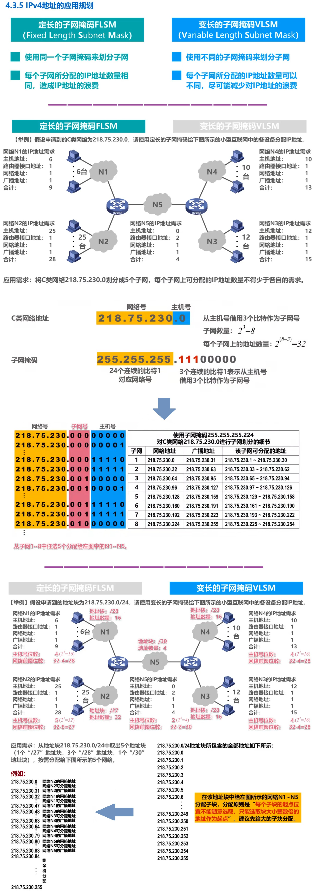
IPv6地址概述
IPv6（Internet Protocol version 6）是IETF设计的下一代互联网协议，用于替代IPv4以解决地址枯竭、路由效率、安全性等问题。其核心特性包括：
128位地址长度：地址空间为
简化的报头结构：固定40字节基本报头，取消校验和字段，支持扩展报头链式处理。
内置安全性：IPsec（IP Security）成为协议栈强制要求。
高效路由与QoS支持：通过层次化地址结构优化路由表规模，支持流标签（Flow Label）字段实现服务质量控制。
无状态地址自动配置（SLAAC）：支持设备自动生成全球唯一地址。
IPv6地址由ICANN统一管理，全球单播地址通过RIR（Regional Internet Registry，如APNIC、ARIN）分配。中国于2017年发布《推进互联网协议第六版（IPv6）规模部署行动计划》，全面推动IPv6商用化。
IPv6地址表示方法
IPv6地址采用冒分十六进制表示法，规则如下：
基本格式：将128位地址按每16位分段，转换为4位十六进制数，以冒号分隔。
示例：2001:0db8:85a3:0000:0000:8a2e:0370:7334。
压缩格式：
前导零压缩：每段前导零可省略。
示例：2001:db8:85a3:0:0:8a2e:370:7334。
连续零段压缩：连续多段全零可用::表示（仅允许一次）。
示例：2001:db8:85a3::8a2e:370:7334。
CIDR前缀表示：网络前缀长度用/标注。
示例：2001:db8::/32。
IPv6地址类型
IPv6地址分为三大类，取消了IPv4的广播地址（由组播替代）：
| 类型 | 定义 | 典型地址范围 | 用途 |
|---|---|---|---|
| 单播 | 标识单一接口，数据包发送到该地址的唯一接口。 | 点对点通信 | |
| 组播 | 标识一组接口，数据包发送到该组所有成员。 | FF00::/8 | 一对多通信（取代IPv4广播） |
| 任播 | 标识一组接口，数据包发送到距离最近的成员（路由协议决定）。 | 使用单播地址空间，由路由配置定义范围 | 负载均衡、就近服务（如CDN节点选择） |
单播地址细分：
全球单播地址（Global Unicast）：
结构：全局路由前缀（48位） + 子网ID（16位） + 接口标识符（64位）
范围：2000::/3（即 2000:: 至 3FFF:FFFF:FFFF:FFFF:FFFF:FFFF:FFFF:FFFF）
分配：由 IANA → RIR → ISP → 用户逐级分配
链路本地地址（Link-Local）：
结构：固定前缀 FE80::/10 + 54位零 + 64位接口标识符。
用途：同一链路上设备间通信（如路由器邻居发现），不跨路由器转发。
示例：FE80::1（常见于本地主机或路由器接口）。
唯一本地地址（ULA, Unique Local Address）：
结构：前缀 FC00::/7（实际使用FD00::/8），后接40位全局ID + 16位子网ID + 64位接口标识符。
特性：私有地址空间（类似IPv4的 10.0.0.0/8），可全球唯一但默认不路由到公网。
环回地址：
固定为 ::1，功能同IPv4的 127.0.0.1，仅用于本机测试。
未指定地址：
固定为 ::（全零地址），表示地址未初始化，用于临时占位（如DHCPv6请求源地址）。
IPv6特殊地址与保留地址
| 地址类型 | 地址格式 | 是否可作源地址 | 是否可作目的地址 | 用途 |
|---|---|---|---|---|
| 未指定地址 | ::/128 | 可以✅（临时） | 不可以❌ | 初始化过程中临时使用（如DHCPv6请求） |
| 环回地址 | ::1/128 | 可以✅ | 可以✅ | 本地软件环回测试 |
| IPv4兼容地址 | ::IPv4-address/96 | 已弃用❌ | 已弃用❌ | 历史过渡方案（如 ::192.168.1.1），现由转换技术替代 |
| IPv4映射地址 | ::FFFF:IPv4-address/96 | 不可以❌ | 可以✅ | 表示IPv4节点的IPv6形式（如 ::FFFF:202.96.128.86） |
| 链路本地地址 | FE80::/10 | 可以✅ | 可以✅ | 同一物理链路上的设备通信 |
| 全球单播地址 | 2000::/3 | 可以✅ | 可以✅ | 公网可路由地址 |
| 唯一本地地址 | FD00::/8 | 可以✅ | 可以✅ | 私有网络内部使用，全球唯一但默认不路由至公网 |
| 组播地址 | FF00::/8 | 不可以❌ | 可以✅ | 一对多通信（如 FF02::1 表示链路上所有节点，FF02::2 表示所有路由器） |
IPv6地址配置机制
无状态地址自动配置（SLAAC）
原理：通过路由器通告（RA, Router Advertisement）消息获取网络前缀，结合接口标识符生成全局地址。
接口标识符生成：
EUI-64：将48位MAC地址转换为64位接口ID（插入 FFFE，翻转全局/本地位）。
示例：MAC 00:1C:C4:9B:2A:5C → EUI-64 021C:C4FF:FE9B:2A5C。
隐私扩展：随机生成临时接口ID，防止设备追踪（默认启用）。
流程：
一、主机发送路由器请求消息（可选）。
二、路由器周期性发送RA消息，包含前缀、MTU、默认路由等信息。
三、主机根据前缀+接口ID生成地址，并通过DAD（重复地址检测）确认唯一性。
有状态配置（DHCPv6）
适用场景：需分配DNS服务器等额外参数时。
模式：
Stateful：DHCPv6服务器分配完整地址及配置参数。
Stateless：结合SLAAC使用，仅通过DHCPv6获取DNS等信息。
手动配置
管理员直接指定地址及网络参数，常用于服务器、网络设备。
IPv4与IPv6兼容过渡技术
| 技术 | 原理 | 应用场景 |
|---|---|---|
| 双协议栈 | 设备同时运行IPv4和IPv6协议栈，根据目标地址选择协议版本。 | 通用过渡方案，需终端支持双栈。 |
| 隧道技术 | 将IPv6包封装在IPv4包中穿越IPv4网络（如6to4、Teredo、GRE隧道）。 | 连接孤立的IPv6网络。 |
| 协议转换 | 通过NAT64/DNS64将IPv6流量转换为IPv4流量（或反向）。 | IPv6-only网络访问IPv4资源。 |
| 应用层代理 | 使用代理服务器中转不同协议版本的流量（如HTTP代理）。 | 特定应用场景（如Web访问）。 |
IPv6地址的应用规划示例
假设某企业分配到的全球单播地址块为 2001:db8:1234::/48，子网规划如下：
总部网络：子网ID 0001，地址块 2001:db8:1234:1::/64
服务器区：2001:db8:1234:1:1::/80
员工终端：2001:db8:1234:1:2::/80
分支机构A：子网ID 0002，地址块 2001:db8:1234:2::/64
分支机构B：子网ID 0003，地址块 2001:db8:1234:3::/64
总结对比：IPv4与IPv6核心差异
| 特性 | IPv4 | IPv6 |
|---|---|---|
| 地址长度 | 32位（约43亿地址） | 128位（约 |
| 地址表示 | 点分十进制 | 冒分十六进制（支持压缩格式） |
| 地址类型 | 单播、广播、组播 | 单播、组播、任播（无广播） |
| 子网划分 | 需子网掩码或CIDR | 固定64位接口ID，前缀长度灵活定义 |
| 配置方式 | DHCP或手动 | SLAAC（无状态）、DHCPv6（有状态）、手动 |
| 安全性 | 依赖上层协议（如IPsec可选） | 强制支持IPsec |
| QoS支持 | 通过ToS字段 | 流标签（Flow Label）字段 |
| 首部开销 | 20字节（无选项） + 可变选项字段 | 固定40字节基本首部 + 扩展首部链 |
附：IPv6地址结构示意图（全球单播）
路由器通过查询路由表决定如何转发IP数据报。路由表是一种特殊的数据结构，包含目的网络、地址掩码、下一跳、类型等若干字段，其中类型包括直连网络、动态路由与静态路由三个属性。
存在三种特殊的静态路由条目：默认路由、特定主机路由与黑洞路由。
默认路由：目的网络与地址掩码均为 0.0.0.0，用CIDR记法表示为 0.0.0.0/0。默认路由是前缀最短的路由，也是最不具体的路由，根据路由的最长前缀匹配原则，默认路由的优先级最低，当且仅当地址与其他路由条目均匹配失败时IP数据报被转发至默认路由。
特定主机：目标网络为特定主机的IP地址，地址掩码为 255.255.255.255，该子网下只有一个主机地址，可以认为是指向特定主机的地址。特定主机路由是前缀最长的路由，也是最具体的路由，根据路由的最长前缀匹配原则，特定主机具有最高的优先级。
黑洞路由：黑洞路由条目的下一跳字段值为 null0。null0 是路由器内部的一个虚拟接口，意味着路由器将丢弃发送至目标网络的IP数据报。
这些特殊的路由条目属于静态路由，通常需要手动配置，动态路由协议不会自动生成这些特殊路由条目。
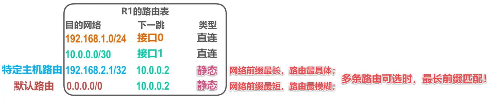
路由器的基本结构将在下一小节路由选择协议中再做介绍。
IP数据报的发送和转发过程
这一部分主要描述数据从源主机到目的主机的传输机制，涉及主机和路由器的协作逻辑。
主机发送IP数据报
判断目标是否在同一网络
主机会通过地址掩码计算源IP和目标IP的网络地址。若两者网络地址相同，则属于直接交付，直接通过链路层发送；若不同，则需通过路由器间接交付。
示例：主机C（IP: 192.168.0.66/26）发送数据给主机F（IP: 192.168.0.127/26），通过掩码计算发现目标网络地址不同，需转发至默认网关。
默认网关的作用
默认网关是本地网络的出口路由器接口。主机会将所有跨网络流量发送至该网关，由其负责后续路由决策。
路由器转发IP数据报
数据报检查
路由器接收数据报后，首先校验首部完整性（如校验和、TTL值）。若校验失败或TTL归零，则丢弃数据报并发送ICMP错误报告。
路由表查询
根据目标IP地址查询路由表，匹配最长前缀路由条目。若未找到匹配项或网络拥塞，丢弃数据报并通知源主机。
路由类型：包括直连网络、静态路由、动态路由（如OSPF、RIP）。
转发与封装
确定下一跳后，路由器重新封装数据链路层帧（更新源/目的MAC地址）并转发。TTL值减1，重新计算校验和。
广播隔离
路由器不会转发广播包（如 255.255.255.255），避免广播风暴。
总结：中继器与集线器工作在物理层，不隔离冲突域与广播域；网桥与交换机（多端口网桥）工作在数据链路层，隔离冲突域但不隔离广播域；路由器工作在网络层，既隔离冲突域又隔离广播域。
静态路由配置及其可能产生的路由环路问题
静态路由是人工配置的路由条目，适用于小型网络，但配置不当易引发路由环路。
静态路由的特点
优点：配置简单、开销小，适合拓扑稳定的网络。
缺点：无法动态适应网络变化（如链路故障），需手动维护。
路由环路产生的原因
配置错误：如错误指定下一跳地址，导致数据在路由器间循环转发。
示例：R1和R2互为默认网关，形成无限循环。
聚合不存在的网络：将多个子网聚合为超网时，若包含无效网络，可能导致错误路由。
网络故障：链路中断或路由器宕机后，静态路由未及时更新，导致数据在冗余路径中循环。
路由环路的危害
网络拥塞：循环转发占用带宽，降低整体性能。
数据丢失：TTL耗尽后数据包被丢弃，影响通信可靠性。
网络不稳定：环路可能导致路由表震荡，增加管理复杂度。
解决方案
黑洞路由（Blackhole Routing）：
针对聚合不存在的网络：如果路由环路是由某路由聚合造成的，则可以在路由表中配置特定目标网络的下一跳为 null0，从而在不改变原有记录的前提下，利用最长前缀匹配原则使路由器不向特定目标网络转发IP数据报。
针对网络故障：如果路由环路是网络故障引起不可达进而使路由表自动删除了直连网络的路由条目导致的，解决思路同上，避免匹配至默认路由即可，可以通过设置该直连网络的黑洞路由解决。
水平分割（Split Horizon）：禁止从某接口收到的路由信息再从该接口发回，防止错误信息循环。
路由毒化（Route Poisoning）：将故障链路的路由跳数设为无穷大（如RIP中设为16），通知邻居路由不可达。
抑制计时器（Hold-Down Timer）：在链路故障后暂缓路由更新，避免临时错误信息传播。
TTL机制：通过递减TTL值强制终止循环数据包。
前文中提到，路由表中的类型字段包含直连网络、静态路由与动态路由。静态路由是人工配置的，而动态路由则是由本小节的研究对象路由选择协议（Routing Protocol）控制的。人工配置的方式简单、开销小，但不能及时适应网络状态（流量、拓扑等等）的变化，一般只在小规模网络中采用；动态路由选择比较复杂、开销较大，但能较好地适应网络状态的变化，适用于大规模网络。
因特网作为全球最大的互联网络，其所采用的路由选择协议具有以下三个主要特点：
自适应：动态路由选择，能较好地适应网络状态的变化。
分布式：路由器之间交换路由信息。
分层次：自治系统（Autonomous System，AS）是由单一机构管理、使用统一路由策略的网络集合，因特网的层次性体现在可以将整个因特网划分为许多较小的自治系统。
自治系统的内部与外部可以分别采用不同类型的路由选择协议。在自治系统的内部使用的路由选择协议称为内部网关协议（Interior Gateway Protocol，IGP），在不同自治系统之间使用的路由选择协议称为外部网关协议（Exterior Gateway Protocol，EGP）。内部网关协议与外部网关协议是形式上的属性，并非指代某种特殊的路由选择协议。
补充：“网关协议”是一个过时的术语，现在的文档中将其分别称为内部路由协议与外部路由协议。
以下是一些常见的路由选择协议：
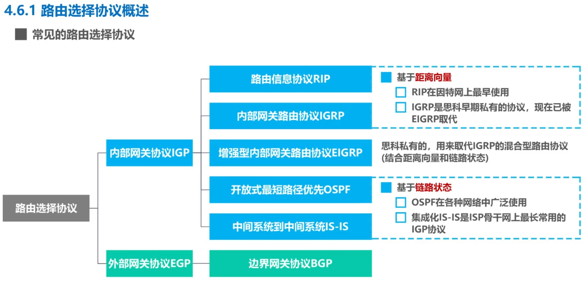
以下是路由器（Router）的基本结构：
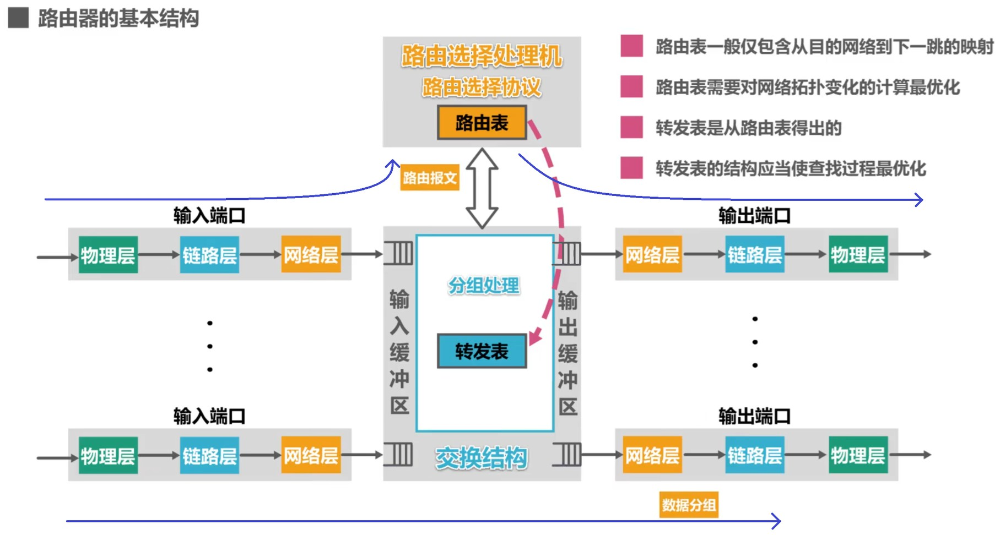
路由表中有如下核心字段：
| 字段名称 | 作用描述 | 示例 |
|---|---|---|
| 目标网络（Destination） | 标识数据包要到达的目标网络或主机地址，可以是具体IP地址、子网或默认路由（0.0.0.0/0）。 | 192.168.1.0/24、10.0.0.5/32 |
| 子网掩码（Netmask）或前缀长度（Prefix Length） | 定义目标网络的地址范围（IPv4用子网掩码，IPv6用前缀长度）。 | 255.255.255.0、/64 |
| 下一跳（Next Hop） | 数据包转发到目标网络的下一跳设备的IP地址。若目标网络直连，可能为 0.0.0.0 或 On-link。 | 172.16.0.1、fe80::1%eth0 |
| 出接口（Interface） | 数据包离开本设备时使用的物理或逻辑接口（如以太网口、VLAN）。 | eth0、GigabitEthernet0/1 |
| 度量值（Metric） | 路径优先级指标，值越小优先级越高。不同协议计算方式不同（如跳数、带宽、延迟等）。 | 10（静态路由）、110（OSPF） |
| 路由类型（Route Type） | 标识路由来源：静态配置、动态协议（OSPF、BGP）、直连网络（Connected）等。 | Static、OSPF、Direct |
| 管理距离（Administrative Distance） | 不同路由来源的可信度权重，值越小优先级越高（仅某些系统如Cisco使用）。 | 1（直连）、90（EIGRP） |
| 路由状态（Status） | 路由条目是否活跃可用（如 Active、Inactive）。 | UP、Down |
RIP（Routing Information Protocol，路由信息协议）是最先得到广泛运用的一种内部网关协议，在RFC 1058中首次正式提出。
RIP要求自治系统内的每一个路由器都要维护从它自己到自治系统内其他每一个网络的距离记录，称为D-V（Distance-Vector，距离向量）。
RIP使用跳数（Hop Count）作为度量（Metric）以衡量到达目的网络的距离。具体而言：
路由器到直连网络的距离定义为1；
路由器到非直连网络的距离定义为所经过的路由器数量加1；
RIP的一条路径最多允许包含15个路由器，当距离大于等于16时认为不可达。
这导致RIP只适用于小型互联网。
RIP的设计哲学是“好的路由就是距离最短的路由”，即最短路径所经过路由器数量最少的路由，并未考虑带宽。
特别地，当同一目的网络存在多条距离相等的不同路由时，RIP会采取等价负载均衡策略，也就是将通信量均衡地分布到多条等价路由上。
RIP的三个要点：
和谁交换信息：仅与相邻的路由器交换信息
交换什么信息：路由表
何时交换信息：周期性交换RIP更新报文
RIP的路由条目更新规则：路由器收到来自相邻路由器的RIP更新报文后，首先提取出其中携带的相邻路由器的路由表，将表中的距离全部加一、下一跳均设置为此相邻路由器，然后与本路由器的路由表进行比对：
如果处理后的路由表拥有本地路由表不存在的目的网络记录，则将该记录添加至本地路由表；
如果处理后的路由表与本地路由表存在相同目的网络但下一跳不同的记录；
如果本路由劣势，即处理后路由表内的距离小于本地路由表内的距离，则用处理后路由表内的距离更新本地路由表；
如果处理后路由表内的距离等于本地路由表内的距离，则采取等价负载均衡策略。
如果本路由优势，即处理后路由表内的距离大于本地路由表内的距离，则不进行更新。
如果处理后的路由表与本地路由表存在相同目的网络且下一跳相同的记录，而且这些记录在两个表中相应的距离是不同的，则意味着网络拓扑发生了变化，那么无论哪一方记录的距离更大，都应该以处理后路由表内的距离字段覆盖本地路由表内的距离字段。
经过若干次交换与更新后，每个路由器都获知了本自治系统内各网络的最短距离与下一跳地址，这一结果称为收敛。
RIP最显著的问题是路由环路问题，也称距离无穷计数问题、收敛延迟问题。这一问题的形象描述是“坏消息传得慢”，具体而言：当网络中出现链路故障（如路由器宕机或线路断开）时，RIP无法快速通知全网所有路由器该路径失效，导致错误路由信息在相邻路由器之间循环传播，最终需要较长时间（如数分钟、十几分钟）才能收敛到正确状态。
RIP导致路由环路问题的一些原因：
逐跳更新：RIP通过相邻路由器周期性交换完整路由表（默认30秒/次）更新信息，而非实时触发更新。
跳数递增：当某路径失效时，故障路由器将跳数标记为16（不可达），但相邻路由器可能仍保留旧路由信息并误认为可通过其他路径到达目标网络，导致跳数逐次递增（如 16 → 17 → …）
最长跳数限制：RIP规定最大有效跳数为15，超过则视为不可达。这一限制虽强制终止环路，但导致坏消息必须经历多次跳数累加才能触发更新。
一个典型的路由环路例子：以两个路由器（R1、R2）连接同一网络（N1）为例，假设R1直连N1的链路中断，R1将N1的跳数设为16（不可达），但与此同时R2未及时收到更新，仍向R1发送旧路由表（如“N1, 2跳, R1”），这导致R1误认为可通过R2到达N1，更新路由表为“N1, 3跳, R2”并回传R2，于是R2将跳数更新为4跳，再次回传R1。此过程反复进行，直到跳数增至16时双方才确认N1不可达。
RIP的路由环路问题本质上是距离向量算法造成的。尽管我们可以用多种手段减轻路由环路带来的影响，但只要还采用RIP，就不可避免地需要面对这一问题。
通过以下机制减轻影响：
触发更新（Triggered Update）
链路故障时立即发送更新报文（非等待周期），缩短收敛时间。
局限性：若更新报文丢失或延迟，仍可能导致环路。
水平分割（Split Horizon）
禁止从某接口接收的路由信息再通过该接口发送，防止直接环路。
局限性：无法阻断复杂拓扑中的间接环路路径。
毒性逆转（Poison Reverse）
主动将失效路径的跳数设为16并广播，加速邻居路由器的更新。
局限性：增加带宽消耗，可能引发临时路由黑洞。
抑制计时器（Hold-Down Timer）
在链路故障后暂停接收新路由更新，避免错误信息覆盖正确路由。
OSPF（Open Shortest Path First，开放最短路径优先）是为了解决RIP存在路由环路问题的缺点而于1989年提出的，这是一种开源的路由选择协议，同时也是一种内部网关协议，其特点是弃用距离向量、改用Dijkstra最短路径算法计算路由。
上文提到，RIP的路由环路问题本质上是距离向量算法的劣根造成的，因此OSPF弃用了距离向量，改为基于链路状态。OSPF使用Dijkstra最短路径算法计算路由，从根本上保证了不会出现路由环路。相较于RIP，OSPF更新效率高，收敛速度快，对网络规模不存在限制。
至于所谓链路状态，是指本路由器与哪些路由器相邻以及相应链路的代价（Cost）。影响代价的因素包括费用、距离、时延、带宽等等，最终由网络管理人员决定。例如，思科路由器OSPF计算代价的公式是
OSPF协议下，每个路由器通过维护一张邻居表记录链路状态，该表至少包含邻居ID、接口与清除倒计时三个字段。
OSPF协议定义了五种分组类型：
Hello分组（Hello Packet）
作用：
邻居发现：探测同一链路上是否存在其他OSPF路由器。
邻居关系维护：确认邻居存活状态，协商参数（如Router ID、区域ID、Hello间隔等）。
DR/BDR选举：在广播型网络（如以太网）中选举指定路由器（DR）和备份指定路由器（BDR）。
特别地，在广播网络中，Hello分组携带接口优先级字段，优先级最高的路由器成为DR，次高为BDR。
工作流程：
① 周期性发送：路由器默认每10秒向组播地址 224.0.0.5（OSPFv2）或 FF02::5（OSPFv3）发送Hello分组，分组包含本路由器的Router ID、邻居列表、区域ID、接口优先级等参数。
② 邻居表更新：若收到邻居的Hello分组且参数匹配（如区域ID一致），将对方加入邻居表，并重置 Dead Timer 为40秒。
③ 超时处理：若 Dead Timer 超时前未收到邻居的Hello分组，标记该邻居为 Down，触发邻接关系中断。
DD分组（Database Description Packet）
作用：
LSDB摘要同步：在建立邻接关系时，交换双方LSDB的摘要信息（LSA头部），用于对比数据库一致性。
主从协商：确定双方在数据库同步过程中的主从角色（Master/Slave），确保有序交换。
工作流程：
① 触发条件：当两台路由器通过Hello分组建立邻居关系后，若需形成邻接关系（Adjacency），进入ExStart状态，开始DD分组交换。
② 主从协商：双方通过DD分组中的MS-bit（Master/Slave位）协商主从角色：Router ID大的一方成为Master，控制DD分组的序列号（Sequence Number）。
③ 摘要交换：Master发送DD分组（携带LSA头部列表），Slave回复确认并请求缺失的LSA。分组的 I-bit（Initial bit）和 M-bit（More bit）标记是否为第一包或最后一包。
④ 状态转移：完成摘要交换后，双方进入Exchange状态，开始请求具体LSA。
LSR分组（Link State Request Packet）
作用：解决LSA缺失问题，根据DD分组对比结果，向邻居请求本地LSDB中缺失的完整LSA。
工作流程：
① 触发条件：在 Exchange 状态下，若路由器发现本地LSDB缺少某些LSA（通过对比DD分组的摘要），生成LSR分组。
② 请求发送：路由器向邻居发送LSR分组，明确列出所需LSA的标识（LSA Type、Link-State ID、Advertising Router）。
③ 邻居响应：邻居收到LSR后，通过LSU分组返回请求的完整LSA。
④ 状态转移：所有LSR请求完成后，进入Loading状态，最终进入Full状态（邻接关系完全建立）。
LSU分组（Link State Update Packet）
作用：
传输完整LSA：响应LSR请求或主动通告链路状态变化（如接口故障、新增路由）。
泛洪机制：确保网络中所有路由器的LSDB同步。
工作流程：
① 主动更新：每30分钟或当链路状态变化（如接口Down）时，路由器生成更新的LSA，封装在LSU分组中，通过组播（224.0.0.5 或 FF02::5）泛洪。LSU在广播网络中由DR/BDR负责转发，以避免泛洪风暴。
② 响应请求：收到LSR分组后，将请求的LSA封装在LSU中单播回复。
③ 确认机制：接收方必须通过LSAck分组确认LSU的接收，否则发送方会重传。
④ 泛洪范围：LSA根据类型（如Router-LSA、Network-LSA）在区域或全网范围内泛洪。
LSAck分组（Link State Acknowledgment Packet）
作用：实现可靠传输保障，确认已收到LSU分组，确保泛洪过程的可靠性。
工作流程：
① 确认方式：分为显式确认与隐式确认。显式确认指收到LSU后单独发送LSAck分组（携带LSA头部），隐式确认指若在发送LSU时捎带对先前LSU的确认（某些优化场景）。
② 重传机制：若发送方未收到LSAck，会在重传计时器（通常5秒）超时后重传LSU。
③ 组播发送：LSAck通常通过组播发送（224.0.0.5或FF02::5），避免单播确认的开销。
OSPF协议下每台路由器都拥有一个LSDB（Link State Database）用于存储来自各路由器的LSAck分组。通过各路由器泛洪发送封装有己方LSAck分组的LSU分组以同步，最终各路由器的LSDB将达到一致状态，由一致的LSDB能够得到带权有向图结构的网络拓扑。最后，所有路由器基于该带权有向图执行Dijkstra最短路径算法，得到以各路由器为根的最短路径。
一个典型的OSPF分组协作流程：
邻居发现：Hello分组建立邻居关系（Init → 2-Way）。
数据库同步：
DD分组交换摘要（ExStart → Exchange）。
LSR/LSU请求并传输缺失LSA（Loading → Full）。
状态维护：Hello分组维持邻居状态，LSU泛洪更新链路状态，LSAck确保可靠性。
路由计算： 当LSDB同步完成后，所有路由器执行Dijkstra最短路径算法，生成最短路径树。
在前文对OSPF协议的五种分组描述中有提及DR/BDR。DR（Designed Router，指定路由器）与BDR（Backup Designed Router，备用指定路由器）是OSPF为解决在多点接入网络中的泛洪风暴而设计的，非DR/BDR的路由器只与DR/BDR建立邻居关系，非DR/BDR的路由器之间通过DR/BDR交换信息。
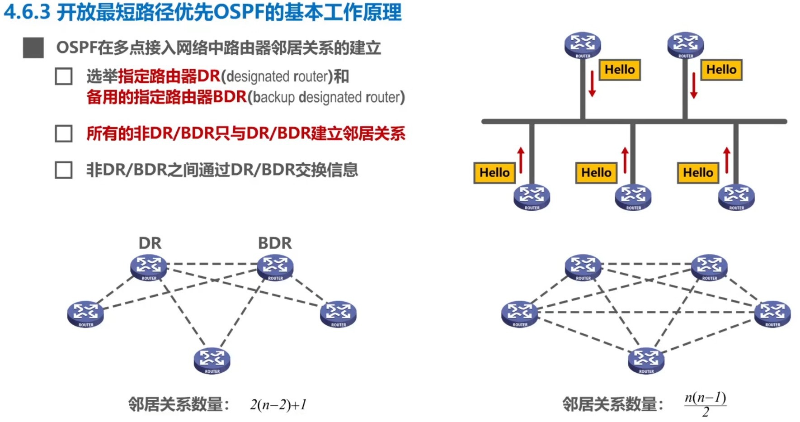
为了使OSPF能够应用于规模很大的网络，OSPF允许将一个自治系统划分若干个更小的范围，称为区域（Area）。划分区域时通常会选定一个区域作为主干区域，同时确保非骨干区域间的通信必须通过主干区域中转。每个区域拥有一个32比特的区域标识符（Area ID），通常以十进制整数或类似IPv4地址的格式。通过划分区域，限制泛洪交换链路状态信息的范围，使之局限于区域而非系统，进一步减少整个网络上的通信量。如果路由器的所有接口都严格位于同一区域内，则称该路由器为IR（Internal Router，区域内路由器）；如果路由器存在若干接口分别连接到不同的区域，则称该路由器为ABR（Area Border Router，区域边界路由器）；如果路由器位于主干区域内，则称该路由器为主干路由器（Backbone Router）；如果路由器专门负责与其他自治系统交换路由信息，则称该路由器为ASBR（AS Border Router，自治系统边界路由器）。
BGP（Border Gateway Protocol，边界网关协议）是一种外部网关协议，目前使用最广泛的版本是BGP-4。
前文提到的RIP与OSPF都并不适合作为外部网关协议，因为不同的自治系统间度量最佳路由的代价可能不尽相同，甚至可能需要考虑许多技术以外的影响因素。BGP的目的是寻找一条能够到达目的网络且相对较好的路由，而不是寻找某种代价下的最佳路由。
配置BGP时，要求每个自治系统的管理员选择至少一个路由器作为该自治系统的”BGP发言人“——该角色往往由自治系统边界路由器扮演。不同自治系统的BGP发言人如果要交换信息，首先需要建立端口号为179的TCP连接，然后在此TCP连接上交换BGP报文以建立BGP对话，从而交换包含网络可达信息在内的路由信息。使用TCP连接交换路由信息的两个BGP发言人彼此称对方为邻站（Neighbor）或对等站（Peer）。BGP发言人不仅要运行BGP，还要同时运行所在自治系统内的内部网关协议。当BGP发言人互相交换网络可达信息后，就需要根据所采用的策略构造出树形结构和不存在回路的自治系统连通图，进而找出到达各自治系统的比较好的路由。
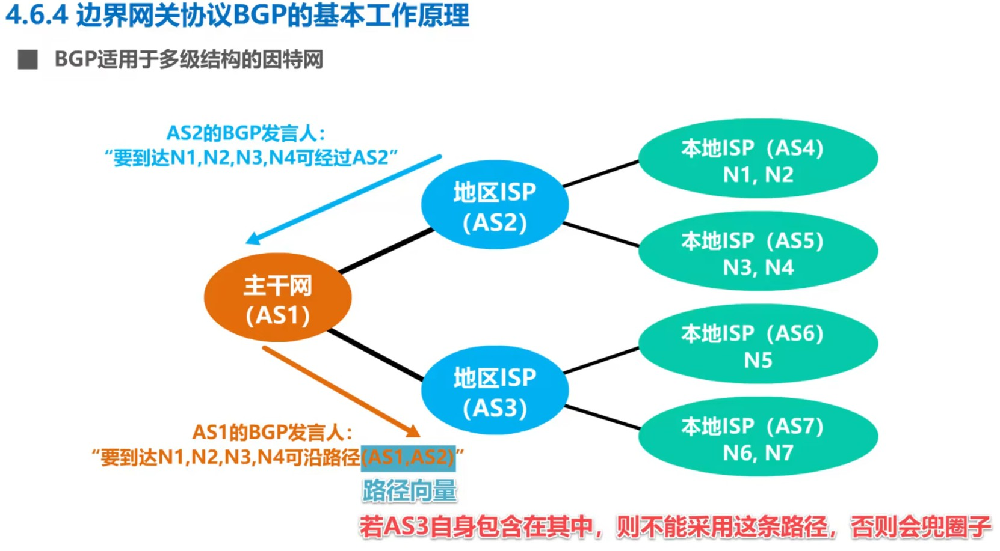
BGP规定的核心报文主要有OPEN、UPDATE、KEEPALIVE与NOTIFICATION四种：
OPEN报文
作用：
协商会话参数：建立BGP对等体关系前，双方通过OPEN报文交换版本号、AS号、保持时间（Hold Time）、BGP标识符（Router ID）等参数。
能力协商：通过可选参数字段（Optional Parameters）协商扩展功能（如多协议支持、路由刷新能力）。
工作流程：
① TCP连接建立：发起方（主动对等体）向接收方（被动对等体）发起TCP连接（目标端口179）。
② 发送OPEN报文：TCP连接建立后，双方发送OPEN报文。报文包含BGP版本号（默认4）、本地AS号、保持时间（默认90秒，双方协商取较小值）、BGP标识符（通常为Router ID，类似OSPF的Router ID）与可选参数（如支持IPv6的 MP_BGP 扩展）等字段。
③ 参数校验：接收方检查OPEN报文，检查内容包括版本号是否一致、AS号是否与预期匹配（如eBGP要求对端AS不同）以及BGP标识符是否合法（非全0或全1）。
④ 状态转换：若参数合法，进入 OpenConfirm 状态，发送KEEPALIVE确认；若校验失败，发送NOTIFICATION并关闭连接。
UPDATE报文
作用：
路由信息通告：向对等体发布新路由（通过NLRI字段）或撤销失效路由（通过Withdrawn Routes字段）。
路径属性传递：携带路由策略关键信息，如AS路径（AS_PATH）、下一跳（NEXT_HOP）、本地优先级（LOCAL_PREF）等。
工作流程：
① 路由生成与发布：当本地路由表变化（如新增或撤销路由），BGP Speaker生成UPDATE报文，包括Withdrawn Routes、Path Attributes以及NLRI（Network Layer Reachability Information）字段，分别表示需撤销的路由前缀、描述路由特性的键值对（如 ORIGIN、AS_PATH）与新增的可达路由前缀。
② 报文发送：在Established状态下，通过TCP连接发送UPDATE报文至对等体。
③ 路由处理：接收方解析UPDATE报文，解析内容包括校验路径属性合法性（如AS_PATH是否形成环路）、应用输入策略（过滤或修改路由属性）以及更新BGP表并决策最优路由（基于属性权重比较）。
④ 错误处理：若UPDATE格式错误（如属性缺失或非法AS_PATH），发送NOTIFICATION终止会话。
KEEPALIVE报文
作用：
维持会话存活：在无UPDATE报文时，周期性发送以确认对等体存活，防止TCP连接因空闲超时断开。
保持时间协商：实际发送间隔为协商后的保持时间的1/3（默认30秒）。
工作流程：
① 定时发送：在Established状态下，若保持时间非零，每 Hold Time/3 秒发送KEEPALIVE。
② 保活机制：若在 Hold Time 内未收到任何报文（UPDATE或KEEPALIVE），视为会话失效，触发NOTIFICATION。
③ 零保持时间处理：若协商的保持时间为0，禁用KEEPALIVE，依赖TCP保活机制维持连接。
NOTIFICATION报文
作用：
错误通知与会话终止：在检测到致命错误时，向对等体发送错误码及子码，随后关闭BGP会话。
错误分类：包括消息头错误、OPEN报文错误、UPDATE报文错误、状态机错误等。
工作流程：
① 错误检测：在会话任一阶段（如OPEN校验失败、UPDATE属性解析错误、保持时间超时）生成NOTIFICATION报文，报文内容包括8位错误码、8位错误子码与错误数据。
② 报文发送：立即发送NOTIFICATION报文，随后关闭TCP连接。
③ 状态重置：双方回到 Idle 状态，需重新发起TCP连接以恢复会话。
BGP比较复杂，如果希望深入了解，请移步RFC 4271文档。
IPv4数据报可被分为首部（Header）与数据载荷（Data Payload）两部分，首部具有较为固定的格式，数据载荷是实际传送的数据内容。
The Internet Protocol (IP) defines standards for several types of datagrams.
IPv4数据报的首部通常以32比特为一个单位进行描述，如下表所示。表中每一行都由32比特（即4字节）组成，每个不可再分的格子称为字段或域。
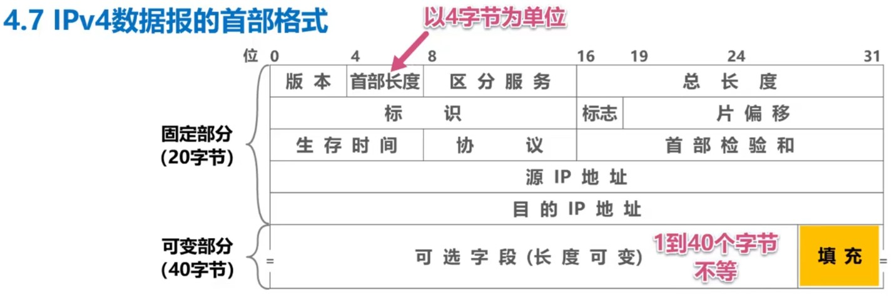
参考RFC 791、RFC 2474与RFC 3168，IP数据报可分为首部与数据载荷两部分，而IPv4数据报的首部又可以再分为固定部分与可变部分。
固定部分占20字节，从前往后字段分别为：
版本 Version，4比特
表示IP协议的版本，通信双方使用的IP协议版本必须一致。当版本为十进制4时表示此数据报为IPv4数据报，当版本为十进制6时表示此数据报为IPv6数据报。
首部长度 IHL（Internet Header Length），4比特
表示IP数据报首部的长度，每一个单位代表4字节。首部长度最小取值为十进制5，即此IPv4数据报只包含固定部分、不包含可变部分，共计20字节；最大取值为十进制15，即此IPv4数据报包含20字节的固定部分与40字节的可变部分。
区分服务 DS Field（Differentiated Services），8比特
在旧标准中被称为服务类型，但并未明确定义。1998年IETF将该字段改称区分服务，以该字段的数值表示提供不同等级的服务质量。当且仅当使用区分服务时该字段有效，绝大多数情况下不适用该字段。
总长度 Total Length，16比特
表示整个IP数据报的总长度，即首部长度加数据载荷长度的和，每一个单位代表1字节。总长度最小取值为十进制20，最大取值为十进制65535，进而可以推导出IP数据报最多占用65535字节、数据载荷最多占用65515字节。
标识 Identification，16比特
标记分片数据报是否属于同一IP数据报，同一IP数据报的各分片数据报应当具有相同的标识。常见的方案是IP软件维护一个计数器，每产生一个数据报就将计数器值递增，同时将递增后的值赋给标识字段。
标识、标志与片偏移三个字段共同用于IP数据报分片（IP Fragmentation）。什么时候需要分片呢？例如，以太网的数据链路层规定MTU为1500字节，如果某个IP数据报总长度MTU，则无法直接封装成帧，需要将原IP数据报分片为若干更短的IP数据报，再将各分片IP数据报封装成帧。
标志 Flags，3比特
标志字段的三个比特分别为DF位（Don't Fragment）、MF位（More Fragments）与保留位。DF位取0表示该IP数据报允许被再次分片，取1表示该IP数据报不允许分片；MF位取0表示该分片为本IP数据报的最后一个分片，取1表示存在该分片的后继分片；保留位必须取0。
片偏移 Fragment Offset，13比特
表示分片数据报的数据载荷部分相较于在原数据报中的位置偏移多少单位，每一个单位代表8字节。
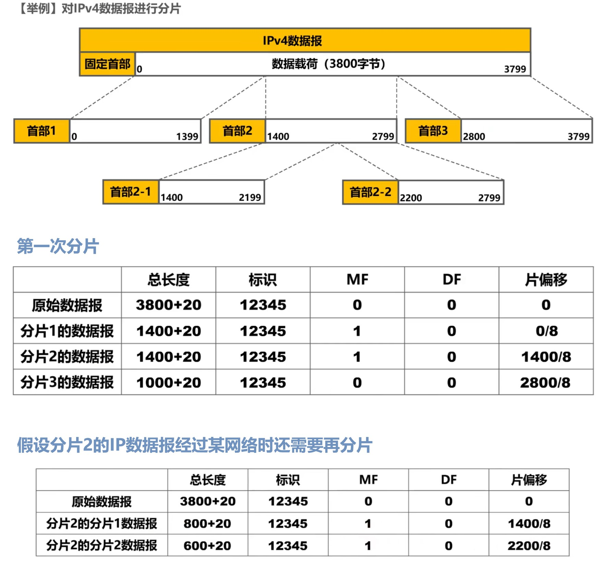
生存时间 TTL（Time to Live），8比特
最初该字段表示IP数据报的剩余生存周期，每一个单位代表1秒，最大为255秒。路由器在转发IP数据报时，首先将该字段的值减去IP数据报在本路由器上处理花费的时间，若差大于0则转发，否则丢弃。
现在该字段以跳数为单位，路由器在转发IP数据报时将该字段减一，如果差不小于0则转发，否则丢弃。
生存时间的设计避免了IP数据报在几个路由器间被不断循环转发。
协议 Protocol，8比特
表示IPv4数据报的数据载荷部分所使用的协议数据单元种类，即上层协议类型。
| 协议名词 | ICMP | IGMP | TCP | UDP | IPv6 | OSPF |
|---|---|---|---|---|---|---|
| 协议字段十进制值 | 1 | 2 | 6 | 17 | 41 | 89 |
首部校验和 Header Checksum，16比特
用于检测首部在传输过程中是否出现了差错。IPv4数据报的检测方式比CRC简单，称为因特网校验和。IPv4数据报没经过一个路由器，路由器都需要重新计算首部校验和，因为首部各字段的值可能发生了变化。
然而在IPv6中路由器已不再计算首部校验和，因为IP本身只提供无连接、尽力而为、不可靠的消息传递服务，同时计算首部校验和是比较耗时的操作，因此没有必要让路由器检验首部是否出现了差错，从而使路由器能够更快地转发IP数据报。
源IP地址 Source Address，32比特
目的IP地址 Destination Address，32比特
可变部分最多占40字节，从前往后字段分别为：
可选字段 Options，长度可变，最多占用40字节
用以支持排错、测量以及安全等措施，长度从1字节到40字节不等。实际上该字段极少被使用，因为会增加每个路由器处理IP数据报的开销。
填充 Padding，小于4字节
该字段内容为重复的比特0，使得无论可选字段的长度是多少，都能保证IP数据报长度尽可能小的前提下首部长度仍为4字节的整数倍。
IPv6数据报由固定首部（40字节）、扩展首部（可选，长度可变）和 有效载荷（上层协议数据）三部分组成，核心设计目标是简化处理、提升效率并支持扩展性，具体结构如下：
一、固定首部（40字节）
IPv6固定首部字段精简为8个，去除了IPv4中冗余字段（如校验和、分片相关字段），并引入流标签等新特性，具体字段如下：
| 字段名（英文） | 长度（比特） | 作用与描述 |
|---|---|---|
| Version（版本） | 4 | 固定为6，标识IPv6协议版本 |
| Traffic Class（流类别） | 8 | 类似IPv4的TOS字段，用于QoS优先级标记（DSCP）和显式拥塞通知（ECN） |
| Flow Label（流标签） | 20 | 标识同一数据流（如视频流），确保路径上的路由器提供一致的服务质量（QoS） |
| Payload Length（有效载荷长度） | 16 | 指示扩展首部与数据的总字节数（不含固定首部），最大65535字节 |
| Next Header（下一首部） | 8 | 标识紧跟的扩展首部类型或上层协议（如TCP=6、UDP=17），形成首部链 |
| Hop Limit（跳数限制） | 8 | 类似IPv4的TTL，每经过一跳减1，为0时丢弃数据报 |
| Source Address（源地址） | 128 | 发送方的IPv6地址（128位） |
| Destination Address（目的地址） | 128 | 接收方的IPv6地址（128位） |
二、扩展首部（可选）
IPv6将IPv4的可选字段剥离为扩展首部，按需添加，形成链式结构。扩展首部类型及作用如下：
| 扩展首部类型 | Next Header值 | 功能 |
|---|---|---|
| 逐跳选项（Hop-by-Hop） | 0 | 路径上的所有路由器必须处理（如巨型载荷支持） |
| 路由（Routing） | 43 | 指定数据包经过的中间节点（类似IPv4的源路由） |
| 分片（Fragment） | 44 | 处理数据报分片（IPv6分片仅由源节点执行） |
| 目的选项（Destination Options） | 60 | 携带仅目的节点处理的选项（如移动IPv6配置） |
| 认证（Authentication Header, AH） | 51 | 提供数据完整性验证与防重放保护（IPsec） |
| 封装安全载荷（ESP） | 50 | 提供加密与认证（IPsec） |
扩展首部顺序规则：需按以下顺序排列以确保处理效率：
IPv6基本首部
逐跳选项
目的选项（需中间节点处理）
路由
分片
认证
封装安全载荷
目的选项（仅目的节点处理）
上层协议数据
若IPv6数据报超过链路MTU，源节点使用分片扩展首部（Next Header=44），包含以下字段：
分片偏移（13位，单位8字节）
MF标志（More Fragments，指示后续分片）
标识符（32位，标记同一原始数据报的分片）
三、有效载荷
包含上层协议数据（如TCP/UDP报文）或ICMPv6消息，最大长度由链路MTU限制。
IPv6的主要优势：
地址空间巨大：128位地址彻底解决IPv4枯竭问题，支持物联网大规模部署。
高效路由：固定首部与扩展首部分离，减少路由器处理开销。
内置安全：通过AH/ESP扩展首部强制支持端到端加密与认证。
流标签支持：优化实时业务（如视频会议）的传输质量。
简化配置：支持无状态地址自动配置（SLAAC），降低管理复杂度。
| 特性 | IPv4 | IPv6 |
|---|---|---|
| 首部长度 | 20字节（固定）+ 可选字段（最多40字节） | 40字节（固定）+ 扩展首部（无长度限制） |
| 地址长度 | 32位（约43亿地址） | 128位（约 |
| 校验和 | 包含首部校验和 | 取消首部校验和，依赖上层协议（如TCP） |
| 分片机制 | 路由器和主机均可分片 | 仅源节点分片（分片通过扩展首部实现） |
| 服务质量（QoS） | 依赖TOS字段 | 新增流标签（Flow Label）支持精细流控 |
| 安全性 | 可选（如IPsec） | 强制支持IPsec（通过AH/ESP扩展首部） |
| 扩展性 | 选项字段限制为40字节 | 扩展首部无限扩展，处理更高效。 |
路由选择协议已经使IP数据报能够在路由器之间被发送与转发了，但为了更有效地转发IP数据报并提高交付成功的机会，TCP/IP体系在网际层还应用了ICMP（Internet Control Message Protocol，网际控制报文协议），使得主机或路由器能够通过ICMP发送差错报告报文与询问报文以实现更高效的IP数据报传送。
CMP报文被封装在IP数据报中传送，根据发送报文的目的不同可以被分为差错报告报文与询问报文两大类。
差错报告报文又包含五种具体的报文，分别是：
终点不可达
当路由器或目的主机不能交付IP数据报时，向源点发送终点不可达报文，通知源点由于一些原因导致报文不可达。根据报文的字段不同，终点不可达报文可以被进一步细分为目的网络不可达、目的主机不可达、目的协议不可达、目的端口不可达、目的网络未知、目的主机未知等共计13种错误情况。
例如源主机A希望向目的主机B间接发送IP数据报，源主机A首先将IP数据报直接发送给路由器R1，但路由器R1的路由表中既没有目的主机B的路由记录，也没有默认路由和目的主机B的特定主机路由R2，于是R1并不知道应该将IP数据报转发至何处，只能丢弃该IP数据报，同时向源主机A发送终点不可达报文通知源主机A。
源点抑制
当路由器或目的主机由于网络拥塞而丢弃IP数据报时，向源点发送源点抑制报文，通知源点应当减缓IP数据报的发送速率。应注意，发送源点抑制报文的对象可以是路由路径上的一个路由器，也可以是目的主机。
时间超过
如果路由器接收到IP数据报后将其TTL字段值减去一的差等于零进而丢弃该IP数据报，向源点发送时间超过报文，通知源点该IP数据报超过了生存周期而未能成功抵达目的主机。
如果目的主机不能在预规定时间内收到一个IP数据报的全部分片而丢弃已接收的分片，向源点发送时间超过报文，通知源点。
参数问题
当路由器或目的主机收到IPv4数据报但根据首部的校验和字段发现IP数据报在传输过程中出现了误码而丢弃该IP数据报，向源点发送参数问题报文，通知源点。
改变路由（重定向）
当路由器转发IP数据报时发现存在更佳路由，向源点发送改变路由报文，通知源点存在更优路径，源点应在自己的路由表中添加相应的路由记录。
ICMP差错报告报文的适用准则：
针对一个差错报告报文不应再发送差错报告报文；
对非首个分片的数据报片不应发送差错报告报文；
对具有多播地址的IP数据报不应发送差错报告报文；
对具有特殊目的地址的IP数据报不应发送差错报告报文，例如 127.0.0.0 与 0.0.0.0。
询问报文则包含两种具体的报文，分别是：
回送请求和回答
回送请求和回答报文的设计目的是用于测试目的站是否可达，并了解其状态。主机或路由器向一个特定的目的主机发出回送请求报文，收到报文的主机必须向源主机或路由器发送回答报文。
时间戳请求和回答
时间戳请求和回答报文的设计目的是用于时钟同步与时间测量。主机或路由器向一个特定的目的主机发出时间戳请求报文，收到报文的主机必须向源主机或路由器发送回送报文，该回送报文包含一个32位字段，该字段值以秒为单位，意味着自1900年1月1日起到当前时刻的时间戳大小。
ICMP最典型的两个应用，一个是PING（Packet Internet Groper，分组网间探测），一个是跟踪路由（Traceroute）。
PING
PING是一种用于测试主机或路由器间连通性的应用层软件，直接使用网际层的ICMP回送请求和回答报文实现连通性测试，未使用到运输层的TCP与UDP。
在主流平台上命令均为 ping ...，但最小化安装的GNU/Linux发行版本可能未预装该命令。
以下为Linux下命令 man ping 返回的部分文档：
xPING(8) iputils PING(8)
NAME ping - send ICMP ECHO_REQUEST to network hosts
SYNOPSIS ping [-aAbBdDfhLnOqrRUvV46] [-c count] [-F flowlabel] [-i interval] [-I interface] [-l preload] [-m mark] [-M pmtudisc_option] [-N nodeinfo_option] [-w deadline] [-W timeout] [-p pattern] [-Q tos] [-s packetsize] [-S sndbuf] [-t ttl] [-T timestamp option] [hop...] {destination}
DESCRIPTION ping uses the ICMP protocol's mandatory ECHO_REQUEST datagram to elicit an ICMP ECHO_RESPONSE from a host or gateway. ECHO_REQUEST datagrams (“pings”) have an IP and ICMP header, followed by a struct timeval and then an arbitrary number of “pad” bytes used to fill out the packet.
ping works with both IPv4 and IPv6. Using only one of them explicitly can be enforced by specifying -4 or -6.
ping can also send IPv6 Node Information Queries (RFC4620). Intermediate hops may not be allowed, because IPv6 source routing was deprecated (RFC5095).用例：
xxxxxxxxxxsaki@ArthurStat:/mnt/c/Users/asheo$ ping arthur-stat.github.ioPING arthur-stat.github.io (185.199.110.153) 56(84) bytes of data.64 bytes from cdn-185-199-110-153.github.com (185.199.110.153): icmp_seq=3 ttl=50 time=136 ms64 bytes from cdn-185-199-110-153.github.com (185.199.110.153): icmp_seq=7 ttl=50 time=137 ms64 bytes from cdn-185-199-110-153.github.com (185.199.110.153): icmp_seq=8 ttl=50 time=147 ms64 bytes from cdn-185-199-110-153.github.com (185.199.110.153): icmp_seq=9 ttl=50 time=141 ms--- arthur-stat.github.io ping statistics ---14 packets transmitted, 8 received, 42.8571% packet loss, time 13315msrtt min/avg/max/mdev = 136.351/151.315/177.311/14.463 ms
saki@ArthurStat:/mnt/c/Users/asheo$ ping google.comPING google.com (46.82.174.69) 56(84) bytes of data.--- google.com ping statistics ---22 packets transmitted, 0 received, 100% packet loss, time 21778ms
saki@ArthurStat:/mnt/c/Users/asheo$ ping www.cqu.edu.cnPING www.cqu.edu.cn (202.202.2.6) 56(84) bytes of data.--- www.cqu.edu.cn ping statistics ---24 packets transmitted, 0 received, 100% packet loss, time 23983ms
saki@ArthurStat:/mnt/c/Users/asheo$ ping www.swu.edu.cnPING www.swu.edu.cn (202.202.96.35) 56(84) bytes of data.--- www.swu.edu.cn ping statistics ---10 packets transmitted, 0 received, 100% packet loss, time 9403mstraceroute
traceroute是一种用于跟踪IP数据报从源主机到达目的主机所经过路由器的应用层软件。
在GNU/Linux中命令为 traceroute ...，可能需要手动安装，在Debian与Ubuntu中使用命令 sudo apt update && sudo apt install traceroute，在CentOS与RHEL中使用命令 sudo yum install traceroute。traceroute 默认基于传输层的UDP协议，在网际层使用ICMP差错报告报文，但也支持ICMP模式，只需要添加参数 -I 即可，此时 traceroute 行为与Windows下的 tracert 基本一致。
在Windows中命令为 tracert ...，直接使用网际层的ICMP回送请求和回答报文以及差错报告报文实现，未使用到运输层的TCP与UDP。
traceroute的实现原理是发送
用例：
xxxxxxxxxxsaki@ArthurStat:/mnt/c/Users/asheo$ traceroute tsingshui.arttraceroute to tsingshui.art (52.76.120.174), 30 hops max, 60 byte packets 1 172.29.224.1 (172.29.224.1) 0.190 ms 0.169 ms 0.292 ms 2 192.168.3.1 (192.168.3.1) 1.859 ms 2.293 ms 1.837 ms 3 Broadcom.Home (192.168.1.1) 5.014 ms 3.980 ms 3.978 ms 4 100.64.88.1 (100.64.88.1) 5.006 ms 7.081 ms 7.078 ms 5 * * 110.190.52.98 (110.190.52.98) 6.380 ms 6 * * * 7 171.208.198.53 (171.208.198.53) 8.187 ms 171.208.196.25 (171.208.196.25) 10.246 ms 171.208.196.37 (171.208.196.37) 13.786 ms 8 202.97.21.173 (202.97.21.173) 32.710 ms 202.97.29.45 (202.97.29.45) 47.176 ms 47.642 ms 9 202.97.93.45 (202.97.93.45) 38.062 ms 202.97.82.22 (202.97.82.22) 40.509 ms 202.97.82.58 (202.97.82.58) 47.145 ms10 202.97.12.25 (202.97.12.25) 41.741 ms 202.97.66.25 (202.97.66.25) 38.026 ms 202.97.12.37 (202.97.12.37) 43.587 ms11 202.97.81.182 (202.97.81.182) 82.600 ms 88.432 ms 202.97.35.134 (202.97.35.134) 83.130 ms12 * * *13 * * *14 * * *15 * * *16 * * *17 * * *18 * * *19 * * *20 * * *21 * * *22 * * *23 * * *24 * * *25 * * *26 * * *27 * * *28 * * *29 * * *30 * * *要实现两个异地专用网络间的通信，一种方法是租用电信公司的通信线路，这种方法虽然简便但成本高昂，另一种方法则是使用VPN技术。
VPN（Virtual Private Network，虚拟专用网）是一种网络架构，用于通过一个或多个不受信任的网络（即不受实施VPN的实体控制）或需要隔离的网络（从而使底层网络不可见或无法直接使用），以虚拟方式扩展私有网络（即任何非公共互联网的计算机网络），也被称为IP隧道技术。VPN可以将私有网络的访问权限扩展到无法直接连接的用户，例如允许员工通过互联网从外部安全地访问办公室网络，这是通过使用网络隧道协议在计算设备和计算机网络之间建立链接来实现的。一言以蔽之：VPN是一种利用公共因特网作为本机构各专用网之间通信载体的网络架构。
通过在不可信的通信媒介（如公共互联网）上选择支持加密的隧道协议，可以使VPN在安全性上得到保障。相较于专用通信线路，这种VPN实施方式具有降低成本和提升灵活性的优势，特别适合远程工作人员。
术语VPN也指代通过VPN隧道协议连接客户、向其销售自有私有网络访问权限的VPN服务，这类服务可帮助用户实现互联网访问。例如，企业员工通过VPN客户端软件连接企业服务器时，所有数据都会在加密通道中传输，确保通信的私密性。
由于IPv4地址的紧缺，导致一个机构能够申请到的IPv4地址数量往往远小于本机构所拥有的主机数量，因此VPN中各主机所分配的地址应是被保留的、本机构可自由分配的专用地址，而非是需要申请的、能够直接在因特网使用的共有地址。正因如此，私有地址只能用于本地地址而不可作为全球地址，因特网中的路由器不会转发目的地址是私有地址的IP数据报，所以两个专有网络间至少需要拥有一个合法全球IP地址的路由器，这样才能利用公用的因特网进行VPN的通信。
VPN 的工作原理取决于其所采用的技术和协议。其核心机制通过隧道协议实现，用于将网络消息从一端传输到另一端。具体流程如下：
隧道传输机制 VPN 的目标是捕获隧道一端应用程序生成的网络消息，并在另一端完整复现这些消息。应用程序无需任何修改即可通过VPN传输消息，因为操作系统会将虚拟网络或链路作为虚拟网络接口提供给应用程序使用。
VPN 与代理的区分 若某个应用程序自行实现了隧道传输或代理功能，但未将这些功能以网络接口的形式开放给操作系统，则此类实现不被视为真正的VPN。尽管这类应用可能实现与远程网络交换私有内容的最终用户目标（例如SSH隧道、HTTP代理），但其技术本质是通过应用层逻辑完成通信，而非在系统层面构建虚拟网络。
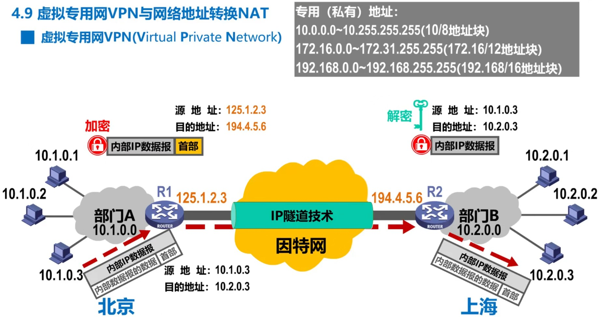
根据VPN所涉及机构的性质不同，VPN可被分为内联网VPN与远程接入VPN。内联网VPN是指同一机构不同部门的内部网络所构成的VPN，外联网VPN是指一个机构的需要借助外部机构参与的VPN。
一个典型的内联网VPN例子：利用VPN，一个专有网络内的主机A向另一个专有网络内的主机B通信，主机A首先将要传送的数据封装为IP数据报，该IP数据报的首部中源地址字段值为主机A在所处专有网络中的IP地址、目的地址字段值为主机B在所处专有网络中的IP地址——由于这些地址均为私有地址，因此不能直接在因特网上发送。主机A会将该IP数据报发给所处专有网络的拥有合法全球IP地址的路由器A，由于目的网络是私有地址，路由器A将该IP数据报整个加密并重新添加首部，封装为在因特网上发送的外部IP数据报，其中新首部源地址字段值为路由器A的全球地址、目的地址字段值为主机B所处专有网络的拥有合法全球IP地址的路由器B。路由器B收到外部IP数据报后，去掉首部并对数据部分进行解密，恢复出原本的IP数据报，再根据原有目的地址将IP数据报发送给主机B。
一个典型的外联网VPN例子：远程接入VPN，如在异地使用VPN访问学校内网的教务系统。
NAT（Network Address Translation）用于进一步缓解IPv4地址短缺的问题，通过将内网私有IP转换为公网IP实现内网设备与互联网的通信。NAT的核心目标是节约公网IP资源，同时隐藏内网拓扑结构以增强安全性。
装有NAT软件且至少拥有一个有效的外部全球IP地址的路由器称为NAT路由器。NAT路由器能够将内网主机的私有IP（如192.168.1.100）和端口转换为公网IP（如203.0.113.1）和随机端口。例如，内网主机A与内网主机B同时访问某一外部服务器时，NAT通过不同的端口号（如14013和21043）区分响应包，确保数据转发正确。
根据NAT映射关系以及转换方式的不同，可以将NAT分为静态NAT、动态NAT与PAT（Port Address Translation，端口地址转换）。PAT在有的场景中也被称为NAPT（Network Address Port Translation）。
静态NAT：一对一地将内网的专用地址与全球地址进行固定映射，每个内网主机独享一个固定地对应的唯一全球地址，由NAT路由器帮助其进行转发。转发的过程参考动态NAT，二者唯一的区别只是内网主机是否固定地独享一个相应的唯一全球地址。
静态NAT的问题在于如果NAT路由器具有
动态NAT：临时分配公网IP池中的地址。动态NAT路由器需要具有以下功能：
发送：内网主机向NAT路由器发送源地址为本机专用地址（私有地址）、目的地址为另一因特网主机全球地址的IP数据报时，NAT路由器应当能够从自己的全球IP地址池中为该主机分配一个临时的全球IP地址，同时将IP数据报的源地址更改为该临时全球IP地址、将该内网主机私有专用地址与临时全球地址的对应关系记录在NAT转换表中，随后向目的地址发送修改源地址后的IP数据报。在目的地址的主机看来，与之通信的是一台具有全球IP地址的主机。
接收：NAT路由器收到来自目的地址为另一因特网主机全球地址的IP数据报时，将在NAT转换表中查找该IP数据报目的地址的临时全球IP地址对应的内网主机的专用地址，如果匹配成功，则将该IP数据报的目的地址更改为内网主机的专用地址，然后发送至内网主机。
动态NAT的问题在于如果NAT路由器具有
PAT（Port Address Translation）：为了解决静态NAT与动态NAT只能支持有限台主机与因特网上主机通信的问题，可以利用运输层的端口号与IP地址一同进行转换，这样一来就可以利用一个全球IP地址来支持多台内网主机同时与因特网上的主机进行通信。这种技术也被称为NAPT（Network Address and Port Translation）。考虑到绝大多数网络应用都使用运输层的TCP或UDP传送数据，因此这种方式是完全可行的。
可以看出，当内网使用了配置了动态NAT或PAT的NAT路由器时，外网主机就不能是主动发起与内网主机通信的一方，因为此时NAT转换表中并不存在内网私有IP与临时公网IP的映射关系，这导致使用私有地址的主机不能直接作为因特网服务器。如果一些网络应用需要外网主机主动向内网主机发起通信请求，则需要NAT穿越（NAT Traversal）技术解决这一问题。NAT穿越也常被形象地称为”内网穿透“。
以下是一些常见内网穿透技术的简要总结：
协议级技术
STUN（Session Traversal Utilities for NAT）
原理：通过公网STUN服务器探测内网设备的NAT类型及映射的公网IP和端口，辅助建立直接通信通道。
适用场景：P2P音视频通话、在线游戏等实时通信场景。
局限性：无法穿透对称型NAT（Symmetric NAT）。
TURN（Traversal Using Relays around NAT）
原理：通过中继服务器转发数据，适用于无法直接穿透的严格NAT环境。
特点：牺牲带宽和延迟换取穿透成功率，常与STUN配合使用。
ICE（Interactive Connectivity Establishment）
原理：综合STUN、TURN和中继服务，动态选择最优连接路径。
应用：WebRTC等实时通信框架的核心技术。
工具级技术
反向代理工具
代表工具 1：Nginx/Apache；通过配置反向代理规则将公网请求转发至内网服务。
代表工具 2：FRP（Fast Reverse Proxy）；开源反向代理工具，支持TCP/UDP/HTTP/HTTPS协议穿透，需公网服务器部署服务端。
优势：支持负载均衡、SSL加密，适合企业级Web服务暴露。
隧道型工具
代表工具 1：Ngrok；通过临时域名映射内网端口，快速实现服务暴露，适合开发测试。
代表工具 2：NPS（内网穿透代理服务器）；支持多协议穿透与Web管理界面，可自定义隧道配置。
特点：依赖中间服务器转发数据，操作简单但可能引入延迟。
虚拟网络工具
代表工具 1：ZeroTier；基于虚拟以太网技术，将设备加入同一虚拟局域网，实现跨NAT直连。
代表工具 2：Tailscale；基于WireGuard协议构建的SDN网络，支持自动NAT穿透和端到端加密。
适用场景：企业异地组网、IoT设备互联。
操作系统与协议内置穿透技术
SSH隧道
原理：利用SSH的端口转发功能（如 ssh -L 或 ssh -R），将本地端口映射到公网服务器端口。
应用：远程访问内网数据库、开发环境调试。
UPnP/NAT-PMP
原理：通过路由器自动配置端口映射规则，无需手动操作。
局限性：需路由器支持且开启UPnP功能，存在安全隐患。
VPN技术
类型：
IPsec VPN：企业级加密隧道，支持分支机构互联。
OpenVPN/WireGuard：开源协议，适合个人或小型团队远程访问内网资源。
优势：高安全性，支持全流量加密。
商业服务与平台
由云服务商构建虚拟专线或代理服务以提供解决方案。
P2P穿透技术
UDP/TCP打洞（Hole Punching）
原理：通过中介服务器交换NAT映射信息，引导两端设备直接建立连接。
适用场景：文件共享、分布式存储等P2P应用。
SIP/WebRTC协议
实现：结合STUN/TURN服务器，实现音视频通话的NAT穿透。
除了按转换方式将NAT分为静态NAT、动态NAT与PAT外，还可以将按限制程度对单个NAT进行严格的分类。
锥型NAT（Cone NAT）
锥型NAT是非对称关系的NAT，根据具体的限制程度又可以被进一步细分为三种子类型：
全锥型NAT（Full Cone NAT）
规则：内部设备通过某个端口访问外部后，任何外部主机均可通过该端口反向通信。
特点：限制最宽松，适合P2P应用（如在线游戏、文件共享）。
示例：若内部主机 192.168.1.2:5000 映射为公网 8.8.8.8:8000，则任何外部主机均可通过 8.8.8.8:8000 主动连接该主机。
受限锥型NAT（Restricted Cone NAT）
规则：仅允许与内部主机通信过的外部IP反向连接，但不限制端口。
示例：若内部主机曾向外部IP 1.1.1.1 发送数据，则 1.1.1.1 的任意端口均可通过 8.8.8.8:8000 访问该主机。
端口受限锥型NAT（Port Restricted Cone NAT）
规则：仅允许与内部主机通信过的外部IP和端口反向连接。
特点：全球约有50%至60%的互联网用户处于该类NAT网络，中国约有60%至70%的互联网用户处于该类NAT网络，因此端口受限锥型NAT是被使用最多的一种NAT。
示例：若内部主机仅向外部IP 1.1.1.1:1111 发送过数据，则仅 1.1.1.1:1111 可反向访问。
对称型NAT（Symmetric NAT）
规则：同一内部主机的不同外部通信会映射到不同的公网端口，且仅允许通信过的外部IP和端口反向连接。
特点：限制最严格，破坏P2P穿透能力。移动蜂窝网络用户普遍处于对称型NAT。
特点：若内部主机 192.168.1.2:5000 先后访问 1.1.1.1:1111 和 2.2.2.2:2222，则分别映射为 8.8.8.8:8000 和 8.8.8.8:8001，且仅允许对应的外部IP和端口反向访问。
有的网络设备或应用采取数字编号简易而通俗地描述NAT限制程度：
NAT1 全开放：设备直接使用公网IP，无NAT转换。
NAT2 中等限制：对应端口受限锥型NAT，允许部分反向通信。
NAT3 严格限制：对应对称型NAT，外部主机进行主动访问十分困难。
NAT4 多层严格限制：多层NAT叠加，常见于大型内网结构共享公网IP。
前文中的”端口“均指设备的物理端口，从本章开始，如无特别指明，”端口“一词均指逻辑端口（或协议端口）.
物理层、数据链路层与网络层共同解决了如何将主机通过异构网络互联的问题，实现了主机到主机的通信。
运输层关注的是如何为运行在不同主机上的应用进程提供直接的通信服务，因此运输层也被称为端到端协议。
一个十分重要的基础知识是TCP/IP体系的运输层使用端口号（Port）区分应用层的不同应用进程。这里存在一个问题，为什么运输层需要端口号呢？我们知道，操作系统使用PID（Process Identifier，进程标识符）标记各个进程。然而，不同的操作系统使用不同格式的PID。因此，运输层作为关注如何实现不同主机上应用进程通信服务的层次，就不能使用PID标识进程，而必须使用一种统一的方法标识TCP/IP体系下的进程——这便是端口号。
TCP/IP体系下的端口号使用16位比特表示，相应的十进制取值范围为0至65535，这些端口号被IANA（Internet Assigned Numbers Authority）划分为了熟知端口号、登记端口号与短暂端口号三类。
熟知端口号：范围为0至1023。这部分端口由IANA强制分配以供TCP/IP体系中最基础、最重要的基础服务使用。这些端口具有全局权威性，普通程序若占用这部分端口很可能会导致系统服务冲突，例如80端口被占用将阻断Web服务器的启动。
一些常见的熟知端口号对应关系：
| 端口 | 协议 | 端口 | 协议 |
|---|---|---|---|
| 21 | FTP | 143 | IMAP |
| 22 | SSH | 23 | Telnet |
| 53 | DNS | 69 | TFTP |
| 80 | HTTP / ws | 161 | SNMP |
| 443 | HTTPS / wss | 67（服务器） 68（客户端） | DHCP |
| 25 | SMTP | 123 | NTP |
| 110 | POP3 | 3389 | Windows RDP |
登记端口号：范围为1024至49151。这部分端口可以由开发者自愿向IANA登记以避免重复使用，但这仅为建议性的意见，实际上存在大量未登记的“默认端口”——毕竟，只要在本地计算机上不存在端口冲突，那么就不会有什么问题。例如，MySQL的端口号默认为3306，但用户可以修改端口为任意合法值。
短暂端口号：范围为49152至65535。这部分端口完全由操作系统动态分配，用于客户端临时通信，例如浏览器访问网页时随机生成的端口。
注意，端口号只在本地具有实际意义。端口号的设计只是为了标识本地计算机应用层中的进程，在因特网中不同计算机的相同端口号之间不存在必然联系。
TCP/IP协议栈的分层原则决定了端口号不会出现在网络层及更底层的层次，其作用范围严格限定在运输层和应用层之间的交互。
UDP（User Datagram Protocol，用户数据报协议）与TCP（Transmission Control Protocol，传输控制协议）是运输层最重要的两个协议。
| UDP | TCP | |
|---|---|---|
| 传输方式 | 全双工 | 全双工 |
| 通信连接 | 无连接：通信双方可以随时发送数据 | 面向连接：“三次握手”建立连接，“四次挥手”释放连接 |
| 网络通信模式 | 支持单播、组播与广播 换言之，支持一对一、一对多与一对全通信 | 仅支持单播 基于TCP连接建立虚拟可靠信道 |
| 面向对象 | 面向应用报文：发送时仅在应用层报文基础上添加UDP首部，对应用层报文既不合并、也不拆分，保留报文边界；接收时逆过程 | 面向字节流：发送时将应用层报文视为无结构的数据流，根据发送策略从发送缓存中每次提取一定数量字节构建TCP报文段并发送；接收时逆过程 |
| 向上提供服务类型 | 向上层提供无连接、不可靠的传输服务 | 向上层提供面向连接的可靠传输服务 |
| 应用场景 | 视频会议、网络游戏、DNS查询等 | 文件传输、电子邮件、数据库访问等 |
UDP报文由首部（Header）与数据载荷（Data Payload）组成，其中首部仅占8字节。各字段从前往后分别为：
源端口（Source Port），2字节
目的端口（Destination Port），2字节
长度（Length），2字节
代表整个UDP报文的大小，即UDP首部加上数据载荷的大小，每单位代表1字节。
校验和（Checksum），2字节
在IPv4中可选，在IPv6中强制实现。在计算校验和时，应当在UDP报文段前添加12字节的伪首部。
UDP不提供可靠传输服务，就功能而言仅为应用层报文添加端口信息，因此UDP的首部构造十分简单。
IPv6为UDP新增了两个重要特性：
校验和字段的强制性：IPv6中UDP校验和是强制的，而IPv4中是可选的，因为是IPv6头部取消了自身的校验和字段，依赖上层协议确保数据完整性。
长度字段的语义扩展：在IPv6支持的超大报文（Jumbogram）场景中，UDP长度字段可能置0，此时实际长度需从IPv6数据报头部中的 Payload Length 字段推导。
TCP报文同样由首部（Header）与数据载荷（Data Payload）组成，其中首部又可进一步在分布与性质上被划分为固定首部与扩展首部。TCP的全部功能均蕴含在其首部各字段的设计中。
TCP的固定首部占20字节，各字段从前往后如下罗列所示，如果字段没有对单位特别说明则默认该字段无度量，仅表示数值。
源端口（Source Port），16比特
目的端口（Destination Port），16比特
序号（Sequence Number，SEQ），32比特
表示TCP报文段数据载荷的第一个字节序号。TCP是面向字节流的，因此数据载荷中的每个字节都具有序号，但只有第一个字节的序号会被记录在首部的序号字段中。
序号的取值范围为
确认号（Acknowledgment Number，ACK），32比特
表示期望收到对方下一个TCP报文段的数据载荷的第一个字节的序号，支持累积确认机制。换言之，若确认号为n，意味着直到序号n-1为止的所有数据均已被正确接收。
典型场景：发送方向接收方发送TCP报文段，其中序号为
数据偏移（Data Offset），4比特
表示TCP报文段的数据载荷部分起点距离整个TCP报文段的起点的偏移距离，每单位代表4字节。
该字段事实上说明了TCP报文段首部的长度，由于首部的固定部分占20字节，因此数据偏移字段的最小值为
保留（Reserved），6比特
未定义的保留字段，目前应当取
紧急标志位（Urgent Flag，URG）
该字段与紧急指针字段共同作用，当紧急标志位取0时紧急指针字段无效，当紧急标志位取1时紧急指针字段有效。
确认标志位（Acknowledgment Flag，ACK），1比特
表示确认号字段是否有效，当确认标志位取0时确认号字段无效，当确认标志位取1时确认号字段有效。
在建立TCP连接后所有被传送的TCP报文段确认标志位均必须取1，
推送标志位（Push Flag，PSH），1比特
当推送标志位取1时表示对方应尽快将TCP报文段上交给应用进程，不必等待接收区缓存填满再向上交付；当取0时表示默认状态。
复位标志位（Reset Flag，RST），1比特
当复位标志位取1时表示强制终止连接而不经过“四次挥手”，典型的应用场景是各类异常连接处理，例如
因TCP连接出现异常而必须释放连接，应用程序可再重新建立连接
拒绝非法报文段，如序列号无效或未建立连接时收到了数据段
拒绝建立TCP连接，如目标端口未监听
当取0时表示默认状态。
同步标志位（Synchronize Flag，SYN），1比特
表示用于初始化连接并同步序列号。在“三次握手”过程中，通信双方通过设置同步标志位来表示建立连接的意图：
第一次握手：客户端发送带有 SYN=1 的报文段，表示希望建立连接。
第二次握手：服务器响应一个同时设置了 SYN=1 和 ACK=1 的报文段，表示同意建立连接并同步序列号。
第三次握手：客户端发送带有 ACK=1 的报文段，确认连接建立。
可见，在正常的连接建立过程中，只有前两个报文段的同步标志位被设置为1。其余的任何情况下本字段值均应当取0，表示默认情况。
终止标志位（Finish Flag，FIN），1比特
当且仅当在释放TCP连接的“四次挥手”中的第一个与第三个“挥手”报文段（客户端发送的第一个报文段与服务器发送的第二个报文段）中取1，否则取0，表示本机将终止连接，除“挥手”报文段外不再向对方发送新的数据。
窗口（Window Size），16比特
表示接收方当前可接收的缓冲区剩余空间，用于TCP流量控制，每单位代表1字节。发送方根据此字段动态调整发送速率，避免数据溢出。若窗口值为0，则发送方将暂停发送，直至收到新的非零窗口通告。
通过“窗口扩大因子”选项（Window Scale）可将窗口值左移0至14位，最大支持
校验和（Checksum），16比特
用于检测算法对整个TCP报文段——包括首部与数据载荷进行差错检测。在计算校验和时，应当在TCP报文段前添加12字节的伪首部。
紧急指针（Urgent Pointer），16比特
表示紧急数据的末尾偏移量，每单位代表1字节，事实上紧急指针字段的值在数值上等于紧急数据的长度：若紧急指针值为
当发送方有紧急数据需要优先处理时，可以将紧急数据插队至发送缓存最前方，同时立刻封装到一个TCP报文段的数据载荷中进行发送。紧急指针字段指出了报文段数据载荷部分紧急数据的长度，在紧急数据以后的剩余数据为普通数据。
对于接收方而言，如果检测到紧急标志位为1，则直接从报文段的数据载荷中取出由紧急指针指定的紧急数据并直接上交应用进程，使紧急数据不必在接收缓存中排队等待。
TCP的扩展首部最多占40字节，长度可变。
选项（Options），最多40字节
选项可以拓展TCP的功能，目前有以下选项可供选择：
最大报文段长度（Maximum Segment Size，MSS）：代表TCP报文段数据载荷部分的最大长度。
窗口扩大因子（Window Scale）：扩大窗口以提高吞吐率。
时间戳选项：
计算RTT
防止序号绕回（PAWS）：处理序号超范围情形
选择确认选项（Selective Acknowledgment，SACK）
填充（Padding），小于4字节
UDP与TCP在计算校验时需要插入12字节的伪首部。伪首部是一个逻辑结构，仅用于计算校验和，不涉及实际传输。
| 字段 | 长度（字节） | 说明 |
|---|---|---|
| 源 IP 地址 | 4 | 发送方的 IPv4 地址 |
| 目的 IP 地址 | 4 | 接收方的 IPv4 地址 |
| 保留字段 | 1 | 取0，未使用 |
| 协议类型（Protocol） | 1 | 标识传输层协议（TCP=6，UDP=17） |
| 传输层报文长度 | 2 | TCP/UDP 报文的总长度（首部 + 数据载荷），以字节为单位 |
流量控制（Flow Control）是TCP向上提供可靠传输的基石之一。如果发送方发送数据过快以至于接收方无法及时处理全部的数据接收，将造成接收方丢弃不完整的数据。因此，需要一种方法动态调整发送方和接收方的窗口大小，确保数据传输速率与接收端处理能力匹配，避免网络拥塞或数据丢失。
TCP利用滑动窗口协议（Sliding Window Protocol）在TCP连接上实现流量控制。滑动窗口协议的核心要素包括：
发送窗口（Send Window）：表示发送方当前可连续发送且未被确认的数据范围，其大小由接收窗口大小与拥塞窗口大小共同决定，具体而言取两者间的最小值。发送窗口由起始位置（Receive Base）和窗口大小（Receive Window Size）两个参数所定义。
接收窗口（Receive Window）：表示接收方可接收的数据范围，同样由起始位置和窗口大小两个参数所定义。
窗口滑动：通过确认机制（ACK）推动窗口向前移动，释放已确认数据的空间，允许新数据的发送。
滑动窗口的工作原理：
初始化
发送方初始发送窗口起始位置为0，初始发送窗口大小由接收方通告的缓冲区容量决定（如初始值可能为MSS*N）。
接收方初始接收窗口起始位置为0，初始接收窗口大小取决于当前缓冲区空闲容量。
数据发送与确认
发送方将窗口内的数据按序发送至接收方，同时缓存已发送但未确认的数据。
接收方按序接收数据并存入缓冲区，若数据连续则移动接收窗口并发送ACK，ACK中包含当前接收窗口大小，并且支持累积确认。
窗口滑动
发送方收到ACK后，将发送窗口起始位置移至最新确认的序号，释放已确认数据的空间，继续发送新数据。
接收方处理数据后，窗口向前滑动，动态更新接收窗口大小并反馈给发送方。
零窗口处理
若接收方缓冲区满（接收窗口为0），发送方暂停发送并启动零窗口探测（Zero Window Probe），启动持续计时器。发送方（每当持续计时器超时）周期性发送1字节探测包，直至接收方窗口恢复。
流量控制与拥塞控制是相协作的，具体表现在：
流量控制由接收窗口（rwnd）主导，防止接收方缓冲区溢出。
拥塞控制由拥塞窗口（cwnd）主导，避免网络链路过载，最终发送窗口大小取
拥塞控制（Congestion Control）同样是TCP向上提供可靠传输的基石之一。如果某段时间内对网络中某一资源（例如链路带宽、交换结点缓存与处理机等）的需求超出了该资源所能提供的能力，网络的性能将变差，这种情况正是拥塞（Congestion）。若出现拥塞现象却不加控制，整个网络的吞吐量将随着输入负荷增大而下降。
TCP拥塞控制通过四种拥塞控制算法实现，分别为慢开始（Slow-Start）、拥塞避免（Congestion Avoidance）、快重传（Fast Retransmit）与快恢复（Fast Recovery）。其中，慢开始与拥塞避免是1988年最初提出的算法，合称为TCP Tahoe；快重传与快恢复是1990年针对Tahoe的改进算法，与原有的慢开始和拥塞避免结合后，形成了TCP Reno。注：TCP Reno包含全部四种算法，而TCP Tahoe仅包含前两种。
在TCP Tahoe中，发送方维护拥塞窗口的状态变量 cwnd 表示当前允许发送但未被确认的数据量，我们可以简单地将其视为拥塞窗口的尺寸。该变量的值取决于网络的拥塞程度并且动态变化,，通常以字节或最大报文段（MSS）数量作为单位。
拥塞窗口的维护原则：如果没有出现网络拥塞，则拥塞窗口应该尽可能大；如果出现了网络拥塞，则拥塞窗口应该减小。
判断网络拥塞的依据：发生超时重传，即发送方未及时收到确认报文。
在慢开始与拥塞避免中，发送方将拥塞窗口作为作为发送窗口，若记表示发送端实际可发送数据的窗口大小的发送窗口状态变量为 swnd，则等同于令 swnd = cwnd。与此同时，维护一个慢开始门限状态变量 ssthresh 作为 cwnd 的软上限，规则如下：
当 cwnd < ssthresh，采用慢开始算法；
当 cwnd = ssthresh，采用慢开始算法或拥塞避免算法；
当 cwnd > ssthresh，采用用拥塞避免算法。
TCP Tahoe支持累积确认、捎带确认与延迟确认，并且ACK内携带的编号是针对接收方当前期望接收的报文段编号，而非刚才接收的报文段编号。
累积确认：接收方通过ACK报文中的确认号通知发送方已该序号之前的所有字节已被正确接收。但TCP Tahoe不支持选择性确认而仅支持累积确认，这导致了某些情况下重传效率低下，例如单个丢包触发整个窗口重传。
捎带确认：发送方无需主动发送纯ACK报文。当接收方需要发送数据时，可以将ACK信息附加在数据报文的首部。
延迟确认：接收方可能延迟发送ACK（但延迟通常小于200ms），等待更多数据到达后合并确认。这减少了网络中的ACK报文数量。
慢开始（Slow-Start）
慢开始算法用于连接初始阶段或网络拥塞恢复后逐步探测网络可用带宽，避免因突然发送大量数据导致网络过载。慢开始算法的特点是 cwnd 在达到阈值前以指数级的增长速度快速逼近网络可用带宽。
慢开始算法机制：
初始状态：连接建立或超时重传后，拥塞窗口 cwnd 初始值通常为1个最大报文段（MSS）。
指数增长：每收到一个属于新数据的ACK，拥塞窗口就在原有尺寸上倍增MSS范围。这样，在 cwnd 达到 ssthresh 以前，每次发送时 cwnd 以指数速度增长。
例如初始时 cwnd=1、传输轮次为 cwnd < ssthresh，则当传输轮次为
终止条件 1，阈值限制：当 cwnd 达到阈值 ssthresh 时，转为拥塞避免阶段，执行拥塞避免算法。如果未设置初始阈值，默认值可能为接收窗口最大值或网络经验值。
终止条件 2：当检测到丢包（包括超时或重复ACK）时重新调整阈值并重启慢开始算法流程。
拥塞避免（Congestion Avoidance）
拥塞避免算法用于网络接近拥塞时以更保守的方式增加发送速率，避免突发流量导致丢包。拥塞避免算法的特点是 cwnd 以线性级的增长速度试探网络拥塞。值得指出的是，拥塞避免算法不能避免拥塞，只是使网络不那么容易出现拥塞。
拥塞避免算法机制：
触发条件：当 cwnd 达到或超过 ssthresh 时启动拥塞避免算法。
线性增长：每收到一个属于新数据的ACK，cwnd 增加1个MSS，直到重传计时器超时，触发重传。
终止条件：重传计时器超时意味着网络可能出现拥塞，此时
将 ssthresh 的值更新为发生拥塞时 cwnd 值的一半；
将 cwnd 的值重置为1，重新执行慢开始算法。
TCP Reno的提出是因为TCP Tahoe存在一些显著的固有缺陷。例如，个别报文段在网络中传送时丢失，比如可能出现了误码而被路由器丢弃，这并不意味着网络一定发生了拥塞。但在TCP Tahoe的框架下，发送方将认为此时网络发生拥塞，在超时重传的同时将 cwnd 设置为1并重新执行慢开始算法。显然，在不存在网络拥塞的情况下这将大大降低传输效率。
TCP Reno的快重传与快恢复能够解决这一问题。值得指出的是，TCP Reno依然完全支持累积确认、捎带确认与延迟确认。
快重传（Fast Retransmit）
快重传算法通过快速检测丢包并使发送方尽快重传，以减少因等待超时而导致的延迟。TCP Reno要求接收方不能再当自己主动发送ACK以外的数据时才捎带向发送方确认，而是需要在收到报文段后立即发送确认，即使收到的报文段失序也应当立即发送对已收到报文段的重复确认（注：部分报文段缺失将导致后续收到的报文段失序）。
快重传算法的核心机制相较于慢开始算法主要增添了新的终止条件及后续行为：
丢包判定：除了触发超时重传以外，当发送方连续收到3个重复ACK（Dup-ACK）时也认为该ACK对应的报文段已丢失，随即立刻重传并执行快恢复算法，而不是等待重传计时器超时并启动慢开始算法。
例如发送方发送了四份编号分别为0、1、2、3的报文段，0号报文段传送成功，接收方向发送方发送期望接收1号报文段的ACK（ACK=1）；1号报文段传送失败，接收方不发送ACK；2号报文段传送成功，但由于未顺利收到1号报文段，因此接收方仍向发送期望接收1号报文段的ACK；3号报文段传送成功后同理，接收方向发送方发送期望接收1号报文段的ACK。这时，接收方收到了三个重复的针对1号报文段的ACK，触发快重传。
立即重传：无需等待超时计时器到期，立即重传丢失的报文段。
快恢复（Fast Recovery）
快恢复算法在快重传后优化拥塞窗口调整策略，避免网络吞吐量骤降。
快恢复算法有不同的实现，但都是在发送方连续收到3个重复ACK时触发的。触发后，有的实现中发送方会将 ssthresh 与 cwnd 均调整为当前值的一半再执行拥塞避免算法；也有的实现中会在前者的基础上首先会令 cwnd = ssthresh + 3，这样设计的理由是既然发送方发送了3个重复ACK，意味着已经有三个报文段停留在接收方的接收缓存中，只不过由于缺失了前驱报文段而暂时未交付上层，因此可以适当扩大拥塞窗口。这些是比较主流的实现。
RFC建议将 ssthresh 均调整为
补充，引用自【计算机网络】TCP可靠传输的原理 - CSDN：
5.3 主动队列管理考虑网络层的策略对拥塞控制的影响。其中影响最大的就是路由器的分组丢弃策略。理想情况下路由器的队列通常按照先进先出（FIFO）规则处理到来的分组；当队列已满时，就丢弃后续到达的分组，称之为"尾部丢弃策略"。路由器的尾部丢弃往往会导致一系列分组的丢失，并使得TCP连接的发送方出现超时重传，突然把传输速率降低到很小。由于网络中有很多的TCP连接， 因此可能导致许多连接同时出现超时重传并降低传输速率，称之为"全局同步"。全局同步使得网络中的数据量突然降低到很小的水平。
为了避免发生网络中的全局同步现象，提出了主动队列管理（AQM，Active Queue Management）。不是在队列已满的时候才丢弃分组，而是在队列长度到达某个值时就开始丢弃分组。AQM的一种实现是随机早期检测（Random Early Detection），或者随机早期丢弃（Random Early Drop）。实现RED需要使路由器维持两个参数，即队列最小长度门限和最大长度门限。当分组到达时，如果平均队列长度小于最小长度门限，就把分组加入队列；如果平均队列长度超过最小长度门限，小于最大长度门限，则以随机概率p丢弃分组； 平均队列长度超过最大长度门限，则丢弃分组。因此RED是在监测到网络拥塞的早期征兆时就采取措施丢弃分组来避免拥塞。但由于随机概率p不易选择，RED的效果也不太理想，因此RED已经不再推荐使用，但替代算法还处于实验阶段。
超时重传时间（RTO，Retransmission Timeout）的选择是TCP实现中十分复杂的一个问题。理论上，RTO应被设置为略大于报文段的往返时间（RTT），由于我们无法预知下一个报文段实际的往返时间，因此只能对RTT进行估计。考虑到在实际情况中即使不同的报文段都经过相同路由，考虑到TCP下层复杂的互联网环境，报文段可能只经历一个高速率局域网、也可能经历若干低速率网络，更何况不同报文段很可能会经过不同的路由，这些种种因素导致为RTO一劳永逸地设置的最佳静态理论值的想法是不现实的。
综上所述，我们不能简单地采用某几次的测量得到的RTT样本静态地设置RTO，而一个比较合理的方案是利用滑动平均动态地计算RTO。记第
不难观察到，若
动态估计RTT后，可以基于此进一步动态计算RTO。RFC 6298建议使用以下公式计算RTO：
其中
RFC 6298推荐取
如果出现超时重传，由于ACK可能是对原始包或重传包的确认、导致RTT测量歧义，因此难以得到正确的
下图是两种由于超时重传时导致RTO计算出现误差的情况如：
为解决这一问题，Karn提出了Karn算法，该算法在RFC 6298中被确定为建议标准：一旦报文段重传，则
忽略重传包的RTT测量：不更新
指数退避：每次重传后，将RTO数值翻倍
成功传输后恢复：当非重传包被确认后，恢复原有RTO计算
最初的Karn算法并不包括第二点。修订后的Karn算法之所以补充了第二点，是因为如果不补充第二点，假如报文段的时延突然大幅增加且之后很长一段时间内时延居高不下，则在原本计算的重传时间内不会收到任何ACK，于是触发超时重传。然而，最初的Karn算法并未考虑重传报文段的往返时间，致使重传时间不会更新，这直接导致报文段被反复重传。
下图是一个RTO的计算示例：
TCP超时重传时间的选择与TCP拥塞控制存在着一定的关系：
超时重传触发拥塞控制：
当RTO超时，TCP判定网络拥塞，进入慢启动。
拥塞窗口 cwnd 重置为1个最大报文段（MSS）。
对比快重传： 快重传基于重复ACK触发，不依赖RTO，更快恢复传输。
具体实现中常见的一些小细节：
初始RTO：RFC 6298建议设置初始RTO值为1秒，但在实际实现中可能更小，例如Linux默认该值为200ms。
动态调整示例：
场景1：网络稳定，RTT波动小 → RTO保持较低值
场景2：网络拥塞，RTT波动大 → RTO自动增大，减少重传频率
简约概况：TCP使用连续ARP——一种简单的滑动窗口协议实现可靠传输，特征包括流水线传输、滑动窗口协议、累积确认与回退N重传。当然，可靠传输的实现也离不开流量控制与拥塞控制等。
一、可靠传输的工作原理由于计算机网络是分层的，TCP发送的报文段是交给网络层的IP协议处理的。但是IP只能提供"最大努力服务"，也就是说下层的网络提供的是不可靠传输，因此TCP必须采取一些措施保证可靠传输。
当传输过程中分组出现差错（检验和）时，应当让发送方重新传送分组；当网络状况不好或者接收方来不及接收分组时，应当适当降低发送速率（流量控制和拥塞控制）。
1.1 停止等待协议
简单的停止等待协议，即发送方每发送一个分组就等待确认，收到接收方的确认后在发送下一个分组。
当传输的分组出现差错，接收方就丢弃这个分组。或者分组在传输过程中丢失了，接收方同样丢弃这个分组。发送方在每发送一个分组时需要设置一个超时计时器。如果经过一段时间还没有收到确认，发送方就认为分组丢失了，于是自动重传分组。如果在超时时间收到了确认，那么就撤销计时器。
发送方在发送分组后，必须要保留分组的副本（便于重传）；以及必须对分组进行编号，这样才能明确发送的是哪一个分组，确认又是对哪个分组的确认。
如果传输的分组是正确的，接收方就向发送方发送确认。如果确认在传输过程中丢失了，或者迟到了，这时由于发送方没有在超时时间内收到确认，会进行重传。接收方在收到重复的分组需要采取的行动，丢弃分组但需要"重传确认"。而如果确认在超时时间后到达了发送方，也就是确认迟到了，那么发送方就可能收到多个确认，这时发送方就简单的丢弃重复的确认。
从发送方和接收方分别观察一下。发送方执行的动作：收到确认时发送下一个分组、超时重传分组、收到重复确认就简单丢弃。接收方执行的动作：接收分组错误就简单丢弃、接收分组正确并发送确认、收到重复分组就丢弃分组但发送确认。
通常发送方总是可以收到对所有分组的确认。如果发送方迟迟收不到确认，那就说明通信链路出现了问题。 上述的传输机制也称为自动重传请求（ARQ, Automatic Repeat reQuest)。发送方自动重传分组，而不需要接收方请求重传。
停止等待协议的优点是简单，但缺点是信道利用率太低。假定发送方发送分组的时间为Ts，接收方发送确认的时间为Tr，一个分组的往返时间为RTT。那么信道利用率为Ts/(Ts+RTT+Tr)。
为了提高效率，发送方可以采用流水线方式连续发送分组，这样就可以提高信道利用率。
1.2 连续ARQ协议
简单的滑动窗口协议。发送方维持一个发送窗口，发送窗口里的分组可以连续发送出去，而不需要等待确认。
每收到一个确认时，就将发送窗口向前移动。而接收方一般采用累积确认的方式，不必对每个分组都发送确认，而是对按序到达的最后一个分组发送确认，这样就表示这个分组和之前的分组已经全部收到了。累积确认的优点是容易实现，减少了接收方发送确认的数量。但缺点是不能正确反映已经收到的所有分组的信息。如果接受方按序收到1，2，4，5四个分组，那么只能对2进行确认。发送方不知道后面三个分组的下落，只好重传，也就是Go-back-N，需要回退回来重传这N个分组。当通信线路不好时，连续ARQ协议会带来负面效果，使传输效率降低。
……
三、TCP可靠传输的实现3.1 以字节为单位的滑动窗口
TCP的滑动窗口是以字节为单位的。包括发送窗口和接收窗口。
发送窗口表示，在没有收到确认的情况下，窗口内的序号可以连续发送；在收到确认之前，所有数据都应保留副本以备重传。
发送窗口越大，发送方就可以连续发送更多的数据，就可能获得更高的传输效率。但是发送窗口大小不能超过接收方在确认报文中返回的接收窗口的大小（超过了接收方的接受能力），也不能超过拥塞窗口的大小（超过了网络的承受能力）。
发送窗口由前沿和后沿的位置共同确定。后沿的后面部分表示已发送并且已收到确认。前沿的前面部分是不允许发送的数据。后沿的变化有两种情况，即不动和前移，收到确认前不动，收到确认时前移；后沿是不可能后移的。而前沿的变化通常是不断向前移动，但也有可能不动。不动的情形包括两种情况，即没有收到确认，或者收到确认但是接收方返回的窗口变小了。前沿也可能向后收缩，但是TCP标准不建议这样做。
描述一个发送窗口的状态需要三个指针，即P1,P2,P3。小于P1的部分表示已经发送且已经确认，P1~P2之间的部分表示已经发送还未收到确认，P2~p3的部分表示允许发送但还没有发送，大于P3的部分表示不允许发送。
再来看接收窗口。接收窗口内的序号都允许接收，按序接收、发送确认并交付主机后，就可以丢弃数据。
只有按序接收数据、确认并交付主机后，接收窗口才可以向前滑动。如果不是按序收到的数据，只能先暂存在窗口中。
如果发送方在一段时间内没有收到确认，那么就要对这些数据进行重传，重设超时计时器。直到收到确认为止。
发送缓存和接收缓存
TCP除了发送窗口和接收窗口，还有发送缓存和接收缓存。发送方的应用进程把字节流写入TCP的发送缓存，接收方的应用进程从TCP的接收缓存中读取字节流。
发送缓存用来存放：发送应用程序传送给TCP准备发送的数据；已经发送但是还未收到确认的数据。接收缓存用来存放：按序到达的但未被应用程序读取的数据；未按序到达的数据。
如果收到的分组有差错，接收方就会丢弃分组。如果接收应用程序来不及读取数据，接收缓存就会被填满，使窗口减小到0；如果接收应用程序能及时从接收缓存中读取数据，接收窗口就可以增大。但最大不能超过接收缓存的大小。
虽然发送窗口是根据接收方的接收窗口设置的，但是同一时刻两个窗口大小并不总是一样大，因为通过网络传送窗口只需要一定的时间滞后。此外，发送方还可能根据网络拥塞情况调整窗口大小。
对于不按序到达的数据，TCP并无明确规定。如果接收方直接丢弃，那么对网络的利用不利。因此TCP通常会临时存储不按序到达的数据，等到缺少的字节收到后，再按序交付上层应用程序。
TCP要求接收方必须有累计确认功能。接收方不应过度推迟确认，TCP规定确认推迟的时间不超过0.5秒。如果收到一连串具有最大长度的报文段，那么必须每隔一个报文段就发送一个确认。
3.2 超时重传时间的选择
发送方发送分组后会设置超时计时器，超过时间则会进行重传。超时重传时间（RTO，Retransmission Time-Out）如果取得过大，则会降低传输效率；取得过小则会引起不必要的重传。TCP采用自适应算法来动态的更新超时重传时间，即根据当前网络的状况不断修正超时重传时间。一个报文段从发出到收到确认所经历的时间，就是报文段的往返时间RTT。TCP保留了加权平均往返时间RTTs和加权平均往返时间偏差RTTd。第一次测量到RTT时，RTTs就取测量到的RTT样本；此后RTTs的值根据公式更新：
TCP建议的α=1/8=0.125。用这种方法得到的加权平均往返时间就更加平滑。
超时计时器的超时重传时间应该略大于上面的RTTs。因此用这个公式来计算RTO：
当第一次测量时，RTTd=1/2*RTT。后续RTTd的值根据公式更新：
TCP建议的β=1/8=0.125。
对于往返时间的测量，正常情况下可以通过首部选项中的时间戳来完成。但如果发生了超时重传，那么如何确定接收方发来的确认是对原报文的确认，还是对重传报文的确认。由于发送方无法判断，因此计算的RTTs值可能出错。
根据Karn提出的算法，计算加权平均往返时间RTTs时，如果出现了超时重传，那么就不计算往返时间。这样计算的往返时间就比较准确。但在超时重传情况下，如果网络确实变差了，那么超时重传时间实际上应该提高（多留一些时间用来接收确认）。因此修正Karn算法，在每次重传时，将超时重传时间设置为2倍大小。当不再发生超时重传时，再根据上述公式重新计算。
3.3 选择确认SACK
选择确认可以通过TCP首部的选项控制。当收到的报文无差错，只是未按序到达时，可以通过选择确认通知发送方不必发送这些重复数据。
如图，由于接收的字节块不连续，使用选择确认来通知发送方。这时需要标记不连续字节块的边界，即字节块的左边界序号和右边界序号。
要使用选择确认，需要在建立TCP连接时，在选项字段加上允许SACK的选项。由于首部选项长度最大40字节，而指明一个边界就需要4字节。指明使用选择确认还需要两个字节，一个字节说明是SACK选项，另一个字节说明SACK占用多少字节。因此一个TCP报文段使用选择确认最多报告四个不连续字节块的信息。
以上内容引用自博文【计算机网络】TCP可靠传输的原理 - CSDN的一部分，作者程序员小辰。我希望这篇佳作能够被正常分享——作为一篇公开文章，想必这也是作者的本意。但鉴于CSDN过于不要脸，违背创作者意愿、恶心作者也恶心读者，不好讲哪天就偷偷把文章自动设为必须开通VIP才能阅读，因此我保存了该页面的快照。若刚才的连接所指向的博客文章不再可用，可以阅读我所保存的快照：【计算机网络】TCP可靠传输的原理 - 网页快照。
这部分内容就是大名鼎鼎的“三次握手（Three-way Handshake）”与“四次挥手（Four-way Handshake）”了，在其间的是“数据传送”。
在建立连接的过程中，客户端与服务器共有 CLOSED、LISTEN、SYN-SENT、SYN-RECEIVED 以及 ESTABLISHED 五种状态。
| 状态 | 含义 | 触发场景 |
|---|---|---|
CLOSED | 初始状态或连接终止后的状态，表示当前无任何TCP连接 | 服务未启动或双方均完成连接释放后进入此状态 |
LISTEN | 服务器端状态，表示正在监听指定端口，等待客户端发起连接请求 | 服务器调用 listen() 函数后进入此状态，例如Web服务监听80端口 |
SYN-SENT | 客户端发送SYN报文后的等待状态，表示已主动发起连接请求 | 客户端调用 connect() 函数发送SYN包后进入此状态，等待服务器响应 |
SYN-RECEIVED | 服务器收到客户端SYN报文后的中间状态，表示已响应SYN+ACK并等待最终确认 | 服务器收到SYN包后发送SYN+ACK，进入此状态等待客户端的ACK报文 |
ESTABLISHED | 连接已成功建立，双方可正常收发数据 | 双方完成三次握手后均进入此状态 |
在释放连接的过程中，客户端与服务器共有 ESTABLISHED、FIN_WAIT_1、FIN_WAIT_2、CLOSE_WAIT、TIME_WAIT、LAST_ACK 以及 CLOSED 七种状态。
| 状态 | 含义 | 触发场景 |
|---|---|---|
ESTABLISHED | 连接已建立的稳定状态，释放流程的起点 | 双方数据传输阶段结束后开始释放连接时的初始状态 |
FIN_WAIT_1 | 主动关闭方（如客户端）发送FIN报文后的等待状态，等待对方ACK确认 | 主动关闭方调用 close() 发送FIN包后进入此状态 |
FIN_WAIT_2 | 主动关闭方收到对方ACK后的等待状态，等待对方发送FIN报文 | 主动关闭方收到被动关闭方的ACK后进入此状态，此时本方已停止发送数据 |
CLOSE_WAIT | 被动关闭方（如服务器）收到FIN报文后的状态，表示对方已关闭发送通道，但本方仍可发送数据 | 被动关闭方收到FIN后发送ACK，并等待应用层处理剩余数据后发送FIN |
TIME_WAIT | 主动关闭方发送最终ACK后的等待状态，确保对方收到ACK并处理延迟报文 | 主动关闭方发送ACK后等待2MSL（最长报文段生存时间，默认120秒）再彻底关闭连接 |
LAST_ACK | 被动关闭方发送FIN报文后的最终等待状态，等待对方ACK确认 | 被动关闭方处理完数据后发送FIN，进入此状态等待最终ACK |
CLOSED | 连接完全终止，资源已释放 | 双方完成四次挥手后均进入此状态 |
第一次握手（SYN发送）
动作：客户端创建传输控制块并发送一个SYN报文段（SYN=1），包含随机生成的初始序列号（seq=x），进入 SYN-SENT 状态。
细节：
SYN标志位：置1表示请求建立连接。
序列号：seq=x，用于标识客户端进程数据流的起始位置；初始序列号随机生成，防止历史连接干扰。。
无数据载荷：SYN报文不携带数据，但消耗一个序列号（后续数据从 x+1 开始）。
服务器状态：服务器被动进入 LISTEN 状态，创建传输控制块并持续监听，等待SYN报文连接请求。
传输控制块包含TCP连接表、指向发送与接收缓存的指针、指向重传队列的指针、当前的发送与接收序号等。
第二次握手（SYN-ACK响应）
动作：服务器返回SYN-ACK报文段（SYN=1, ACK=1），包含自己的初始序列号（seq=y）和对客户端序列号的确认号（ack=x+1），进入 SYN-RECEIVED 状态。
细节：
ACK确认标志位：置1表示ack确认号字段有效。
ack确认号：ack=x+1 表示已正确接收客户端的SYN请求，期望下次收到 x+1 起始的数据。
SYN标志位：置1表示服务器也发起连接请求。
序列号：seq=y，用于标识服务器进程数据流的起始位置。
参数协商：报文可携带MSS（最大报文段长度）、窗口扩大因子等选项。
无数据载荷：同样消耗一个序列号（后续数据从 y+1 开始）。
第三次握手（ACK确认）
动作：客户端发送 ACK报文段（ACK=1），确认号设为 ack=y+1，序列号设为 seq=x+1，进入 ESTABLISHED 状态。服务器收到后也进入 ESTABLISHED 状态，连接正式建立。
细节：
ACK确认标志位：置1表示ack确认号字段有效。
ack确认号：ack=y+1 表示已接收服务器的SYN报文。
序列号：seq=x+1，因第一次握手消耗了 x 的序列号。
可携带数据：第三次握手可携带应用层数据，例如HTTP请求报文。
ACK确认若携带数据则额外消耗序号，若不携带数据则不额外消耗序号。相对的，SYN发送与SYN-ACK响应则不被允许携带数据。
状态机管理：
客户端状态：CLOSED → SYN-SENT → ESTABLISHED
服务器状态：LISTEN → SYN-RECEIVED → ESTABLISHED
三次握手的必要性：
防止历史连接：若客户端发送的旧SYN报文因网络延迟到达，服务器会响应SYN-ACK，客户端通过序列号比对发现异常后发送RST终止无效连接。
同步初始序列号：三次握手确保双方序列号被正确确认，避免数据错乱。
避免资源浪费：两次握手可能导致服务器维护大量半连接（SYN-RECEIVED状态），造成资源耗尽（如SYN泛洪攻击）。
安全与性能优化：
SYN泛洪攻击防御：服务器限制半连接队列长度，启用SYN Cookie机制（不保存状态，通过哈希验证请求合法性）。
快速重传与超时：若第三次握手ACK丢失，服务器超时后重传SYN-ACK，客户端根据状态自动处理。
第一次挥手（FIN发送）
动作：主动关闭方（如客户端）发送FIN报文段（FIN=1），携带序列号 seq=u（u 为已发送数据的最后一个字节序号+1），进入 FIN_WAIT_1 状态。
细节：
ACK确认标志位：置1表示ack确认号字段有效。
ack确认号：ack=v，对已接收的报文段进行确认。
FIN标志位：置1表示主动关闭连接。
序列号：seq=u，FIN报文即使不携带数据也消耗一个序列号，因此 u 等于TCP进程此前已传送过数据的最后一个字节的序号加1。
数据限制：发送FIN后，主动关闭方不再发送数据，但仍可接收对方数据。
第二次挥手（ACK确认）
动作：被动关闭方（如服务器）收到FIN后，返回ACK报文段（ACK=1），确认号 ack=u+1，携带自身序列号 seq=v（v 为已发送数据的最后一个字节序号+1），进入 CLOSE_WAIT 状态。
细节：
ACK确认标志位：置1表示ack确认号字段有效。
ack确认号：ack=u+1 表示已正确接收FIN请求。
序列号：seq=v，与第一次挥手中的ack确认号相匹配。
半关闭状态：此时主动方到被动方的连接已关闭，但被动方仍可向主动方发送剩余数据。
第三次挥手（被动方FIN发送）
动作：被动关闭方数据发送完毕后，发送FIN报文段（FIN=1, ACK=1），序列号 seq=w（w 为后续发送数据的最后一个字节序号+1），确认号ack=u+1，进入 LAST_ACK 状态。
细节：
ACK确认标志位：置1表示ack确认号字段有效。
ack确认号：ack=u+1，对已接收的报文段进行确认。
FIN标志位：置1表示主动关闭连接。
序列号：seq=w，注意在半关闭状态下被动关闭方可能又发送了一些数据，这是被允许的。
资源释放准备：被动方通知应用进程彻底关闭连接，停止数据发送。
第四次挥手（最终ACK确认）
动作：主动关闭方收到FIN后，发送ACK报文段（ACK=1），确认号 ack=w+1，序列号 seq=u+1，进入 TIME_WAIT 状态。等待2倍MSL（最长报文段寿命，RFC 793建议一单位MSL设置为120秒，根据具体情况可以设置更小的值）等待期后关闭连接。被动方收到ACK后直接进入 CLOSED 状态。
细节：
ACK确认标志位：置1表示ack确认号字段有效。
ack确认号：ack=w+1，对已接收的报文段进行确认。
序列号：seq=u+1，在第一次挥手的序列号基础上加1，因为第一次挥手发送的报文段不携带数据但消耗1个序列号。
2MSL等待目的：
确保ACK可靠到达：若ACK丢失，被动方会重传FIN，主动方需能响应。
清除历史报文：等待期间确保网络中残留的旧连接报文失效，避免与新连接混淆。
TIME_WAIT 状态：仅主动关闭方经历此状态，被动方将直接关闭连接。
服务器作为最常见的TCP被动关闭方，需要一些方法避免异常连接长时间占用系统资源。例如，客户端进程被意外关闭导致TCP连接未被正常释放，甚至是客户端突然断网，服务器对此均是不知情的。为此，服务器采用保活计时器释放异常连接。
常见的实现是服务器进程每收到一次TCP客户进程的数据就重置保活计时器，定时2小时。如果保活计时器直到超时服务器也未收到任何由客户进程发送的数据，则服务器向客户进程发送探测报文段，并且每75秒再次发送，直到收到来自客户进程的响应或一共发送满10个探测报文。如果发送满10个探测报文后依然未收到客户进程的响应，则关闭该TCP连接。
状态机管理：
主动关闭方：ESTABLISHED → FIN_WAIT_1 → FIN_WAIT_2 → TIME_WAIT → CLOSED
被动关闭方：ESTABLISHED → CLOSE_WAIT → LAST_ACK → CLOSED
四次挥手的必要性：
全双工特性：TCP连接双向独立，需分别关闭发送和接收通道。
数据完整性：确保双方数据均发送完毕，例如被动方在 CLOSE_WAIT 状态下继续发送剩余数据。
性能优化：
TIME_WAIT过多：
原因：高并发短连接场景下，主动关闭方积累大量TIME_WAIT连接。
解决：调整内核参数（如 net.ipv4.tcp_tw_reuse），复用TIME_WAIT端口。
CLOSE_WAIT堆积：
原因：被动关闭方未及时调用 close()，导致连接长期滞留。
解决：检查代码逻辑，确保资源释放。
细节强调：
序列号与确认号规则：每次挥手报文均消耗序列号，确认号为接收方期望的下一个字节序号。
若ACK丢失：被动方重传FIN，主动方在 TIME_WAIT状态可响应。
若同时关闭：双方均主动发送FIN，进入 CLOSING 状态，最终通过交叉ACK完成释放。
连接释放后，内核回收端口、缓冲区等资源。若未正确关闭（如强制终止进程），可能导致端口长时间处于 TIME_WAIT 状态。
Socket是对网络通信端点的抽象，现常被翻译为套接字，但直译本意应该为“插座”——我们要在两个插座之间交换信息，那就给他们连上线好了。在许多操作系统、甚至包括Java Web开发中，套接字是介于应用层与传输层之间的通信接口，向上为应用程序提供网络通信的API，向下调用操作系统的传输层协议。套接字为应用程序提供了直接使用传输层协议的能力，而无需依赖特定的应用层协议。正因如此，严格来说套接字既不属于运输层也不属于应用层——至少并非完全属于运输层或应用层，其角色更像是运输层与应用程序的中间人。
套接字本身不涉及应用层协议，我们可以用套接字直接发送原始字节流或者实现私有的应用层协议。实际上，HTTP/1.1与HTTP/2正是通过套接字调用TCP传输数据，只不过开发者一般可以使用封装好的HTTP库（例如 HttpURLConnection）而无需直接操作套接字。
套接字对象绑定了IP地址与端口，开发者只需要关注IP地址与端口上的数据流，而不必关心套接字的底层是如何实现的。这里以Java为例，利用Java套接字，我们可以很容易地编写一个简单的通信测试样例。
Speaker类，封装 Socket 的单例设计模式，模拟客户端：
xxxxxxxxxximport java.io.IOException;import java.io.PrintWriter;import java.net.Socket;
public class Speaker extends Thread {
private final Socket socket; private final PrintWriter speak;
public Speaker() { try { this.socket = new Socket("localhost", 5000); this.speak = new PrintWriter(this.socket.getOutputStream(), true); } catch (IOException e) { throw new RuntimeException(e); } }
public void run() {
for (int i = 0; i < 5; i++) { try { Thread.sleep(1000); this.speak.println("Hello!"); } catch (InterruptedException e) { throw new RuntimeException(e); }
} }}Listener类，封装 ServerSocket 的单例设计模式，模拟服务器：
xxxxxxxxxximport java.io.BufferedReader;import java.io.IOException;import java.io.InputStreamReader;import java.net.ServerSocket;import java.net.Socket;
public class Listener extends Thread {
private final ServerSocket serverSocket;
public Listener() { try { this.serverSocket = new ServerSocket(5000);
} catch (IOException e) { throw new RuntimeException(e); } }
public void run() {
String textLine;
try ( Socket clientSocket = serverSocket.accept(); BufferedReader listen = new BufferedReader(new InputStreamReader(clientSocket.getInputStream())); ) { while ((textLine = listen.readLine()) != null) { System.out.println("Received: " + textLine); } } catch (IOException e) { throw new RuntimeException(e); } }}Main类，测试套接字：
xxxxxxxxxxpublic class Main { public static void main(String[] args) throws InterruptedException {
Listener listener = new Listener(); Thread.sleep(1000); Speaker speaker = new Speaker(); listener.start(); speaker.start();
}}该测试样例中存在服务端与服务器的区别，这是因为 Socket 与 ServerSocket 是使用TCP进行通信的套接字。如果要改为使用UDP，将 Socket 与 ServerSocket 全部替换为 DatagramSocket 再些许调整代码逻辑即可。
应用层是计算机网络体系结构中的最顶层，是设计与建立计算机网络的最终目的，同时也是计算机网络中发展最迅速的部分。
C/S（Client/Server，客户端/服务器）与P2P（Peer-to-Peer，对等网络）是两种最常见的网络架构模型。
| 特性 | C/S 架构 | P2P 架构 |
|---|---|---|
| 架构类型 | 集中式 | 分布式 |
| 控制方式 | 服务器集中控制 | 节点自主控制 |
| 通信方式 | 客户端与服务器之间通信 | 节点之间直接通信 |
| 可扩展性 | 受限于服务器性能 | 随节点增加而增强 |
| 容错性 | 服务器故障可能导致服务中断 | 单个节点故障对整体影响较小 |
| 安全性 | 易于统一管理和实施安全策略 | 安全管理复杂，需节点间协作 |
| 应用场景 | 企业应用、数据库、邮件服务等 | 文件共享、区块链、分布式计算等 |
C/S 架构（客户端/服务器）
定义：C/S架构是一种集中式的网络模型，其中客户端（Client）向服务器（Server）发起服务请求，服务器处理请求并返回结果。
特点：
集中控制：服务器统一管理资源和服务，客户端依赖服务器提供功能。
请求-响应模式：客户端发送请求，服务器处理后返回响应。
安全性高：由于集中管理，便于实施统一的安全策略。
可扩展性受限：服务器性能可能成为系统扩展的瓶颈。
应用场景：
企业内部系统（如ERP、CRM）
数据库应用
电子邮件服务
在线银行系统
P2P架构（对等网络）
定义：P2P架构是一种分布式网络模型，网络中的每个节点（Peer）既是客户端也是服务器，节点之间直接通信和共享资源。
特点：
去中心化：没有固定的服务器，所有节点地位平等。
资源共享：每个节点既提供资源也消费资源。
高可扩展性： 网络容量随着节点数量增加而增加。
容错性强： 单个节点的故障不会影响整个网络的运行。
应用场景：
文件共享
区块链技术
即时通讯工具
分布式计算项目
在C/S架构中存在着正向代理与反向代理两种不同的代理模式。
正向代理（Forward Proxy）是客户端与目标服务器之间的中介服务器，代表客户端向外部服务器发起请求并返回响应。正向代理的代理方向为 客户端 → 代理服务器 → 目标服务器，作用对象为代理客户端，进而隐藏客户端真实身份。正向代理的情况下，客户端需主动配置代理服务器，目标服务器仅知道代理服务器的存在，而无法识别实际客户端，例如用户使用VPN隐藏本机真正的IP地址。
反向代理（Reverse Proxy）是服务器端的中介，代表服务器接收客户端请求，并转发到内部后端服务器。反向代理的代理方向为 客户端 → 反向代理服务器 → 后端服务器，作用对象为代理服务器，进而隐藏后端服务器真实架构。反向代理的情况下，客户端无需配置而直接访问反向代理服务器，例如通过域名访问网站，但客户端仅能感知反向代理的存在，无法得知后端服务器细节。例如服务端使用Nginx作为负载均衡器，将请求分发到多个Web服务器，用户只知道自己的请求被首先定向到了Nginx，但并不知道随后被转发至哪个具体的Web服务器。值得一提的是，反向代理也是CDN的核心技术之一。
两种代理模式都工作在运输层或应用层上。可以通过在运输层直接转发TCP/UDP流量实现正向代理或反向代理，也可以通过解析并修改应用层协议（例如HTTP）实现正向代理与反向代理。
虚拟主机（Virtual Host）也是C/S架构下常见的技术，通过配置服务器使其根据请求做出不同的响应，从而允许一台Web服务器通过同一台物理主机甚至同一IP地址（基于IP地址的虚拟主机）为多个网站或域名提供服务。虚拟主机可以被进一步细分为基于域名的虚拟主机、基于IP地址的虚拟主机与基于端口的虚拟主机。
基于域名的虚拟主机依赖于HTTP/1.1请求报文中的 Host 字段与HTTP/2请求报文中的 :authority 伪头部，这两个字段携带了客户端访问目标主机时所使用的域名。例如，即使两个域名 site1.example.com 和 site2.example.com 指向同一服务器IP地址，也可以在Apache或Nginx上进行设置让服务器能够托管多个网站，为这两个域名分别提供不同的内容。这种情况下，在浏览器的URL栏中直接输入IP地址访问网站得到的结果很可能是默认站点或提示错误的响应。
基于IP地址的虚拟主机为每个网站都分配有独立的IP地址，客户端通过DNS解析域名得到目标IP地址后，TCP连接直接建立到该IP地址。但实际上多个IP指向了同一台物理服务器。这种情况下，在浏览器的URL栏中直接输入IP地址访问网站通常能够得到正确的结果。
基于端口的虚拟主机同理，为每个网站都分配有独立的端口。不同的端口提供不同的服务，客户端需明确指定端口以访问特定服务。
DHCP（Dynamic Host Configuration Protocol，动态主机配置协议）是一种TCP/IP协议体系中应用层的协议，能够通过客户端与服务器的四次交互实现IP地址的自动分配与配置管理。DHCP使用运输层UDP向上提供的服务，这意味着DHCP报文在运输层将被封装为UDP报文。DHCP报文的格式请参考Dynamic Host Configuration Protocol，本文仅关注DHCP的工作流程。
DHCP服务器使用的UDP端口号为67，DHCP客户使用的UDP端口号为68。
DHCP的核心流程分为发现、提供、请求、确认四个阶段，并包含续租和释放机制。以下为DHCP的工作流程，考虑IPv4情形：
发现阶段（DHCP Discover）
触发条件：客户端首次接入网络或需更新IP配置时启动（如重启或租约到期）。
报文类型：客户端以广播形式发送DHCP Discover报文。
源IP：0.0.0.0（客户端此时尚未得到分配的IP地址）
目标IP：255.255.255.255（受限广播地址）
内容：包含事务ID、客户端的MAC地址、请求参数（如子网掩码、DNS服务器）等。
服务器端口：UDP 67（服务器监听）
广播DHCP Discover报文后，由于DHCP服务器计算机的应用层始终运行着DHCP服务器进程，因此能够对DHCP Discover报文做出响应，而其他DHCP客户计算机的应用层不存在监听UDP目的端口67的进程，因此将丢弃DHCP Discover报文。
提供阶段（DHCP Offer）
触发条件：服务器收到DHCP Discover报文后响应。
报文类型：服务器以广播或单播形式发送DHCP Offer报文。
源IP：服务器IP地址
目标IP：255.255.255.255（受限广播地址）
内容：提供可分配的IP地址、子网掩码、默认网关、DNS服务器及地址租期（默认8天）。
冲突检测：服务器在分配前可能通过ARP或ICMP Ping验证IP是否已被占用。
客户端端口：UDP 68（客户端监听）
与DHCP Discover报文广播后的情形相反，广播DHCP Offer报文后其他DHCP服务器将丢弃报文，DHCP客户计算机则接收报文，并根据其中的事务ID判断所收到的报文是否是针对自己请求的响应。
对于收到的多个DHCP服务器发送来的DHCP Offer报文，客户计算机通常会选择最先收到的DHCP Offer报文。
请求阶段（DHCP Request）
触发条件：客户端通常选择最先到达的DHCP Offer，随后需要发送DHCP Request报文以向发出该DHCP Offer的DHCP服务器提出相应IP地址的使用申请。注意，这时客户端仍然未正式获得IP地址。
报文类型：客户端以广播形式发送DHCP Request报文。
源IP：0.0.0.0
目标IP：服务器IP地址
目的：确认接受某台服务器的配置，并通知其他服务器释放保留的IP地址。
内容：包含事务ID、客户端的MAC地址、租约中的IP地址以及提供租约的DHCP服务器的IP地址。
异常处理：若客户端（通过免费ARP）检测到IP冲突、发现该IP地址已被其他主机占用，则发送DHCP Decline拒绝该地址使用申请。
确认阶段（DHCP Ack/Nak）
触发条件：服务器验证Request合法性后响应。
报文类型：
DHCP Ack：确认分配成功，包含最终网络参数。
DHCP Nak：若IP已失效或冲突，拒绝分配并触发客户端重新发起Discover。
客户端配置：收到Ack后，客户端应用配置并启动租期计时器。
租约续期（DHCP Renew/Rebind）
租期规则：
T1（50%租期）：客户端向原服务器发送单播Request续租。如果收到DHCP Ack响应，客户端能够获得新的租用期；如果收到DHCP Nak响应，客户端应立即停止使用当前租用的IP地址，并重新广播DHCP Discover报文重新申请新IP地址。
T2（87.5%租期）：若未收到DHCP Ack响应，客户端应广播Request以寻找其他服务器，同时等待DHCP服务器可能做出的响应。
续租成功：服务器回复Ack并延长租期；失败则客户端需重新发起Discover流程。
连接释放（DHCP Release）
主动释放：客户端发送DHCP Release报文通知服务器提前终止租约，归还IP地址。例如如设备关机的情况。
被动回收：租期到期且未续约时，服务器将IP地址标记为可用。
流程示意图：
DHCP中继代理：当DHCP客户端与DHCP服务器不在同一子网时，客户端发送的DHCP Discover广播报文（目标地址为 255.255.255.255）无法直接跨越路由器到达服务器，因为路由器默认不转发目标地址为受限广播地址 255.255.255.255 的报文。为解决此问题，需在客户端所在子网的路由器上配置DHCP中继代理功能，并指定DHCP服务器的 IP 地址。中继代理在接收到客户端的广播请求后，会将其封装为单播报文，添加 giaddr 字段以指明客户端所在的子网，再转发给指定的DHCP服务器。服务器根据 giaddr 字段分配合法的IP地址，并将响应报文发送回中继代理，后者再将其转发给客户端，从而完成DHCP的地址分配过程。
DNS（Domain Name System，域名系统）实现了域名与IP地址的相互映射，使得我们能够通过在浏览器URL（Uniform Resource Locator， 统一资源定位系统）中填入域名访问网站。
从1983年起，因特网采用具有层次结构的命名树作为域名，并且使用分布式的域名系统。
域名的树状层次结构与域名空间
一个完整的域名由若干分量（各级域名）组成，各分量间用点分隔。分量存在良序定义的级别，越靠左的分量级别越低，越靠右的分量级别越高，最高级的分量也称为顶级域名。每级域名应由拉丁字母与数字组成，不区分大小写且不应超过63个字符，完整的域名不应超过255个字符。
例如在完整域名 lib.cqu.edu.cn 中，cn 是顶级域名，edu 是二级域名，cqu 是三级域名，lib 是四级域名。域名的树状层次结构设计是合理的，因为重庆大学是一所中国高等教育机构，而重庆大学图书馆属于重庆大学，具有逻辑上的从属关系。
DNS不规定一个域名需要包含哪些下级域名，也不规定每级域名的含义。除顶级域名外各级域名由其上级域名管理机构进行管理，顶级域名则由ICANN进行管理。
顶级域名（Top Level Domain，TLD）是被明确规定的域名，可分为以下三类：
国家顶级域名 nTLD：遵循ISO 3166的规定，以指定的简写表示国家顶级域名，例如 cn 为中国nTLD、us 为美国nTLD。
通用顶级域名 gTLD：最常见的gTLD共有七个，分别为
com：公司企业，例如Google搜索主页域名 www.google.com
net：网络服务机构，例如游戏Minecraft主页域名 www.minecraft.net
org：非营利性组织，例如联合国主页域名 www.un.org
int：国际组织，例如北约主页域名 www.nato.int
edu：美国教育机构，例如纽约大学主页域名 www.nyu.edu
gov：美国政府部门，例如美国司法部主页域名 www.justice.gov
mil：美国军事部门，例如美国空军主页域名 www.af.mil
反向域 arpa：用于反向域名解析，将IP地址反向解析为域名，常见于邮件服务器的身份验证。
再次强调，非顶级域名的注册由其上级域名管理机构进行管理，没有强制的统一标准，例如日本将顶级域名 jp 下的二级教育机构定为 ac、企业机构定为 co。更具体地，东京大学主页域名为 www.u-tokyo.ac.jp，而非 www.u-tokyo.edu.jp。
早年，中国工信部将中国nTLD cn 下的二级域名划分为了两类，分别为类别域名与行政区域名。
类别域名：共七个，分别为
ac：中国科研机构，例如中国科学院主页域名 www.cas.ac.cn
com：中国企业，例如中国广核集团主页域名 www.cgnpc.com.cn
edu：中国教育机构，例如重庆大学主页域名 www.cqu.edu.cn
gov：中国政府部门，例如中国央行主页域名 www.pbc.gov.cn
net：中国网络服务机构，例如中国互联网信息中心CNNIC主页域名 www.cnnic.net.cn
mil：中国军事机构，例如中国国防部主页域名 www.mod.mil.cn
org：中国非营利性组织，例如中国红十字会主页域名 www.redcross.org.cn
行政区域名：共34个，分别为各省市与自治区的简写，例如为 bj 北京市二级域名。
自2018年起，中国允许企业、组织直接申请非类别、非行政区域的二级域名，无需绑定预设分类，例如游戏《初音未来：缤纷舞台》的主页域名为 pjsk.nvsgames.cn。
域名服务器与域名解析
DNS服务的核心端口是53号端口，用于处理域名解析请求和响应。具体而言，客户端使用随机高端口号作为源端口向DNS服务器的53号端口发送请求，后续DNS服务器通过53号端口响应发送回客户端初始请求的源端口。
常规DNS查询使用UDP 53，这是绝大多数的情况，例如用户在浏览器输入网址时；当响应数据超过512字节则使用TCP 53，例如主从DNS服务器之间同步数据。对安全需求较高的场景可以使用TLS加密保护DNS查询和响应，对应853端口。
FTP（File Transfer Protocol，文件传送协议）是最先在因特网上被广泛使用的文件传输方案，今天已是日落西山。
在因特网发展早期，使用FTP传送的文件约占整个因特网通信的三分之一，当时电子邮件和域名系统加起来的通信量都小于FTP产生的通信量。万维网直到1995年通信量才首次超过FTP。时至今日，大部分的中小型企业仍在使用FTP进行内部文件共享、数据备份和供应链数据交换，但可预见地FTP将成为或已经成为明日黄花。
FTP的主要特点是C/S架构与交互式访问、明文传输。
FTP采用C/S架构，各FTP客户可以向FTP服务器上传文件，也可以从FTP服务器下载文件。
FTP屏蔽各计算机系统的细节，适合在异构网络和任意计算机间传送文件。
FTP提供交互式的访问，允许客户指明文件的类型与格式，提供基本的权限控制。
FTP使用明文传输，易受中间人攻击，存在密码和数据泄露的风险。
多数操作系统集成了内置FTP服务器软件——但默认未安装或未启用，也可以使用第三方开发的FTP服务器软件。Linux各发行版通常使用vsftpd（Very Secure FTP Daemon）作为默认FTP服务器软件，在Debian/Ubuntu中使用命令 sudo apt update && sudo apt install vsftpd 安装，在Red Hat/CentOS中使用 sudo yum install vsftpd 安装。Windows系统在“启用或关闭Windows功能”中启用“Internet Information Services”与“Internet Information Services可承载的Web核心”后，就可以使用拥有可视化界面的IIS管理器以配置和管理FTP相关功能和设置。
要作为FTP客户使用FTP下载与上传文件则更为简单了，在任何Windows系统与非最小化安装的Linux发行版的Shell中输入 ftp 并回车，都可以启动FTP用户接口程序。同时，多数旧版本浏览器支持FTP文件下载（出于安全考虑，Google Chrome与Firefox均已移除FTP下载功能），Windows的文件资源管理器与macOS的Finder也支持FTP下载，只需要在地址栏中输入类似 ftp://ftp.example.com/ 的地址以访问FTP服务器。当然，还可以使用带有图形界面的第三方FTP软件。
FTP具有两种TCP连接，分别为用于传输文件的数据连接与用于传送命令的控制连接。其中，控制连接在整个会话期间持续处于打开状态以传送FTP相关控制命令，而数据连接则只在每次即将进行文件传输时建立，传输结束后随即关闭。
FTP也具有两种工作模式，分别为主动模式与被动模式，二者在数据连接的建立方式和端口的使用细节上有所不同。
主动模式（Active Mode）
客户端行为：客户端从一个随机的非特权高位端口（N > 1024）连接到服务器的端口21并发送 PORT 命令，告知服务器其监听的数据端口。
服务器行为：服务器从其本地数据端口（默认端口 20）连接到客户端指定的端口，建立数据连接。
总结：在主动模式下，FTP服务器使用端口20作为数据连接的源端口。
被动模式（Passive Mode）
客户端行为：客户端连接到服务器的端口21，并发送 PASV 命令，请求服务器提供一个用于数据连接的端口。
服务器行为：服务器打开一个随机的高位端口（通常在 1024 以上），并将该端口号发送给客户端。客户端随后连接到该端口，建立数据连接。
总结：在被动模式下，服务器不使用端口20，而是使用随机的高位端口进行数据传输。
如论是哪种工作模式，FTP客户端与服务器均使用端口21作为命令端口并在两者间建立控制连接，数据连接所使用的端口号则取决于FTP工作模式。
SSH（Secure Shell，安全外壳协议）是一种加密的应用层网络传输协议，设计目的是用于在不安全的网络中提供安全的远程登录、文件传输和命令执行服务。SSH能够完全替代明文传输的FTP，在安全性、功能性和现代应用场景中表现均更佳。不过由于FTP十分简单，在企业内网中仍有大量使用，但在整个因特网层面上看，SSH已然全面替代FTP——许多云服务和现代系统已弃用FTP，转向SSH等更安全的协议。
SSH基于运输层TCP所提供的可靠传输服务，默认使用22号端口。SSH在安全方面的显著特征是同时结合了对称加密（会话密钥）和非对称加密（公钥/私钥），具有较强的安全性。
SSH的三层架构协议：SSH将三种不同的重要功能划分给了三个子协议，分别为
传输层协议（Transport Layer Protocol）：负责加密、完整性校验和服务器认证。
用户认证协议（User Authentication Protocol）：负责客户端的用户认证。
连接协议（Connection Protocol）：负责多路复用和通道管理。
SSH按下述六个核心阶段的流程顺序工作：
建立TCP连接
客户端行为：客户端向服务器22号端口发起TCP连接请求。
服务器行为：服务器提前在22号端口监听并接受连接，完成三次握手。
版本协商：建立TCP连接后，双方交换各自的协议版本字符串（如SSH1.X或SSH2.0），协商确定最终版本。
SSH1已被广泛认为是不够安全的，SSH2为当前主流版本，但SSH也支持其他更安全的加密算法和认证方式。
算法协商
双方通过交换KEXINIT消息以协商支持的四大类算法。
密钥交换算法，例如椭圆曲线Diffie-Hellman；
加密算法，例如AES-GCM、ChaCha20-Poly1305；
公钥算法，例如Ed25519、ECDSA；
HMAC完整性校验算法，例如HMAC-SHA2系列。
密钥交换：通过密钥交换算法动态生成会话密钥（Session Key）和会话ID（Session ID），会话密钥用于后续数据加密，会话ID标识当前连接的唯一性。
用户认证：客户端向服务器提交认证信息，支持多种方式，包括
密码认证（Password）：客户端发送加密后的用户名和密码；
公钥认证（publickey）：客户端使用私钥签名服务器生成的随机数，服务器用预存的公钥验证；
键盘交互认证（keyboard-interactive）；
混合认证：如 password-publickey 需同时满足两种认证。
在公钥认证中，客户端使用私钥对特定数据（通常是会话ID）进行签名，服务器使用预存的公钥进行验证。
会话请求与交互：SSH连接协议（Connection Protocol）允许在单个SSH连接中建立多个逻辑通道（channel），每个通道可以用于不同的目的，例如
远程Shell会话
远程命令执行
端口转发
文件传输
双方通过加密通道传输指令或文件，每个通道都有独立的流量控制和状态管理，并在会话结束时关闭连接。
SSH涉及较多的网络安全技术，这里就不深入探讨了。值得强调的是，由于非对称加密的计算量较大，因此SSH连接首先通过诸如Diffie-Hellman的密钥协商协议生成对称加密所需的会话密钥，同时利用非对称加密验证身份，而随后的传输数据则是通过对称加密算法处理的。
今天主流的电脑操作系统均预装了OpenSSH客户端，这里记录一些常用的OpenSSH命令：
ssh [-p <port>] [-i <path>] <user>@<hostname>：以指定用户的身份连接到目标服务器shell，例如 ssh -p 55416 yly@www.dylancloud.uk。可选参数 -p 用于指定端口，若缺省则默认22；可选参数 -i 用于指定密钥认证，若缺省则默认密码认证。
连接流程为：
客户端发起TCP连接到服务器的SSH端口，默认端口号为22；
服务端验证身份后，启动与用户关联的登录Shell，具体的Shell由/etc/passwd或Windows用户配置决定，Linux发行版与Unix默认通常为bash，Windows通常默认为PowerShell；
客户端与服务端的Shell进程建立交互式会话。
ssh-keygen -t <algorithm> [-b <key_length>]：生成指定加密算法类型、指定长度的密钥，例如 ssh-keygen -t ed25519。只有像RSA与ECDSA等密钥长度可变的算法 -b <key_length> 才有效，如Ed25519等密钥长度固定的算法该参数无效。
ssh <-L>/<-R> <port_1>:localhost:<port_2> <user>@<hostname>：配置端口转发，ssh -L <port_1>:localhost:<port_2> <user>@<hostname> 表示本地端口转发，将本地的 <local_port> 流量通过SSH隧道转发到目标服务器的 <remote_host>:<remote_port>；ssh -R <port_1>:localhost:<port_2> <user>@<hostname> 表示远程端口转发，将远程的 <remote_port> 流量转发到本地的 <local_host>:<local_port>。
这里再记录一些文件加密传输工具的常用命令：
SCP（Secure Copy），基于RCP（Remote Procedure Call Protocol）的简单文件传输工具，适合单次传输。注意，由于SCP陈旧且功能单一，故现已被弃用，更推荐使用SFTP或reync替代——相比FTP，SCP至少在当下仍是“事实上可行”的。
scp [-r] [-P <port>] <user>@<hostname>:<remote_path> <local_path>：将远程服务器目标路径的文件下载到本地路径，支持整个文件夹（索引节点）的传输。可选参数 -r 表示递归传输整个目录。
scp [-r] [-P <port>] <local_path> <user>@<hostname>:<remote_path>：从本地上传文件到远程服务器至目标路径，其余同上。
SFTP（SSH File Transfer Protocol），基于SSH的交互式文件传输工具，适合批量操作。
sftp [-p <port>] <user>@<hostname>：启动SFTP会话的连接。其他远程操作命令需要启动会话后才能使用。
pwd：查看远程服务器的当前目录。
lpwd：查看本地客户端的当前目录。
cd <path>：切换远程服务器的目录。
lcd <path>：切换本地客户端的目录。
ls：列出远程服务器当前工作目录下的文件。
!ls：列出本地工作目录下的文件。
put <path>：将指定本地文件上传至远程服务器的当前工作目录。SFTP协议规范未定义递归传输。
get <path>：将指定远程服务器的文件下载至本地当前工作目录。SFTP协议规范未定义递归传输。
exit：退出并结束SFTP会话。
SFTP协议规范没有支持递归传输，有递归传输的需求可以考虑rsync，这里就不再继续介绍了。
电子邮件（E-mail）是因特网上最早流行的应用之一，并且仍然是今天因特网上最重要、最实用的应用之一。和FTP相似地，电子邮件也采用了C/S架构。
电子邮件系统有三个主要组成构建，分别为用户代理、邮件服务器以及电子邮件协议。
用户代理：也称为电子邮件客户端软件，是用户与电子邮件系统的接口。
邮件服务器：是电子邮件系统的基础设施，其功能是发送和接收邮件，同时负责维护用户的邮箱。
因特网上各ISP都有邮件服务器，邮件服务是各ISP的常规业务之一。根据RFC 5322，除了ISP以外，何组织或个人也可以通过配置SMTP协议自行搭建邮件系统并部署邮件服务器。
电子邮件协议：包括发送协议与读取协议两类。
电子邮件地址格式为 用户名@邮件服务器域名，以下是一个电子邮件发送与接收的例子：
RFC 822与RFC 5322定义了电子邮件的信息格式。一封电子邮件由信封与内容两部分组成，内容可以被进一步细分为首部和主体。首部包含发送者 From、接收者 To、抄送者 Cc、主题 Subject等字段。
这里简要介绍一下常见的电子邮件协议：
在当前的电子邮件系统中，Base64和Quoted-Printable是MIME（Multipurpose Internet Mail Extensions，多用途互联网邮件扩展）所定义的两种主要内容传输编码方式，用于处理附件和非ASCII文本数据。早期的SMTP协议仅支持7位ASCII字符，完全限制了直接传输二进制数据的能力。Base64编码通过将二进制数据转换为可打印的ASCII字符解决了这一问题，适用于编码二进制附件等内容，包括图片、压缩文件与JSON格式文本等。编码后数据量通常增加约33%，Quoted-Printable编码字节膨胀率低，适用于主要包含ASCII字符的文本，尤其是当文本中仅有少量非ASCII字符时。但当文本包含大量非ASCII字符的，采用Base64编码将会更高效。
现代邮件系统（如Gmail、Outlook）广泛支持MIME标准，默认使用Base64或Quoted-Printable编码处理附件。此外，Base64编码也被广泛应用于其他领域，如HTTP中的JWT（JSON Web Token）等。
这里根据RFC 2045给出Quoted-Printable与Base64的编码规则：
Quoted-Printable
保持了可读性，大部分ASCII内容保持原样，仅适合ASCII内容或仅少量非ASCII的内容。
允许直接传输ASCII可打印字符（33-126之间，除 = 外）不变。
非可打印字符（如中文、控制字符）或等号 = 用 =XX 形式编码，XX 是该字节的16进制表示（大写字母）。
行长限制：每行最大不超过76个字符，若需换行，在行末插入软换行符 =\r\n。
空格和制表符（Tab）：在行尾出现的空格（SP）和Tab（HT）必须进行编码（比如空格变为 =20）。
等号自身编码：等号 = 必须编码成 =3D。
Base64
可读性差，全部编码，适合将任意二进制数据安全地传输于基于ASCII的协议中。
每3个字节（24位）一组，分成4组，每6位编码成一个ASCII字符。
编码字符集：A-Z、a-z、0-9、+、/ 共64个字符。
填充：若输入字节数不是3的倍数，使用1或2个 = 字符进行填充（使输出字符数总是4的倍数）。
行长限制：每76个字符后插入一个CRLF（\r\n）换行。
在Base64 Guru可以在线快捷地进行Base64编码与解码。要强调的是Base64本身不是一种加密算法，不存在密钥或口令，任何人都可以无条件地编码与解码。
万维网（World Wide Web，WWW）是互联网上最重要的信息共享系统之一，基于超文本和超媒体的系统，是运行在因特网上的一个分布式应用，而非某种特别的计算机网络。万维网最早由就职于欧洲粒子物理实验室的Tim Berners-Lee于1989年3月提出，本质上属于C/S架构，更常见的是其衍生形式B/S架构（Browser/Server）。
万维网最显著的特征是通过URL标识资源，并使用HTTP或其加密版本HTTPS在客户端和服务器之间进行通信，利用网页间的超链接将不同的网页在逻辑上链成一张信息网。
为方便地访问世界范围内的文档，万维网使用URL（Uniform Resource Locator，统一资源定位符）指明因特网上资源的位置。根据RFC 3986，URL的完整格式为 scheme:[//[userinfo[:password]@]host[:port]]path[?query][\#fragment]，其中
中括号并非实际文本，仅表示其中的内容是可选的
scheme 为协议名称，不区分大小写
userinfo 为可选的用户信息，可以添加密码
host为主机名或IP地址，不区分大小写
port为端口号
path为资源路径，区分大小写
query为查询参数，区分大小写
fragment为片段标识符，区分大小写
在许多场景下URL其中的一部分是可以被省略的，例如
URL采用percent-encoding机制，该机制将URL中不允许或具有特殊含义的字符转换为ASCII编码格式，通过把这些字符替换为一个百分号 % 后跟两个十六进制数字的形式实现。根据RFC 3986，对于Unicode字符与不允许直接出现在URL中以免引起歧义的ASCII字符（保留用途位置的ASCII字符除外），编码方式为先将其转为UTF-8字节序列，其中ASCII字符只占用1个字节，多数Unicode字符占用2至4个字节，随后再将每个字节转写为百分号 % 后紧跟两个十六进制数的形式，例如空格 编码为 %20，斜杠 / 编码为 %2F，汉字 落 编码为 %E8%90%BD，emoji表情 💕 编码为 %F0%9F%92%95。
注：除了URL外，与之类似地还有URI（Uniform Resource Identifier，统一资源标志符）与URN（Uniform Resource Name，统一资源名称）。简而言之，只要是能定位资源的标志符就是URI，URL与URN都是URL的不同实现，但URN并未广泛流行。
在万维网体系中，网页内容（包括如HTML、CSS、JavaScript文件）可以是静态存储在服务器上的文件，也可以是由服务器端程序动态生成的内容。当用户使用浏览器等客户端应用程序访问网页时，浏览器会向服务器发送HTTP或HTTPS请求，服务器则根据请求返回相应的资源。浏览器接收到这些资源后，解析并呈现为用户可视的网页界面。
HTTP（Hypertext Transfer Protocol，超文本传输协议）是一种面向文本的无状态的应用层协议，它定义了客户端如何请求资源以及服务器如何响应请求的规则。HTTP明文传输数据，通信存在被窃听或篡改的可能。为解决这一问题，HTTPS在HTTP与TCP之间额外增加了SSL/TLS协议层加密，确保数据在传输过程中的安全性和完整性。HTTP默认端口为80，HTTPS默认端口为443。
HTTP通过斜杠 / + 版本号的形式表示不同的版本。目前应用最广泛的HTTP版本是HTTP/1.1与HTTP/2。
HTTP/1.0采用非持续的连接方式，浏览器请求任何一个文件都需要与服务器建立一个TCP连接，收到响应后立即关闭连接。这意味着每请求一个文档就需要花费两倍RTT的时间开销，如果该文档中包含许多引用对象，例如HTML文档中的 <img> 标签，则每请求一个这样的引用对象又需要花费两倍RTT的时间开销。为了减小时延，浏览器通常还会建立多个并行的TCP连接同时请求多个对象。在HTTP/1.0的情形下，这些因素不仅使万维网客户访问资源的效率低下，也大大增加万维网服务器的负担。
为解决这些问题，HTTP/1.1在HTTP/1.0的基础上改用持续连接的方式，使万维网服务器在发送响应后仍然可以保持一段时间的TCP连接，这样浏览器与服务器可以继续使用该TCP连接传送后续HTTP请求报文与响应报文。为进一步提高效率，HTTP/1.1还支持管道化（Pipelining）技术，也称为流水线工作，即浏览器在收到HTTP响应报文前能够连续发送多份请求报文，当请求报文一个接一个到达服务器后，服务器再解析、处理并发回一个接一个的顺序的响应报文。持续连接与管道化能够提升TCP连接的利用率，节省多个RTT的时间。相比HTTP/1.0，HTTP/1.1还通过分块传输编码（Chunked Encoding）支持流式传输大文件，并新增Host头字段实现单IP托管多域名。
HTTP/2的核心特征是伪头字段、二进制分帧、头部压缩（HPACK）与服务器推送。
HTTP/3最重大的改变是使用QUIC协议，该协议基于UDP而不再是TCP。
HTTP/1.0规定了GET、POST与HEAD三种方法，HTTP/1.1新增OPTIONS、PUT、DELETE、TRACE与CONNECT五种方法，2010年新增PATCH方法，对应不同的请求报文格式，因此总计有九种HTTP请求的方法。PATCH方法是最晚被纳入标准的方法，也是HTTP/1.1之后唯一新增的方法，相比之下HTTP/1.1的八种方法早在1999年发布的RFC 2616中便已全部实现标准化。
| 方法 | 幂等性 | 语义 | 适用场景 | 特殊行为 |
|---|---|---|---|---|
| GET | 是 | 资源获取 | 数据查询、页面加载 | 通常不包含请求体，即使包含请求体大多数服务器也会忽略 |
| POST | 否 | 资源创建与非幂等操作 | 表单提交、API指令执行、新增记录 | 通常包含请求体 |
| PUT | 是 | 资源创建或全量替换 | 文档替换（需提供完整资源体）、更新记录 | 规范必须包含请求体 |
| DELETE | 是 | 资源删除 | 文件移除、记录删除 | 通常不包含请求体，但规范允许包含请求体 |
| HEAD | 是 | 获取资源元数据 | 资源预检（验证有效性/检查更新） | 通常不包含请求体且不返回响应体，即使包含请求体大多数服务器也会忽略 |
| OPTIONS | 是 | 查询支持的方法 | 跨域预检请求（CORS）、服务器功能探测 | 通常不包含请求体，但规范允许包含请求体 |
| TRACE | 是 | 回显请求报文 | 网络诊断（测试请求路径是否被篡改） | 规范禁止包含请求体，存在安全风险，默认被多数浏览器和服务端禁用 |
| CONNECT | 是 | 建立隧道连接 | 通过HTTPS代理隧道（SSL/TLS加密通信）与目标服务器建立TCP连接，传输非HTTP协议的内容 | 通常不包含请求体，但规范允许包含请求体 |
| PATCH | 否 | 资源部分更新 | 局部修改资源字段与数据增量同步 | 规范必须包含请求体，而且请求体中必须包含差异描述，支持原子操作 |
传统的HTTP报文（HTTP message）是面向文本的。HTTP/1.0与的HTTP/1.1的请求报文由请求行（Request Line）、请求头（Headers）、空行（Empty Line）和可选的请求体（Message Body Data）四个组件依顺序组成，四个组件之间与请求头的不同字段之间均以换行符 CRLF 作为分隔符。
请求行：格式为 请求类型 URL HTTP版本；
请求头：由于若干字段组成，字段间以 CRLF 间隔，字段的格式为 字段名: 字段值；
空行：CRLF，这意味着请求头与请求体之间存在两个 CRLF；
请求体：附带的数据。
下表是一些常见的请求头字段：
| 常见请求头字段 | 说明 |
|---|---|
Accept | 客户端接收的数据类型 |
Accept-encoding | 客户端接收的数据编码格式或压缩格式 |
Accept-language | 客户端接收的语言类型。zh-CN 为中国大陆简体中文，en-US 为美式英语，标准格式为 语言 + "-" + 地区 |
User-agent | 浏览器信息 |
Host | 标识服务器的IP（或域名）及端口号，在HTTP/1.1中为强制字段，在HTTP/2中由伪头 :authority 替代，可用于虚拟主机的实现 |
Connection | 服务器处理请求的方式，keep-alive 回传数据后保持一段时间的连接，在HTTP/1.1中默认启用，closed 回传数据后可以立即断开连接；HTTP/2默认采用多路复用技术，已弃用该字段 |
Referer | 表示当前请求的来源页面URL，用于防盗链、流量统计等 |
Cookie | 携带客户端存储的会话信息（如用户身份凭证），格式为键值对，例如 sessionID=arthur-stat; username=asheovo |
Content-type | 指定请求体的媒体类型，例如 application/x-www-form-urlencoded、multipart/form-data），为所有携带请求体的请求所必需；语义上不存在请求体的请求方法（例如GET）不应携带该请求头字段。其中 application/x-www-form-urlencoded 表示提交的表单数据以URL可传输格式编码，multipart/form-data 则表示将多段数据或文件的表单以流的形式提交给服务器（每段数据或文件可声明其原生媒体类型，例如文本字段为 text/plain），以分割线分隔不同字段，无URL编码且字段值将直接以原始字节传输。其他常见的 Content-type 字段值还有：1. text/html：浏览器将把响应体解析为HTML并渲染2. text/plain：浏览器将内容以纯文本形式展示3. application/json：浏览器默认展示JSON原始数据，不进行渲染4. 若干二进制文件类型，如 image/png、application/pdf、audio/mpeg、application/octet-stream 等等 |
Content-length | 请求体内数据的长度 |
Authorization | 传递身份验证凭证（如Bearer Token、Basic Auth），格式为 认证类型 + 凭证 |
Cache-control | 控制缓存行为（如 no-cache 强制验证新鲜度，max-age=3600 设置缓存有效期） |
以下是一个真实的 application/x-www-form-urlencoded 媒体类型HTTP/1.1请求报文文本：
xxxxxxxxxxPOST /system/dwr/call/plaincall/NewsSearchDWR.isSearch.dwr HTTP/1.1Host: jwc.cqu.edu.cnConnection: keep-aliveContent-Length: 166Content-Type: application/x-www-form-urlencoded;charset=UTF-8Accept: */*Accept-Encoding: gzip, deflate, br, zstdAccept-Language: zh-CN,zh;q=0.9,en;q=0.8,ja;q=0.7Cache-Control: no-cacheOrigin: https://jwc.cqu.edu.cnPragma: no-cacheReferer: https://jwc.cqu.edu.cn/index.htmSec-Fetch-Dest: emptySec-Fetch-Mode: corsSec-Fetch-Site: same-originUser-Agent: Mozilla/5.0 (Windows NT 10.0; Win64; x64) AppleWebKit/537.36 (KHTML, like Gecko) Chrome/134.0.0.0 Safari/537.36sec-ch-ua: "Chromium";v="134", "Not:A-Brand";v="24", "Google Chrome";v="134"sec-ch-ua-mobile: ?0sec-ch-ua-platform: "Windows"
callCount=1&page=%2Findex.htm&httpSessionId=&scriptSessionId=C066C63961A49512378D4DFE4D9BB9C9574&c0-scriptName=NewsSearchDWR&c0-methodName=isSearch&c0-id=0&batchId=0&以下是一个刻意构造的 multipart/form-data 媒体类型HTTP/1.1请求报文示意，并非真实报文：
xxxxxxxxxxPOST /upload HTTP/1.1Host: 127.0.0.1Content-Type: multipart/form-data; boundary=----WebKitFormBoundaryABC123User-Agent: Mozilla/5.0Content-Length: 327
----WebKitFormBoundaryABC123Content-Disposition: form-data; name="name"
初音未来----WebKitFormBoundaryABC123Content-Disposition: form-data; name="gender"
女----WebKitFormBoundaryABC123Content-Disposition: form-data; name="melody"; filename="PaIII.Sensation.flac"Content-Type: audio/flac
<二进制数据开始>fLaC……<二进制数据结束>----WebKitFormBoundaryABC123--RFC 7540规定，HTTP/2请求报文基于二进制帧机制，不再使用HTTP/1.0与HTTP/1.1传统的基于文本的结构。HTTP/2的请求报文由一系列帧组成，主要有必需的HEADERS帧、可选的CONTINUATION帧以及可选的DATA帧。HEADERS帧包含伪头字段（Pseudo-Header Fields）与常规请求头字段，CONTINUATION帧继续传输因首部字段过多而无法在单个HEADERS帧中传输完的剩余首部字段，DATA帧对应传统的请求体。
下表是一些常见的伪头字段：
| 常见伪头字段 | 说明 |
|---|---|
:method | 请求方法（GET/POST 等） |
:scheme | 协议类型（http/https） |
:path | 请求路径与查询参数 |
:authority | 用以替代HTTP/1.1中的 host 头 |
每个HTTP/2帧由一个固定的9字节帧头和可变长度的帧体组成，帧头字段包括：
Length（24比特）：帧体的长度；
Type（8比特）：帧的类型，例如 HEADERS、DATA 等；
Flags（8比特）：帧的标志位，指示帧的特定属性；
Stream Identifier（31比特）：标识帧所属的流。
以下是一个真实的HTTP/2请求报文，为方便表示以类似HTTP/1.0与HTTP/1.1请求报文的文本结构格式呈现：
xxxxxxxxxxGET /v/t39.30808-6/461564945_847362014255390_8662577603862303230_n.jpg?_nc_cat=106&ccb=1-7&_nc_sid=2285d6&_nc_ohc=ae6KWiWwRFYQ7kNvgGFz6td&_nc_oc=AdmGQkBB32_89_WGm_wcST2ZzsHjp26erXOnvYP4JNdZdmUJlARE4zmeYsBrJBlR9tA&_nc_zt=23&_nc_ht=scontent-nrt1-1.xx&_nc_gid=VxfhLrTmKsQTsR7AZUMD9w&oh=00_AYF-VsXSEfXTCvs_GbghN0IBmMhGigmGGOReiL1UlwXZtw&oe=67E6CB4C HTTP/2.0:authority: scontent-nrt1-1.xx.fbcdn.net:method: GET:path: /v/t39.30808-6/461564945_847362014255390_8662577603862303230_n.jpg?_nc_cat=106&ccb=1-7&_nc_sid=2285d6&_nc_ohc=ae6KWiWwRFYQ7kNvgGFz6td&_nc_oc=AdmGQkBB32_89_WGm_wcST2ZzsHjp26erXOnvYP4JNdZdmUJlARE4zmeYsBrJBlR9tA&_nc_zt=23&_nc_ht=scontent-nrt1-1.xx&_nc_gid=VxfhLrTmKsQTsR7AZUMD9w&oh=00_AYF-VsXSEfXTCvs_GbghN0IBmMhGigmGGOReiL1UlwXZtw&oe=67E6CB4C:scheme: httpsaccept: text/html,application/xhtml+xml,application/xml;q=0.9,image/avif,image/webp,image/apng,*/*;q=0.8,application/signed-exchange;v=b3;q=0.7accept-encoding: gzip, deflate, br, zstdaccept-language: zh-CN,zh;q=0.9,en;q=0.8,ja;q=0.7cache-control: max-age=0if-modified-since: Mon, 30 Sep 2024 02:26:20 GMTpriority: u=0, isec-ch-ua: "Chromium";v="134", "Not:A-Brand";v="24", "Google Chrome";v="134"sec-ch-ua-mobile: ?0sec-ch-ua-platform: "Windows"sec-fetch-dest: documentsec-fetch-mode: navigatesec-fetch-site: cross-sitesec-fetch-user: ?1upgrade-insecure-requests: 1user-agent: Mozilla/5.0 (Windows NT 10.0; Win64; x64) AppleWebKit/537.36 (KHTML, like Gecko) Chrome/134.0.0.0 Safari/537.36该HTTP/2请求报文在逻辑上是按如下帧结构构成的，实际上是一串二进制数据：
xxxxxxxxxxHEADERS Frame { Length: ... Type: HEADERS Flags: END_HEADERS | END_STREAM Stream Identifier: 1 Payload: HPACK-compressed headers { :method: GET :scheme: https :authority: scontent-nrt1-1.xx.fbcdn.net :path: /v/t39.30808-6/... accept: text/html,... ... }}一个HTTP响应报文是针对一个HTTP请求报文的响应，传统的HTTP响应报文大体是格式也由响应行（Response Line）、响应头（Headers）、空行（Empty Line）和可选的响应体（Message Body Data）组成。与请求报文类似地，自HTTP/2起响应报文也使用二进制帧进行通信，而非文本结构的内容。
HTTP/1.0与HTTP/1.1的响应报文在整体格式上与其请求报文相同，响应行的格式为 HTTP版本 状态码 短语，响应头、空行与响应体的格式分别对标请求报文中请求头、空行与请求体的格式。
状态码自HTTP/1.0被引入HTTP并被使用至今，下表是一些常见的状态码：
| 类别 | 语义 | 常见状态码、短语、语义及其应用场景 |
|---|---|---|
| 1xx | 信息性响应 | 100 Continue（客户端应当继续发送请求体） |
| 2xx | 成功响应 | 200 OK（标准成功）201 Created（资源已创建）204 No Content（无返回体） |
| 3xx | 重定向响应 | 301 Moved Permanently（永久重定向，允许客户端保持或修改请求方法，SEO友好）302 Found（资源已移动至 Location 响应头中给定的URL，客户端可能需要保持请求方法不变访问新URL）304 Not Modified（缓存未失效，自上次请求资源后服务端未修改资源，客户端应使用缓存数据）307 Temporary Redirect（临时重定向，客户端必须保持请求方法不变访问新URL）308 Permanent Redirect（永久重定向，客户端必须保持请求方法不变访问新URL） |
| 4xx | 客户端错误 | 400 Bad Request（语法错误）401 Unauthorized（需认证）403 Forbidden（无权限，服务器理解请求但拒绝处理，例如资源不可用、禁止访问或访问权限不足）404 Not Found（未找到资源）405 Method Not Allowed（方法不允许，例如某资源必须通过GET获取却使用了POST）408 Request Timeout（请求超时，客户端没有在服务器预备等待的时间内完成一个请求的发送）428 Precondition Eequired（有条件请求，客户端访问资源必须携带特定请求头）429 Too Many Requires（客户端在给定时间内发送过多请求，在响应头retry-after字段中可告知客户端多久以后可再请求）431 Request Header Fileds Too Large（请求头过大，服务端不予处理） |
| 5xx | 服务器错误 | 500 Internal Server Error（代码异常，服务器发生不可预期的错误，通常由服务端错误导致）502 Bad Gateway（服务器作为网关或代理，从上游服务器接收到无效的响应）503 Service Unavailable（服务器过载或尚未初始化，暂时无法处理请求）504 Gateway Timeout（服务器作为网关或代理，未能及时从上游服务器收到请求的响应，可能由网络拥塞导致）521 Web Server Is Down（服务器正常运行但无法提供服务）522 Connection Timed Out（服务器从上游服务器接收到的响应超时）505 HTTP Version Not Supported（服务器不支持客户端所使用的HTTP协议版本） |
例如，以下是一个真实的HTTP/1.1响应报文：
xxxxxxxxxxHTTP/1.1 304 Not ModifiedCache-Control: max-age=1209600, no-transformContent-Type: image/jpegDate: Mon, 24 Mar 2025 05:17:32 GMTLast-Modified: Mon, 30 Sep 2024 02:26:20 GMTAccess-Control-Allow-Origin: *Alt-Svc: h3=":443"; ma=86400Content-Digest: adler32=3530701416Cross-Origin-Resource-Policy: cross-originTiming-Allow-Origin: *X-Additional-Error-Detail: X-Crypto-Project: 0X-Fb-Connection-Quality: EXCELLENT; q=0.9, rtt=6, rtx=0, c=585, mss=1380, tbw=1440787, tp=-1, tpl=-1, uplat=0, ullat=-1X-Needle-Checksum: 3530701416X-Robots-Tag: noarchive, noindexHTTP被设计为无状态的协议，这其中有早期万维网十分简单、仅在不同服务器上存放着一些静态文档的原因。然而，随着万维网的快速发展，已经出现了各种复杂的需求与应用，这些需求与应用推动着万维网服务器实现对用户的识别，Cookie技术应运而生。HTTP结合Cookie能够在一定程度上状态化，万维网服务器能够通过Cookie对用户身份进行识别而无需用户主动提供标识信息。
Cookie是一种在客户端（通常是浏览器）和服务器之间传递并存储小块数据的机制，主要用于在无状态的HTTP协议中维护会话状态、个性化设置以及用户行为跟踪等功能。
Cookie的机制与工作流程：
服务器设置Cookie：当用户首次访问网站时，服务器可以通过HTTP响应头中的 Set-Cookie 字段向浏览器发送Cookie，例如 Set-Cookie: sessionId=abc123; Path=/; HttpOnly。
浏览器存储Cookie：
浏览器接收到 Set-Cookie 后将其存储在本地。
存储位置取决于Cookie的类型：
会话Cookie：存储在内存中，浏览器关闭后即被删除。
持久性Cookie：存储在硬盘中，直到设定的过期时间为止。
浏览器发送Cookie：在后续对同一域名的请求中，浏览器会在HTTP请求头中添加 Cookie 字段，将相关的Cookie发送给服务器，例如 Cookie: sessionId=abc123。
服务器读取 Cookie：服务器接收到请求后，可以解析 Cookie 字段，获取其中的信息，以识别用户、维护会话状态等。
每个Cookie包含以下属性：
Name=Value：键值对，表示Cookie的名称和值。
Domain：指定Cookie适用的域名。
Path：指定Cookie适用的路径。
Expires/Max-Age：设置Cookie的过期时间。
Secure：指示Cookie仅在HTTPS连接中发送。
HttpOnly：指示应禁止JavaScript访问Cookie，增强安全性。
SameSite：限制第三方Cookie的发送，增强安全性。
Cookie的应用场景：
会话管理：如用户登录状态、购物车信息等。
个性化设置：如语言偏好、主题选择等。
用户行为跟踪：用于分析用户行为，提供个性化推荐等。
Cookie 的限制与安全性
大小限制：每个Cookie的大小通常不超过4KB。
数量限制：每个域名下的Cookie数量有限制，通常为20个。
安全风险：
XSS攻击：恶意JavaScript脚本可能访问Cookie，设置 HttpOnly 以防止此类访问。
CSRF攻击：利用用户的身份进行未授权操作，设置 SameSite 属性可以缓解此类攻击。
HTTP/HTTPS是无状态的——每个请求独立处理、不保留上下文，HTTP/HTTPS标准也并未规定请求需要携带请求方的身份特征信息，因此我们需要会话管理技术以便于服务端追踪用户的状态，否则用户每次使用某个功能时都需要输入密码进行身份验证——地狱里可能就是这般光景吧。
会话模型大致可分为Session模型与Token模型。Session模型是传统的会话模型，由服务器存储并管理Session数据；Token模型是比较新颖的会话模型，token本身是无状态且能够跨域的，存在一个生成时便预设的有效期，服务器只需要生成token而不需要存储token——尽管也可以在redis中缓存token使之“变得”有状态。
这里引用分布式系统 - 分布式会话及实现方案的内容，随后再单独介绍一下正炙手可热的JWT。
分布式系统 - 分布式会话及实现方案无状态的token或者有状态的Session集中管理是目前最为常用的方案，本节主要讨论的有状态的分布式Session会话, 包括Session Stick, Session Replication, Session 数据集中存储, Cookie Based 以及Token方式等。@pdai
目录：
基础概念Session + Cookie 会话方案比较简单，这里我在网上找了点资料，再回顾下基础吧。
为什么要产生Sessionhttp协议本身是无状态的，客户端只需要向服务器请求下载内容，客户端和服务器都不记录彼此的历史信息，每一次请求都是独立的。
为什么是无状态的呢？因为浏览器与服务器是使用socke套接字进行通信，服务器将请求结果返回给浏览器之后，会关闭当前的socket链接，而且服务器也会在处理页面完毕之后销毁页面对象。
然而在Web应用的很多场景下需要维护用户状态才能正常工作(是否登录等)，或者说提供便捷(记住密码，浏览历史等)，状态的保持就是一个很重要的功能。因此在web应用开发里就出现了保持http链接状态的技术：一个是cookie技术，另一种是session技术。
Session有什么作用，如何产生并发挥作用要明白Session就必须要弄明白什么是Cookie，以及Cookie和Session的关系。
什么是Cookie
Cookie技术是http状态保持在客户端的解决方案，Cookie就是由服务器发给客户端的特殊信息，而这些信息以文本文件的方式存放在客户端，然后客户端每次向服务器发送请求的时候都会带上这些特殊的信息。
Cookie的产生
当用户首次使用浏览器访问一个支持Cookie的网站的时候，用户会提供包括用户名在内的个人信息并且提交至服务器；接着，服务器在向客户端回传相应的超文本的同时也会发回这些个人信息，当然这些信息并不是存放在HTTP响应体（Response Body）中的，而是存放于HTTP响应头（Response Header）；当客户端浏览器接收到来自服务器的响应之后，浏览器会将这些信息存放在一个统一的位置。
存储在硬盘上的cookie 不可以在不同的浏览器间共享，可以在同一浏览器的不同进程间共享，比如两个IE窗口。这是因为每中浏览器存储cookie的位置不一样，比如
Chrome下的cookie放在：C:\Users\sharexie\AppData\Local\Google\Chrome\User Data\Default\Cache
Firefox下的cookie放在：C:\Users\sharexie\AppData\Roaming\Mozilla\Firefox\Profiles\tq2hit6m.default\cookies.sqlite （倒数第二个文件名是随机的文件名字）
Ie下的cookie放在：C:\Users\Administrator\AppData\Roaming\Microsoft\Windows\Cookies
Cookie的内容、作用域以及有效期
cookie的内容主要包括：名字，值，过期时间，路径和域。路径与域合在一起就构成了cookie的作用范围。
如果不设置过期时间，则表示这个cookie的生命期为浏览器会话期间，只要关闭浏览器窗口，cookie就消失了，这种生命期为浏览器会话期的 cookie被称为会话cookie。会话cookie一般不存储在硬盘上而是保存在内存里。如果设置了过期时间，浏览器就会把cookie保存到硬盘上，关闭后再次打开浏览器，这些cookie仍然有效直到超过设定的过期时间。
Cookie如何使用
cookie 的使用是由浏览器按照一定的原则在后台自动发送给服务器的。
当客户端二次向服务器发送请求的时候，浏览器检查所有存储的cookie，如果某个cookie所声明的作用范围大于等于将要请求的资源所在的位置，则把该cookie附在请求资源的HTTP请求头上发送给服务器。有了Cookie这样的技术实现，服务器在接收到来自客户端浏览器的请求之后，就能够通过分析存放于请求头的Cookie得到客户端特有的信息，从而动态生成与该客户端相对应的内容。通常，我们可以从很多网站的登录界面中看到“请记住我”这样的选项，如果你勾选了它之后再登录，那么在下一次访问该网站的时候就不需要进行重复而繁琐的登录动作了，而这个功能就是通过Cookie实现的。
什么是Session
Session一般叫做会话，Session技术是http状态保持在服务端的解决方案，它是通过服务器来保持状态的。我们可以把客户端浏览器与服务器之间一系列交互的动作称为一个 Session。是服务器端为客户端所开辟的存储空间，在其中保存的信息就是用于保持状态。因此，session是解决http协议无状态问题的服务端解决方案，它能让客户端和服务端一系列交互动作变成一个完整的事务。
Session的创建
那么Session在何时创建呢？当然还是在服务器端程序运行的过程中创建的，不同语言实现的应用程序有不同创建Session的方法。
当客户端第一次请求服务端，当server端程序调用 HttpServletRequest.getSession(true)这样的语句时的时候，服务器会为客户端创建一个session，并将通过特殊算法算出一个session的ID，用来标识该session对象。
Session存储在服务器的内存中(tomcat服务器通过StandardManager类将session存储在内存中)，也可以持久化到file，数据库，memcache，redis等。客户端只保存sessionid到cookie中，而不会保存session。
浏览器的关闭并不会导致Session的删除，只有当超时、程序调用HttpSession.invalidate()以及服务端程序关闭才会删除。
Tomcat中的Session创建
ManagerBase是所有session管理工具类的基类，它是一个抽象类，所有具体实现session管理功能的类都要继承这个类，该类有一个受保护的方法，该方法就是创建sessionId值的方法：(tomcat的session的id值生成的机制是一个随机数加时间加上jvm的id值，jvm的id值会根据服务器的硬件信息计算得来，因此不同jvm的id值都是唯一的)。
StandardManager类是tomcat容器里默认的session管理实现类，它会将session的信息存储到web容器所在服务器的内存里。PersistentManagerBase也是继承ManagerBase类，它是所有持久化存储session信息的基类，PersistentManager继承了PersistentManagerBase，但是这个类只是多了一个静态变量和一个getName方法，目前看来意义不大，对于持久化存储session，tomcat还提供了StoreBase的抽象类，它是所有持久化存储session的基类，另外tomcat还给出了文件存储FileStore和数据存储JDBCStore两个实现。
Cookie与Session的关系
cookie和session的方案虽然分别属于客户端和服务端，但是服务端的session的实现对客户端的cookie有依赖关系的，服务端执行session机制时候会生成session的id值，这个id值会发送给客户端，客户端每次请求都会把这个id值放到http请求的头部发送给服务端，而这个id值在客户端会保存下来，保存的容器就是cookie，因此当我们完全禁掉浏览器的cookie的时候，服务端的session也会不能正常使用。
会话技术的发展会话技术的发展?
单机 - Session + Cookie
多机器
在负载均衡侧 - Session 粘滞
Session数据同步
多机器，集群 - session集中管理，比如redis；目前方案上用的最多的是SpringSession，早前也有用tomcat集成方式的。
无状态token，比如JWT
分布式会话的方案无状态的token或者有状态的Session集中管理是目前最为常用的方案， 本节主要讨论的有状态的分布式Session会话。
Session Stick为什么这种方案到目前还有很多项目使用呢？因为不需要在项目代码侧改动，而是只需要在负载均衡侧改动。
方案即将客户端的每次请求都转发至同一台服务器，这就需要负载均衡器能够根据每次请求的会话标识（SessionId）来进行请求转发，如下图所示。
这种方案实现比较简单，对于Web服务器来说和单机的情况一样。但是可能会带来如下问题：
如果有一台服务器宕机或者重启，那么这台机器上的会话数据会全部丢失。
会话标识是应用层信息，那么负载均衡要将同一个会话的请求都保存到同一个Web服务器上的话，就需要进行应用层（第7层）的解析，这个开销比第4层大。
负载均衡器将变成一个有状态的节点，要将会话保存到具体Web服务器的映射。和无状态节点相比，内存消耗更大，容灾方面也会更麻烦。
Session ReplicationSession Replication 的方案则不对负载均衡器做更改，而是在Web服务器之间增加了会话数据同步的功能，各个服务器之间通过同步保证不同Web服务器之间的Session数据的一致性，如下图所示。
Session Replication 方案对负载均衡器不再有要求，但是同样会带来以下问题：
同步Session数据会造成额外的网络带宽的开销，只要Session数据有变化，就需要将新产生的Session数据同步到其他服务器上，服务器数量越多，同步带来的网络带宽开销也就越大。
每台Web服务器都需要保存全部的Session数据，如果整个集群的Session数量太多的话，则对于每台机器用于保存Session数据的占用会很严重。
Session 数据集中存储Session 数据集中存储方案则是将集群中的所有Session集中存储起来，Web服务器本身则并不存储Session数据，不同的Web服务器从同样的地方来获取Session，如下图所示。
相对于Session Replication方案，此方案的Session数据将不保存在本机，并且Web服务器之间也没有了Session数据的复制，但是该方案存在的问题在于：
读写Session数据引入了网络操作，这相对于本机的数据读取来说，问题就在于存在时延和不稳定性，但是通信发生在内网，则问题不大。
如果集中存储Session的机器或集群出现问题，则会影响应用。
Cookie BasedCookie Based 方案是将Session数据放在Cookie里，访问Web服务器的时候，再由Web服务器生成对应的Session数据，如下图所示。
但是Cookie Based 方案依然存在不足：
Cookie长度的限制。这会导致Session长度的限制。
安全性。Seesion数据本来是服务端数据，却被保存在了客户端，即使可以加密，但是依然存在不安全性。
带宽消耗。这里不是指内部Web服务器之间的宽带消耗，而是数据中心的整体外部带宽的消耗。
性能影响。每次HTTP请求和响应都带有Seesion数据，对Web服务器来说，在同样的处理情况下，响应的结果输出越少，支持的并发就会越高。
TokenJSON Web Token，一般用它来替换掉Session实现数据共享。
使用基于 Token 的身份验证方法，在服务端不需要存储用户的登录记录。大概的流程是这样的：
1、客户端通过用户名和密码登录服务器；
2、服务端对客户端身份进行验证；
3、服务端对该用户生成Token，返回给客户端；
4、客户端将Token保存到本地浏览器，一般保存到cookie中；
5、客户端发起请求，需要携带该Token；
6、服务端收到请求后，首先验证Token，之后返回数据。
如上图为Token实现方式，浏览器第一次访问服务器，根据传过来的唯一标识userId，服务端会通过一些算法，如常用的HMAC-SHA256算法，然后加一个密钥，生成一个token，然后通过BASE64编码一下之后将这个token发送给客户端；客户端将token保存起来，下次请求时，带着token，服务器收到请求后，然后会用相同的算法和密钥去验证token，如果通过，执行业务操作，不通过，返回不通过信息。
可以对比下图session实现方式，流程大致一致。
优点：
无状态、可扩展 ：在客户端存储的Token是无状态的，并且能够被扩展。基于这种无状态和不存储Session信息，负载均衡器能够将用户信息从一个服务传到其他服务器上。
安全：请求中发送token而不再是发送cookie能够防止CSRF(跨站请求伪造)。
可提供接口给第三方服务：使用token时，可以提供可选的权限给第三方应用程序。
多平台跨域
对应用程序和服务进行扩展的时候，需要介入各种各种的设备和应用程序。 假如我们的后端api服务器a.com只提供数据，而静态资源则存放在cdn 服务器b.com上。当我们从a.com请求b.com下面的资源时，由于触发浏览器的同源策略限制而被阻止。
我们通过CORS（跨域资源共享）标准和token来解决资源共享和安全问题。
举个例子，我们可以设置b.com的响应首部字段为：
xxxxxxxxxx// 第一行指定了允许访问该资源的外域 URI。Access-Control-Allow-Origin: http://a.com// 第二行指明了实际请求中允许携带的首部字段，这里加入了Authorization，用来存放token。Access-Control-Allow-Headers: Authorization, X-Requested-With, Content-Type, Accept// 第三行用于预检请求的响应。其指明了实际请求所允许使用的 HTTP 方法。Access-Control-Allow-Methods: GET, POST, PUT,DELETE// 然后用户从a.com携带有一个通过了验证的token访问B域名，数据和资源就能够在任何域上被请求到。参考文章
这里再介绍一下JWT。JWT（JSON Web Token）是目前最流行的无状态跨域认证解决方案，是Token模型的典型代表。这里引用部分JWT 基础概念详解的内容。
JWT在构造上分为头部（Header）、载荷（Payload）与签名（Signature）三部分，其中头部与载荷在未编码前是JSON格式的数据，系具有实际意义的信息，签名则仅用于验证，从而确保头部与载荷是合法的内容。头部、载荷与签名经过Base64编码后得到三个可打印字符串，再将这三个字符串用点相连就得到了JWT最终的token。
头部：描述token的元数据，包括生成签名的算法以及token的类型信息。
载荷：用以存放实际需要传递的数据。
签名：服务器通过头部数据、载荷数据和一个密钥使用头部里面指定的签名算法生成，目前默认HMAC SHA256。
例如，下面就是一个典型的JWT token：
xxxxxxxxxxeyJhbGciOiJIUzI1NiIsInR5cCI6IkpXVCJ9.eyJib3RfaWQiOiIyNzk5NjE2MyIsImNyZWRlbnRpYWwiOiJhZGRkYTQyMC1jYWRjLTRmNWQtOTQyNS1kMGE4NTcwM2RjNTgifQ.CaEpDi-YW5D6OzS0Jg3BtD9xuJNHel8-m3GqPby25gQ
注意，载荷中不应存放敏感数据，因为任何人都可以对头部与载荷进行Base64解码，也就是说任何人都能够查看token中头部与载荷的实际内容。JWT的签名验证只能确保头部与载荷不是人为构造的或未被篡改，并不能限制任何人解码头部与载荷。
以上面的token为例，其头部解码为：
xxxxxxxxxx{ "alg": "HS256", "typ": "JWT"}载荷解码为：
xxxxxxxxxx{ "bot_id": "27996163", "credential": "addda420-cadc-4f5d-9425-d0a85703dc58"}如果需要解码JWT，可以在JSON Web Token (JWT) Debugger上进行在线解码，网址为：https://jwt.io/
The Websocket Protocol：The Websocket Protocol | Websocket.org
MDN文档：用 Java 编写 WebSocket 服务器 - Web API | MDN
WebSocket协议是一种基于TCP的网络通信协议，允许客户端（例如浏览器）与服务器之间建立持久的、全双工（双向）通信通道，实现实时数据交换。该协议由IETF于2011年标准化为RFC 6455，并由W3C定义了相应的WebSocket API，供浏览器端使用。可见，WebSocket协议是一种相对较新的协议。
WebSocket协议借助HTTP完成握手并升级为WebSocket连接，随后WebSocket连接将作为持久的全双工通信通道，客户端与服务器双方均可独立地随意发送数据。WebSocket连接完成任务后，可以通过关闭握手终止连接。
WebSocket协议为服务器和客户端之间的通信定义了两种URI方案：
ws：用于未加密的WebSocket连接，默认使用80端口。
wss：用于通过传输层安全性 (TLS) 建立安全加密的WebSocket连接，默认使用443端口。
ws与wss的关系类似于HTTP与HTTPS的关系：ws方案与HTTP方案类似明文传输数据，wss方案使用与HTTPS相同的安全机制来保护连接。
参考RFC 6455与Websocket官方指南，使用 ws:// URI与默认端口80的ws的工作流程为：
建立连接与握手（Opening Handshake）
客户端请求
客户端通过发送一个特殊格式的HTTP/1.1 GET请求来发起WebSocket握手。
xxxxxxxxxxGET /chat HTTP/1.1Host: server.example.comUpgrade: websocketConnection: UpgradeSec-WebSocket-Key: x3JJHMbDL1EzLkh9GBhXDw==Sec-WebSocket-Version: 13Origin: http://example.comSec-WebSocket-Protocol: chat, superchat关键字段：
Upgrade: websocket：表示请求升级到 WebSocket 协议。
Connection: Upgrade：指示连接应被升级。
Sec-WebSocket-Key：一个由客户端生成的 Base64 编码的随机字符串，用于服务器验证。
Sec-WebSocket-Version：指定使用的 WebSocket 协议版本。
Origin：标识请求的来源，出于安全考虑。
Sec-WebSocket-Protocol（可选）：客户端支持的子协议列表。
服务器响应
服务器验证请求后，返回一个101 Switching Protocols响应，表示协议升级成功。
xxxxxxxxxxHTTP/1.1 101 Switching ProtocolsUpgrade: websocketConnection: UpgradeSec-WebSocket-Accept: HSmrc0sMlYUkAGmm5OPpG2HaGWk=Sec-WebSocket-Protocol: chat关键字段：
Sec-WebSocket-Accept：服务器根据客户端的 Sec-WebSocket-Key 和一个固定的GUID计算出的SHA-1哈希值，然后进行Base64编码，用于验证请求的合法性。
Sec-WebSocket-Protocol（可选）：服务器选择的子协议，必须是客户端提供的列表中的一个。
一旦握手成功，HTTP协议升级为WebSocket协议，双方可以开始全双工通信。
数据帧传输（Data Framing）
WebSocket 使用帧（Frame）结构进行数据传输，这一点与HTTP/2比较相似，每个消息可以由一个或多个帧组成。
帧结构
FIN（1比特）：指示是否为消息的最后一帧。
RSV1-3（1比特）：保留位，通常为0，除非启用扩展。
Opcode（4比特）：定义帧的类型，例如文本帧 0x1、二进制帧 0x2、关闭帧 0x8、Ping 0x9、Pong 0xA 等。
Mask（1比特）：指示是否对负载数据进行了掩码处理。客户端发送的帧必须进行掩码处理，服务器发送的帧则不需要。
Payload Length（7比特、7+16比特或7+64比特）：表示负载数据的长度。
Masking Key（0字节或4字节）：用于对负载数据进行掩码处理的密钥。
Payload Data：数据载荷。
掩码处理算法
客户端发送的数据必须进行掩码处理，处理逻辑如下
xxxxxxxxxxfor (int i = 0; i < payload.length; ++i) { payload[i] = payload[i] ^ maskingKey[i % 4];}消息分片（Fragmentation）
为了支持大型消息的传输，WebSocket协议允许将消息分为多个帧进行发送。首帧的Opcode指示消息类型，后续帧的Opcode为0（即continuation frame），最后一帧的FIN位设置为1，表示消息结束。
控制帧（Control Frames）
WebSocket协议定义了几种控制帧，用于管理连接状态和心跳机制（Heartbeat）。
控制帧的负载数据最大为125字节，不能进行分片。
Close 0x8：用于发起连接关闭，负载数据可包含状态码和关闭原因。
Ping 0x9：用于检查连接的活跃性，接收方应立即回复一个Pong帧。
Pong 0xA：对Ping帧的响应。
关闭握手（Closing Handshake）
任一方可以通过发送Close帧发起连接关闭过程。接收方应立即回复一个Close帧，然后双方关闭连接。
如果在合理时间内未收到对方的Close帧，连接应被强制关闭。
关闭帧结构：
状态码（2字节），示意关闭原因
1000：正常关闭
1001：终端离开
1002：协议错误
1003：不支持的数据类型
1009：消息过大
关闭原因（可选，UTF-8编码）：提供更详细的关闭说明。
对wss而言，还将通过TLS建立加密连接，并且使用 wss:// URI，默认端口为443。由于WebSocket协议的握手过程基于HTTP，因此可以通过HTTP代理服务器握手。对于加密连接，客户端通常使用HTTP CONNECT方法建立隧道，以确保数据的端到端加密传输。
这里解释一下WebSocket协议中的心跳机制。心跳机制（Heartbeat）是一种广泛应用于计算机网络和分布式系统的状态检测技术，设计心跳机制的核心思想是通过周期性信号交换确认节点存活状态，确认通信双方仍然处于可用状态。
在一个典型的心跳机制中，通信的两端（如客户端和服务器）会按照预定的时间间隔互相发送心跳消息。如果一方在指定的时间内未收到对方的心跳消息或任何其他数据，就可以认为连接已经断开或对方不可用，并采取相应的措施，如释放资源或尝试重连。例如，客户端每隔
WebSocket协议作为一种持久连接的协议，需要心跳机制以确保连接持久可用。具体而言，WebSocket协议利用Ping帧与Pong帧的交互实现心跳机制。
不是很懂。